| 魔術学院の恋愛事情 (一迅社文庫アイリス) | |
| 香月 航 | |
| (2014) | |
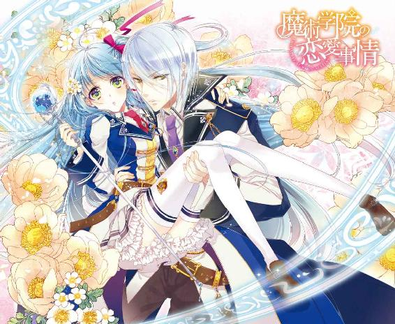
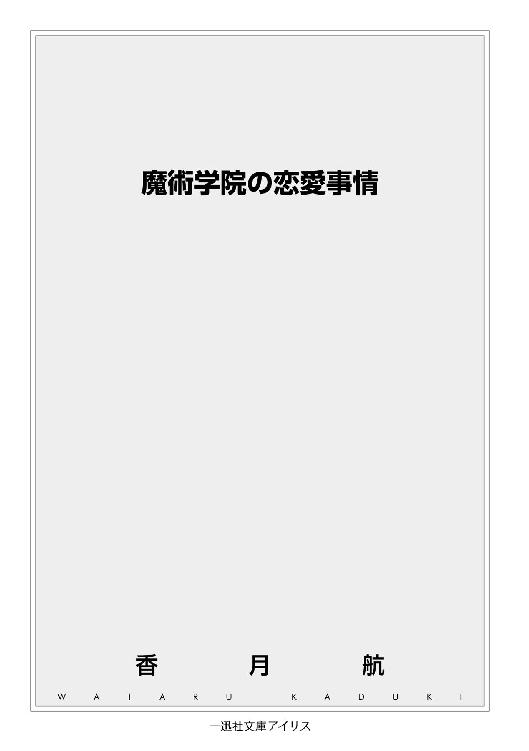
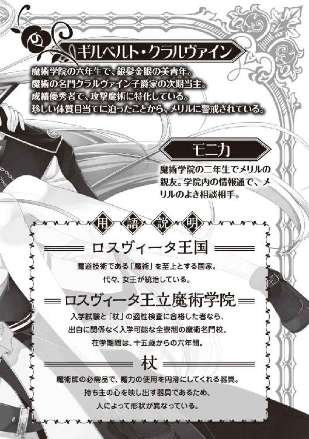
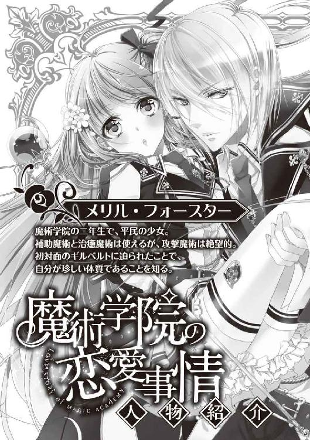
イラストレーション ◆ 石川沙絵
魔術学院の恋愛事情
橙色の日差しが、見慣れた教室の天井を染め上げる。昼と夜の間、世界の全てが赤になるこの時間は、とても美しいと思う。
そう、たとえそれが〝視界を埋める大半〟の背景に過ぎないとしても。
「どこを見ている？」
背筋に響く低く甘い声色に、投げかけた思考が連れ戻される。
整った輪郭を滑り落ちるのは、まるで刃のような輝く青銀。対照的に、私のマヌケ顔を映すキレ長の瞳は金色。彩られた内側には、すっと筋の通った鼻と抜群の位置で引き結んだ唇。
あれだ、よーするに、すっごい美形が、何故か私の超至近距離にいらっしゃいます。
「............」
両手首を掴まれ、背中は下の机に縫い付けられたように動かない。整ったお顔は吐息がかかるような距離で、今も刻一刻とその隙間を狭めつつある。
「......あの、先輩。聞いてもいいですか？」
「なんだ？」
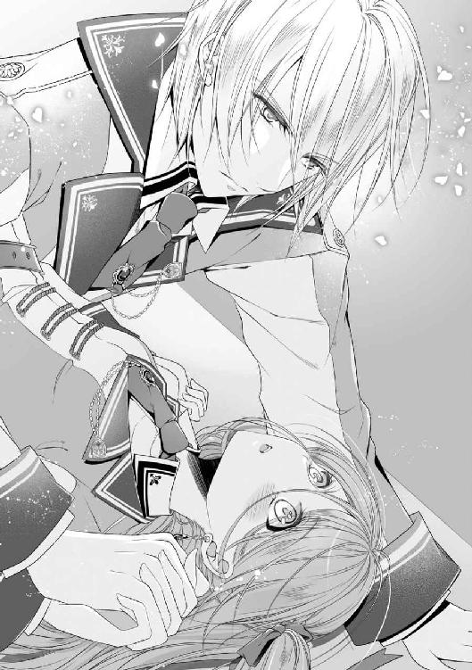
「なんで私、名前も知らない先輩に押し倒されているんでしょう？」
この王国の名は『ロスヴィータ』と言う。代々女王の治めるこの国は、温暖な気候と豊富な資源に恵まれた穏やかな地であるが、『魔術』を至上とする魔道国家でもある。
大気中に溢れる『魔素』と言う力を駆使し、国を守る外壁から一般家庭の便利雑貨まで、大半のものをそれでまかなっているのだ。
そして、その魔術を学ぶための最高の名門校。唯一の国立・国営の機関であり、才能のある者ならば出自を問わず、十五歳から入学が可能。全寮制で在学期間はなんと六年間。
それがここ『ロスヴィータ王立魔術学院』だ。
運よく才能を持って生まれた私、メリル・フォースターは、難関とされる入学試験や必需品『杖』などの適性検査を無事に乗り越え、今年で学院生二年目になる。まだ特筆するような部分はないものの、クラスの友達とも寮の相方とも問題なく、日々平穏に暮らしている。......暮らしていたのだ。そう、平凡で何もない毎日を、楽しく生きていたのだ。
（はい、現実逃避終了）
目を開けば、相変わらず夕日に染まった教室の一角。至近距離には美形の先輩がいらっしゃる。一体何がどうしてこうなってしまったのか。
とりあえず、私が投げかけた『知らない』という言葉に、先輩は整った形の眉をひそめている。気分を害したとしても仕方ない。知らないものは知らないのだから。
「......俺は六年のギルベルト・クラルヴァインだ。それなりには有名なつもりだったが、まあこんなものか」
「ああ、クラルヴァイン先輩。名前だけ聞いたことあります、少し」
「そ、そうか。少しか」
眉間の皺を一本増やして、深く息を吐く。先輩、この距離でため息つかれるとすごくくすぐったいですマジやめて。
ともあれ、クラルヴァインと言えば、確か子爵位を賜る貴族でありながら、魔術の名門としてもその名を連ねている家だ。加えて先輩本人のこの整った容姿とくれば、有名じゃない方がおかしいだろう。私のように、なーんの興味も関心もない庶民がいるのも事実だけど。
「それで、名門家の先輩が一平民の私に何のご用でしょう？」
自分で言うのも何だけど、私は本っ当に平凡な生徒だ。庶民の家庭で生まれ、学院には入れたものの成績はやや下め。容姿も先輩とは違い、黒っぽい青髪に緑眼とどちらもこの国ではよく見る色だし、背も低く胸も小さめ。礼賛の言葉には縁遠い。
どう考えても彼とは住む世界が違う。こんな事態になっていることが、まず何かの間違いとしか思えない。
「この体勢から連想するようなことは、そう多くはないのではないか？」
「寝技の練習ですか？」
「斬新な返しだな」
「あとはすっごい目が悪くて、誰かと間違えたとか？」
「あいにくと、視力が下がった覚えはないな。メリル・フォースター」
残念ながら、呼ばれているのは私の名前だ。同姓同名の美少女を聞いたこともない。
「......名前で呼んでも構わないか？」
「......っ!?」
左手の拘束が解かれて、離れた流れのままに指先が頬にふれる。
「くすぐったいです」
「じきに慣れる」
ゆっくりと滑りおりて、あごの辺りで一度止まる。軽く上を向かされれば、もう影の重なるような位置にご尊顔が。
「............」
視界を埋める男性の姿は、びっくりするほどきれいだ。赤い日差しが濃い影を落として、より一層整った輪郭を際立たせる。このまま絵画として切り抜いて飾ってしまえるぐらいに。......けど、心がときめくようなことはない。
（この人、瞳に熱がない）
この上なく近くにいるのに、『観察されている』とでも言うのだろうか。ますます美しい色を魅せる金眼は、何の感情も映さずにこちらを見ている。見ているだけだ。
「......珍しい反応をするな。俺がこの距離まで迫って、無表情を通す女は初めてだ」
「貴方こそ。色事を構えるような顔ではありませんよ」
次の瞬間、初めて先輩の顔に表情らしい表情が浮かんだ。きょとん、と音がしそうなぐらいの、ちょっと間の抜けた驚きが。
「そんなこと、初めて言われたな」
「いつもあんな無表情で女性に迫ってたんですか。割と酷いですね」
「......そんなに酷い顔をしていたのか」
予想外にも彼の手はあっさりと外された。大きな影がどいて、開けた視界に夕日がしみる。
（拘束することが目的じゃなかったの？）
彼は何やら少し落ち込んでいるご様子だ。いきなり押し倒してきたくせに、こんなに簡単に解放するなんて。それこそ本当に、寝技の練習でもしたかったのか？
「先輩、もう用は済みました？ 私、帰ってもいいですか？」
「......え？ ああ、悪い。ちゃんと用件を伝えていなかったな」
若干呆れつつ声をかければ、ハッとした様子で顔を上げる。いや、普通に話せる内容なら、わざわざ押し倒さないで欲しかったのだけど。
（私、異性にあんなことされたの、初めてなのに）
あれがモテる男流の挨拶なんだとか言ったら、殴ってもいいだろうか。立ち上がった彼の背は私よりも頭一つ以上高く、腰から下は嫌味なほどに長い。広い肩幅としっかりとした男らしい体つき。顔以外も整ってるとか、さすがにちょっとムカついてきたわ。
「はあ。それで、ご用件は何ですか？ 私たちは今日が初対面のはずですが」
その苛々した気分のまま、質問をしてしまった。
......今になって思う。あの時、用件を聞かずに逃げていたなら、結末は変わっていたのだろうかと。
「では、単刀直入に。メリル・フォースター、俺の子供を産んでくれ」
「............は？」
『聞こえなかったか？』とどこまでも無表情に問いかける彼に、力の限り言い返したい。聞こえなかったことにしていいですか？ いや、聞かなかったことにして、今から逃げていいだろうか。
（ドン引きだ）
いきなり何を言い出すかと思えば、冗談にしてもたちが悪い。これが冗談じゃないなら、
「貴方、頭おかしいんじゃないですか？」
引きに引いた結果、ついポロッと言ってしまった。慌てて口をふさぐも、時すでに遅し。
「頭おかしい......？」
「す、すみません!! つい口が滑って」
やってしまった！ どんな変態発言をしたとしても相手は最上学年、そして貴族様だ。普段身分をとやかく言われないから忘れがちだけど、それが通用するのは授業だけの話。とにかく頭を下げる。全力で下げる！
（子爵ってどれぐらいの家だっけ!? 何かされたらどうしよう!?）
「おい、メリル・フォースター？ 何故頭を下げるんだ？」
「は？ ......え？」
ところが意外なことに、彼は平然としたままだった。静かに怒っている雰囲気もない。
「だって今私、失礼なことを......怒ってないんですか？」
「怒る理由がないだろう。的確な反応だったから、むしろ感心していた」
「的確って......」
自分で言ったのに頭おかしいと思ったのか、この人。鋭い印象の外見なのに、中身はそうでもないのかしら。私が先入観で『貴族は怒りやすい』と思っていたのもあるけど。
「まあ、確かに〝頭おかしい〟かもな。一応弁明をしたいのだが、構わないか？」
「失言してしまったのは私ですが......長いお話ですと、ちょっと」
視線を動かせば窓の外は日が傾き、空も赤より黒の方が多くなっている。学院の完全施錠まで、そう時間は残っていないはずだ。お互い寮の門限もあるし、察してくれただろう。
善処すると頷くと、彼は手近な机に腰かけ、つまらなそうな無表情のまま話し始めた。
「どう話したものか......占術師はわかるか？」
「はい、占いの魔術を本職にしている方ですよね」
二年の私は分野としてしか習っていないが、魔術の中でも特殊なひとつだ。予知、先見、未来視。呼び名はさまざまだが、明日の天気から男女の相性まで、とにかく先を読むことに長けた魔術師を『占術師』と呼ぶらしい。
「貴族にはだいたい抱えの占術師がいるのだが、先日帰省した際、当家のそれに興味深いことを言われてな」
ふと、金眼が私をとらえる。射抜くような強い視線に、一瞬だけどきっとした。
「メリル・フォースター、お前は非常に珍しい体質の持ち主だそうだ。お前と交わることで、俺は潜在能力をあますことなく発揮できるらしい」
「......まじわる？」
「また、俺達の間にもうけられる子は、類まれな資質を持って産まれてくるそうだ」
「こどもって......え、ちょ、ちょっと待って下さい!?」
まじわるの次が『子供』？ 男女が『交わる』と言うことは、それってつまり。
「もしかして、私を性的な意味で抱くとか、そう言う話をしてらっしゃいます？」
「ああ、そうだが」
「ぎゃあああああ――――――!!」
顔に血がのぼってくる。この男、さっきからサラッとなんてことを言っていたんだ!! 弁明も何もない、まんまだよ！ 抱かせろって言ってたよ!?
「なんだ。俺が相手ではそんなに不服か？」
「初対面で不服も何もありません!! 第一、何の弁明にもなってませんよ！」
前言はやっぱり撤回しない。この人絶対頭おかしい！ もし彼が普通だと言うのなら、私はこの国の貴族を今後絶対信じない。始終無表情で子供産めとか言ってくる男が、普通だなんて認めてなるものか！
「だから言っているだろう。交わりに意味があるのだと」
「意味があろうとなかろうと、普通の人間はいきなり抱かせろなんて言いません！ そもそもいきなり押し倒したりしません！」
そうだ、だからいきなり押し倒してきたのか、この人!! 意味がそのままってことは、私が抵抗しなかったら学院でコトに及ぶつもりだったのか!? 初対面の人間と、学院の教室で!?
「あ、有り得ないわ、この変態！ いいえ、犯罪者ですね!!」
「まだ何もしていないのだから、それはさすがに撤回しろ。雰囲気を作ったら移動するつもりだった」
「説明を後回しにしてですか？ その時点で最低ですよ」
それともこの男、今までそうしてきたってこと？ そりゃ外見だけは群を抜いているけど、貴族社会はそんなことが許されるの？
じっと睨みつければ、多少怪訝な様子は窺える。けど、悪いことをしたとは思ってなさそうだ。やっぱり、そうしてきたってことか。
（この人は本当に、別世界の人間だわ）
深くため息をついて、今度は私が彼を見据える。ここまで聞いたらもう十分だ。
「もう貴方と話すことはありません。失礼させて頂きます」
「なっ!? おい待て、メリル・フォースター！」
誰が待つか冗談じゃない！ こんな頭の痛い話にこれ以上付き合ってられるか。挙句に貞操の危機とか本当に有り得ない。
廊下まで響いて来る声を無視して、振り返らないで走り出す。窓の外はすっかり暗くなっているし、この時間なら先生が戸締り確認に巡回しているはずだ。もし追いかけて来るのなら、助けてもらおう！
（なんで私がこんな目にっ！）
世の不条理さに涙が出そうになりながら、階段を駆け下りて、女子寮への帰路を急ぐ。通い慣れた数分の距離すらもどかしくて、もつれる脚を叱咤しながら前へ手を伸ばす。
「よし、逃げ切ったあッ！」
ようやく届いた扉をこじ開け、そのまま力いっぱい閉めた。当然ほかの生徒たちに注目されたけど、構わず入口広間に座り込んでしまう。
ああ、本当に疲れた。早く寝て忘れよう。今日は遅くまで居残って、先生に怒られる前に急いで帰って来ただけだ。何もなかった、変態になんて会ってない！ そう暗示をかけるように繰り返しながら、しばらくの間たそがれていた。
「うわあ、そりゃまた......えらい面倒ごとに巻き込まれたわね」
「でしょ？ 意味がわからないわよもう」
心身共にくたくたになってたどり着いた寮の自室。亜麻色のふわふわした髪をまとめながら相方の少女、モニカが苦笑いをこぼす。
この学院は全寮制であり、かつ全ての部屋が二人部屋になっている。とは言え、二人で使うには勿体ないほどの広さがあるし、ベッドにはそれぞれ簡易ながら天蓋がついている豪華仕様だ。備え付けの机や椅子、衣装棚なども質の良いものばかりで、施設のすばらしさは国立名門様々である。
在学期間が長いこともあって、一年ごとに相方変更を申請できるのだけど、彼女とは去年から一緒。個人的には、卒業まで一緒でも構わないぐらい私の良き理解者だと思っている。
「貴族様のお戯れならいいんだけどね......」
ごろんと彼女のベッドに寝転がる私の頭を、ふっくらとした手が撫でてくれる。少しぽっちゃり気味の彼女は心優しく聞き上手。いつだって私の問題を自分のことのように真剣に考えてくれるいい子だ。友人関係には本当に恵まれている。
「慰めて終わりにしたいけどね。クラルヴァイン家って言うのが、冗談の線が薄いかも」
「え、なに？ 問題のある家なの？」
「問題って言うかね......」
言い淀みつつも心当たりがあるのだろう。我関せずの私と違い、モニカは学年内でもかなりの情報通だ。ベッドから起きて姿勢を正すと、大きめの眼鏡をくいっと持ち上げて、彼女も真面目な表情になった。
「貴族としては問題ないわ。むしろ安定してるから、玉の輿狙いならオススメ」
「別に狙ってない」
「欲がないわね。まあそっちは問題ないんだけど、魔術師としてはね......最近ふるってなかったみたいだから」
「そうなの？」
魔術師は、生まれ持った才能がものを言う職業だ。先天性のソレがなかった場合、どんなに努力をしても魔術を扱うことはできない。しかも、遺伝する条件が極めて曖昧で、名門血筋でも受け継がないこともあるし、平民からポッと生まれることもあるのだ。もちろん〝名門〟と呼ばれる家は、その対策もしているのだろうけど。
「衰退って言うほどではないけど。あそこは『子爵』と『魔術名門』の二枚看板でやってきてる家だから、片方でも傾くと痛いみたいでね」
「ああ、確かに」
本来はどちらか一つでも十分だが、ここまで両方を掲げてしまった以上、後に引けないのはなんとなくわかる。有名だからこそ大変そうだ。私には関係ないけど。
「ギルベルト先輩、いえ、次の当主は当たり株っぽいからね。期待も義務も大きいんじゃないかしら」
「あの変た......ごめん、あの人優秀なの？」
「あのクラスでも五指に入る実力者よ」
あくまで噂程度にしか知らないのだけど。先輩が在籍している今の六年生クラスは、長い学院の歴史から見ても異常なほど成績優秀者が集まっているらしい。もう王城から勧誘が来ているとか、二年のクラスでも聞いたことがある。
「同じ学院に通ってるのに、なんだか遠い話よね」
「その遠いはずの人に押し倒されて来たんでしょ？ 家柄はもちろん、あんな美形めったにいないわよ？」
眼鏡の奥の茶色の目がにやりと嗤う。真面目な話は終わったみたいだけど、色恋話でからかわれるのは楽しくない。ましてや、あんな出来事で。
「よく知りもしない人と変なことしたくないわよ。夢見がちでもなんでも、愛情がないのに子供とか絶対無理。モニカ代わってよ」
だいたい、顔は良くても終始無表情だったし。何より犯罪未遂の変態だ。そんな相手なんてごめんこうむる！
「はいはい悪かったわ。ただの戯れで諦めてくれるといいわね」
ため息と苦笑の空気に包まれながら、結局だらだら雑談をしてから眠った。いつも通りに過ごせば、夕方の出来事はただの珍事件として忘れてしまえると思った。
けれど翌日、私の期待は真逆に裏切られることになった。私は忘れていたのだ。この国のカミサマとやらは、あの変態をやたらエコヒイキしまくっている存在だと言うことを。
「ねえねえ、女子寮の前にすごいカッコイイ人いるんだけど」
「あれ、六年のクラルヴァイン先輩じゃん！ 誰よ待たせてるの！」
「............」
「......どうするのよ、待たせてる人」
朝一番、日差しの中でキラキラ輝く美形男子の登場に、浮き足だつ年頃の女子生徒たち。その後ろで、お通夜のような空気の私とモニカ。......何がどうして貴方そこにいるのさ。
「メリル、どーすんの？」
「人違いでしょ？」
そうだと願うしかない。ほら、彼を待たせてるどこかの美少女さん、早く行ってあげてよ！
けれど、待てども待てども美少女は合流せず。寮から出てくる女子を、冷めた目で眺めては首をかしげるばかりだ。時折、好奇心に負けた生徒が話しかけているが、異様なまでにそっけなくあしらわれている。
「人違いだと思いたいけど、あたしは業者用の裏口を勧めるわね」
モニカの提案に深く頷いて、黄色い声をあげる生徒たちとは逆方向の裏口へ歩き出す。小さく振られた手が、まるで戦地へ赴くような気分にさせてくれた。
奇跡みたいな幸運で入学できたこの学院、卒業までは精一杯頑張ろうと決めていた。けれどこの日、初めて私の頭の中に『無断欠席』と言う言葉が何度も浮かんでいた。
さて一日が始まって数時間。午前の授業を無事に終えて、昼休憩を告げる鐘が鳴り響く頃。
「メリル・フォースターはいるか？」
食堂へ急ぐ生徒たちを遮ったのは、日常にはあまりにも不似合いな美形の先輩様だった。途端に慌て始める教室と、集中する視線。四十人程度のクラスで名指しとなれば、逃げられるわけもない。
「これはクラルヴァイン先輩、貴族のご子息がド庶民の私に何かご用でしょうか？」
好奇の視線を無視しつつ、満面の笑みを浮かべて近付く。もちろん、全力で嫌味だ。
「......何を怒っているんだ？」
「怒るだなんてとんでもない。私のような下賤の者が先輩とお話しなんて恐れ多くて......一刻も早くこの場を去りたいだけです」
「そうか、気が利かなかったな。ではどこか、二人きりになれる場所へ」
「貴方と話したくないと言っているんですよ」
残念ながら、この変態に嫌味や皮肉は通じないようだ。いとも平然と返された言葉に、貼り付けていた笑顔は一瞬で崩れてしまった。全く、わざとでも天然でも忌々しい！
「ご用がなければ、どうぞお引取り下さいませ。でなければ、今すぐに私が去ります」
「お前に用ならある。頼む、話を聞いてくれ」
「昨日の話ならお断り......ちょ、ちょっと!?」
問題を起こされる前に断りたかったのに、彼は想定外の行動をとった。頭を下げたのだ。貴族の彼が、庶民で下級生の私に対して。それも、まっすぐ向かい合って正式な礼の形でだ。
「せ、先輩!? やめて、早く頭上げて下さい！」
ただでさえ視線を集めていたと言うのに、まさかの状況。小声がざわめきに変わるのには何秒もかからなかった。
「聞きます、話を聞きますから！ 早くやめて下さいってば！」
「そうか、感謝する」
我ながら悲鳴のような懇願に、ようやく彼は正した姿勢のまま顔をあげた。薄い唇がゆるやかな弧を描く。そこに打算の色が見えないのもまた腹立たしい。
「ではそうだな、やはりどこか二人きりになれる場所に」
「食堂でいいですよね！ これからちょうどお昼ですし！」
この流れできて『二人きりになれる場所』だ。もう本当にやめて欲しい。周りに聞こえてなければいいんだけど。
それに、そんな場所でまた押し倒されでもしたら、今度は絶対に殴ってしまいそうだ。相手が貴族でも、貞操の危機になりふりなど構っていられるものか。
「じゃあ行きましょう。さっさと行って、さっさと終わらせましょう！」
なかば無理矢理に、彼の返事を待たずに歩き出す。ちらっと見た教室では、モニカがまた兵士を送り出すような表情で手を振っていた。
学院の食堂は、その名がつく他の場所に謝りたいぐらい豪華なところである。高級宿を彷彿とさせる高い天井とシャンデリア型の灯り。机も椅子も質が良く使い心地は抜群。広く取られた窓からは穏やかな日が差し込み、要所要所には植物が飾られている。どこを見ても清潔な落ち着いた空間。入学したての頃は、食事の度に感激していたものだ。
この整った環境で、出される食事も大変美味。品目も多いし、一番高いものでも銀貨一枚程度と言う良心的過ぎる価格。学院に来て良かったと思うことの一つは、この食事環境の素晴らしさだ。卒業したくないと言う生徒がいるのもよくわかる。
「それでメリル、注文は？」
「自分で買いますからお先にどうぞ」
これで隣りにいるのが変態男でなければ、今日も食事を存分に楽しめたのに。まあ、彼も外見だけならご馳走様と言いたいぐらいだけど。注文待ちをしている間も、あちこちから女子の熱い視線が飛んでくる。それは憧れであり好意であり、私のように目の保養でもある。美形は美形で、凡人にはわからない苦労をしているのかもしれない。
「会計を一緒に済ませた方が楽だろう」
「すみません、この人とは別にお願いします」
とは言え、私には関係ない話だ。露骨に無視したところ、少しだけ眉が下がった気がした。モテ男には拒絶など縁のないものだろう。ざまーみろ。
「食事ぐらいは奢らせろ。男の矜持に関わる」
「そういうのは他の女性にどうぞ。貴方に借りなど作りたくありませんので」
冷たそうな外見の割に紳士らしく、ますます眉が下がった。昨日の発言を聞いている身としては、女扱いされるのがもう嫌なんだけど。
「......って、ちょっと先輩!?」
などと、ほんの数秒悪態をついていた隙に、私の注文したお盆が手の中から消えていた。勝手に移動するなんてことはなく、当然犯人は隣りの彼だ。ちょうど私の頭上まで持ち上げてスタスタと歩いて行ってしまう。足長っ歩幅広っ!?
「返して下さい私のお昼ご飯！」
「席についたら返す。ほら、行くぞ」
無表情ながら、そこはかとなく漂うしてやったり感。慌てて追いかけるも、圧倒的な歩幅差にどうしても追いつけない。結局彼が見つけた日当たりの良い角の席に落ち着くまで、視線を集めながら不毛な追いかけっこをする羽目になった。その上、いつの間にか制服のポケットにご飯代が仕込まれている。......やられた。したり顔の彼を睨みつつ、仕方なく向かいの席に腰かけた。
（......何の味もしない）
今日は私の好物のハンバーグだったのに、口に含んだそれはちっとも美味しくなかった。原因は味覚障害でもなければ調理人の失敗でもなく。
「......俺の顔に何か？」
憎たらしいぐらいに平然と昼食をとっている、眼前の男のせいだ。
「大変整った形の目と鼻と口がついておられますよ」
「それはどうも」
渾身の嫌味を返しても、その表情はぴくりとも揺らがない。無表情のまま、淡々と本日の日替わりランチを口に運び続ける。あんな食べ方をしていて、本当に味がわかるのだろうか？ さすが貴族だけあって、所作は恐ろしいほどにきれいなんだけど。
「......それでクラルヴァイン先輩、今日のご用件は何ですか？」
結局私の方がこの空気に耐えられず、話を切り出した。ほとんど面識のない男と二人っきりで食事なんて、私にはできない。
「俺の呼び方はギルでいい。長くて呼びにくいだろう？」
「結構です。名前を呼ぶような仲ではありませんし、これからなるつもりもありません」
早速どうでもいい返答。が、めげてなるものか。私は美味しい昼食をとりたいのだ。この男のいない席で。
「先輩、ご用件を」
「メリル、俺の何がそんなに嫌なんだ？」
今度は私の眉が反応してしまった。引きつる方に。
「私は今日の呼び出しの用件を伺っているのですが？」
「メリル」
「名前、呼ばないで下さい」
思い切り語尾を強めて返してみると、私がわかる程にしゅんとした表情を見せる。が、すぐにまた表情を消すとわざとらしく息を吐いた。ため息をつきたいのはこっちの方だよ。
「女は名前で呼んだ方が喜ぶだろう？ 俺も家名呼びされるのは好きじゃないし」
「では、私も呼びませんから呼ばないで下さい。ご用件を」
「呼ぶなって......」
さすがに予想外だったのか。言葉に詰まると、目を閉じて気だるそうに前髪をかきあげる。だから、そういう態度をとりたいのは私の方だっての。さっさと用件を聞いて、平穏な日常へ戻りたい。
「先輩、ご用件を」
五度目の強い問いかけに、彼は今度こそ諦めの表情を浮かべて、深い深いため息をついた。
「......用件は昨日の続きだ。ちゃんと話を聞いて欲しい」
食堂の喧騒が遠くなるのと同時に、彼から感じる魔術の気配。これは確か、防音用だっただろうか。まだ習っていないからよく知らないけど、何とも用心深いことだ。それとも、昨日のアレが周囲を警戒しなければならないことなのか？
「私に貴方の子供を産め、でしたよね？ お断りしたはずです」
「いきなり子供まで話を飛ばしたのは、俺が性急だった。すまなかった」
先ほどまでやる気なさげだった金眼は、今はまっすぐに私を映している。鋭く、真剣な色を見せて。
「この件にはずいぶん真面目なんですね。そんなに私のお腹が必要なんですか？」
「腹と言うより、お前の性質そのものだな。交わりをもって強くなる。それが、本人の努力を凌ぐ意味を持つなら、欲して当然だろう」
当然なんて言われても、劣等寄りの私には理解できない。強くなるために人様に迷惑をかけなきゃいけないのなら、そんな方法はごめんだ。まあ、平民の常識とは違うのだろうけど。
「望む額で謝礼は用意するつもりだし、金銭以外でも希望はできるだけ叶えよう。頼む、もう一度考えてみて欲しい」
「謝礼、ね」
使いかけのフォークをあえて音を立てて置く。いや、叩きつけた。音は聞こえていないはずだけど、その一瞬、周囲の視線を集めてしまうぐらいに。
「メリル......？」
彼は自分の言葉の意味に気付いていないのだろう。ああもう、だから嫌なのに。疑問符を浮かべる先輩に、今度こそ深い深いため息をついて返す。
「その考え方が嫌なんですよ。謝礼とか、そういう問題じゃないんです」
「では何が問題だ？ さすがに俺の顔は整形できないが、対応は誠意をもって......」
「それは本来、恋をして、結婚して、それからすることでしょう？ そんな大事なことを、ものやお金で解決したくないんです。貴方がたにしてみれば『そういう関係』も普通なのかもしれませんが、私は貴族の教育は受けていないし、その世界や考え方に関わりたいとも思わない」
ちゃんと伝わるように、しっかり、はっきりと発音する。恋愛結婚をして、愛する人の子供を産みたい。平凡でありふれた願望じゃないか。平凡な私が主張して何が悪い。
「なぜ結婚しなければならないんだ？ いざとなれば、こちらとの件は伏せておけば良いだろう。親権もクラルヴァインが......」
「貴方、本当に最低ッ!!」
......伝わるように努めたつもりだったけど、平行線は変わらなかったようだ。あまりにも価値観の違う返答に、今度はフォークを机に突き刺してしまった。防音しているにも拘わらず、慄いた生徒の視線が集まる。が、そんなことはどうでもいい。
「信じられない！ 私を何だと思ってるのよ！ 私の産む子は私の子です！ それを奪いとるなんて、貴族でも絶対許さないから!!」
「俺との間にもうけるのなら、俺の子でもあるだろう」
「だから嫌だって言ってるでしょ！ 私は好きな人の子供しか産まないし、貴方とはいくらお金を積まれてもそう言う関係にならないと言ったのよ！ 絶対にね!!」
相手の立場などすっかり忘れて、思いのたけを叫びきった。これで罰せられたとしても構わない。だって私は、とても大切なことを主張しただけだ。胸に渦巻く罵詈雑言を口にしなかっただけ、まだ褒めてもらいたいぐらいだわ。
「............」
肩で息をしながら、それでも視線は外さない。渾身の怒りを込めて睨み続ける。『何故怒っているのかわからない』と雄弁に語る金眼を。何の起伏もブレもなく、ただ私を観察しているその目を。
「..................ああ、そうか」
ところが数秒の後、何故かそれは、妙に嬉しそうな色を浮かべて輝いた。
「な、何ですか？」
「メリル、今恋仲の男はいないのか？」
今度はいきなり何を言い出すのか。意図は全く読めないけど、表情がどこか嬉しそうに変わっている。
「......いませんが、それが何か？」
「では、懸想している人間は？」
「なんでそんなことまで......」
「重要なことだ」
先ほどよりももっと真面目な口調で問われ、ついたじろいでしまう。怒りで睨みつけていたけど、真剣な眼差しに変われば直視しづらい。この無駄美形め。
「......まだいませんけど、貴方には関係ないでしょう」
「大有りだ、安心した」
大きな手が私の手に触れる。すぐ払おうとしたのに、両手でしっかり掴まれてしまう。
「メリル、俺を好きになってくれ」
「..................はあ？」
「好きな男にならば、肌も許すし子も産んでくれるのだろう？ なら、お前が俺を好きになってくれれば、何の問題もない」
そう言った彼は、初めて見る笑顔だった。それはもうキラキラと眩しい、一切の迷いなく正しいと信じきっている人間の目。
「俺をそういう対象として見て欲しい」
「......貴方、やっぱり頭おかしいんじゃないの？」
だから、そのキラキラにドン引き、全力逃走してしまった私は、きっと悪くない。手を振り払われても笑顔だった彼は、まるで初めて恋をした少年のように幸せそうに佇んでいた。
「自分に惚れろなんて面と向かって言う人、初めて聞いたわ。それだけ自信があるのかしら」
「顔以外のいいところが全然見当たらないし、むしろドン引きなんだけどね」
そうして逃げ帰った教室。波乱のお昼後の授業は、幸運にも自習だった。ほとんど食べてないし精神的にも削られたので、不在の先生には心から感謝したい。改めて買って来た売店のサンドイッチを頬張りつつ、机に突っ伏す私の頭をモニカが撫でてくれる。ああ、癒されるわ。
「まあ、でもそうね。あの人はあの性格で良かったのかもしれないわよ」
「どこが!?」
トンデモ発言に、うっかりハムがのどにひっかかった。あの変態のどこに良いところがあると言うのか。ヤツのおかげで『貴族』が丸ごと嫌いになりそうなのに。
「いや、さ。もし彼が印象通りの冷静な人物なら、理由なんて絶対話さないでしょう？ 話したら嫌がられるのはすぐにわかることだし。色恋に不慣れなアンタが、普通に口説かれてたらどうなると思う？」
「そ、それは」
「どうなの？」と真顔で聞かれれば、言葉に詰まるしかない。私の恋愛経験はゼロ。対してヤツは、変態な中身を知ってなお、あの外見だけは評価できる。もしあの無駄美形が、普通に口説いて来たとしたら？
「......まずい。否定できないかも」
「で、浮かれてついて行って、ポイ捨てされるのよね」
「ポイ捨て!?」
悩んで返した答えは、ため息混じりに一蹴された。ポイ捨てか......その通りかもしれない。ようはそれぐらい、本来なら縁のない相手なのだから。
「昨日はふざけて玉の輿とか言っちゃったけどね。どうも本当みたいだから真面目に話すわ。メリル、庶民のアンタが貴族の妻になれると思う？」
「それは......」
また言葉に詰まってしまう。モニカの目は、尋問でもするかのように冷たい。
「クラルヴァインは貴族らしく、家柄にこだわりがあるわ。高名な魔術師ならいざしらず、大した記録も特別な才能もないアンタじゃ門前払いがいいとこよ」
「ちょっと待ってよ！ 私は最初からクラルヴァイン家に興味ないわよ!?」
「そうね。でも正直、ポイ捨てや門前払いなら良い方なのよ」
慌てて否定する私に、また優しく頭を撫でて返してくれる。けれど、眼鏡の奥はやはり全く笑っていない。
「......どう言うこと？ 門前払いが良い方なら、どうなるって？」
「その占術師の言う通り、アンタが本当に素晴らしい子を産めるとしたら、とても厄介だと言うことよ」
張り詰めた空気が肌に刺さる。サンドイッチを置いて姿勢を正せば、モニカは歯がゆそうに苦笑した。
「昨日も話した通り、クラルヴァインは今、優秀な魔術師を望んでいる。ギルベルト先輩一人では足りないぐらいに。メリルが産む子が本当にそうなら、のどから手が出るほど欲しいでしょうよ。でも、あの家は平民を妻にはしない。彼は男だからね」
「あ......」
そうか、法律が逆に働いてしまうんだ。女王が治めるこの国では多妻は許されない。元々女性を大切にする国柄で、男性の浮気に関しての法律はかなり厳しい。婚姻に関しては特に。
「平民を愛人として囲って、罰を受けるようなことはしない、か」
「妻として迎えられ、公にされるのは釣り合う家柄の女。それが正しい貴族の婚姻だもの。アンタとの子は、養子とでもされるでしょう。クラルヴァイン姓を名乗ってね」
「やっぱり私から子供だけ奪るってこと？」
「いいえ。優秀な子を産める〝腹〟を名門家が手放すものですか。アンタは飼い殺されるのよ。公の場には出してもらえず『子を産む道具』としてね」
「............」
反論したくても言葉が出て来なかった。変態に絡まれたとか、そんな次元の話じゃなかったのか。......人としてすら、見られていないなんて。
「あくまであたしの予想だけどね。けど、平民が彼らの舞台に立とうとするなら、それ相応のものが求められるのは事実よ。メリルは可愛いけど、優秀とは言えないでしょ？」
モニカの手がそっと私の手を包む。話の信憑性を語るように、かすかに震えていた。
「あたしはアンタが好きよ。大事な友達だから幸せになって欲しい。そんな愛人よりも酷い生活なんて、絶対にして欲しくない。だからこそ、全てを口にしてくれた先輩の抜けっぷりに感謝したいわ」
「......そうね。あの人がアレだったことは、私にとって幸運だったのかもね」
手を握り返すと、弱々しいながら笑ってくれた。当事者よりもよほどモニカの方が落ち込んでいるようだ。本当に優しいのだから。
「有難う、モニカ。心配かけてごめんね」
「あの先輩が、どういうつもりでメリルに近付いて来たのか、本当のことはわからないわ。でも、気を付けて。ただの脅しで言ってるつもりはないから」
「うん、今度からは徹底的に無視してやるわ」
そんな物騒な可能性がある以上、無視は当然の自己防衛。関わってもロクなことはないし、昨日の犯罪未遂の時点で通報してもいいぐらいよね？
「もし逃げられそうになければ、バレット先生に相談してみるといいかもしれない」
「バレット先生？ 聞いたことないけど、誰？」
「上級生の教科担当だから、あたしたちはまだ面識がないわ。けど、うちの学院で最強と名高い魔術師よ。生徒が先生に頼るのは普通でしょ？」
なるほど、確かにこの国最高の学院の先生が弱いはずがない。国の直属だから、名門家に対しても有効かも。何かされる前に大人に頼ることも考えておこう。
「なるべく何事もなく終わることを願ってるけどね」
「本当にね」
そろってついた深いため息は、終業の鐘の音に消える。本当に、平穏な生活が返ってくるといいのだけど......最後に食堂で見た彼のキラキラ笑顔を思い出して、私は小さく頭を振った。
翌日は朝から臨戦態勢だった。いつもより早く身支度を済ませて、寮の周囲を警戒しながら恐る恐る外へ出る。......よし、ヤツの姿は見えない。
「メリル、こっちも大丈夫よ」
「ありがとモニカ！」
周りの生徒の訝しむ視線もなんのその。ほっと胸を撫で下ろし、弾む思いで学院に向かう。しかし、穏やかなのはそこまでだった。
「............」
午前授業の終了と憩いのお昼休みを告げる鐘の音は、悩みの種も同時に連れてきた。
「どうかしたのか、メリル」
「......何かご用ですか、クラルヴァイン先輩」
逃げるために駆け寄った扉の向こうには、銀髪金眼の美形がすでに立っていたのだ。先輩が後輩の教室に来るのは別に珍しくない。だがしかし、一分一秒を惜しんで逃げようとした私よりも早く、なぜ貴方がそこに居るんだ!? 教室が違う棟なのに、いくらなんでも早すぎる。
（駄目だ、逃げられない......）
クラスの皆は好奇半分哀れみ半分ですでに避難を完了している。私から近付いて見つかってしまった以上、今から無視をするのも難しい。モニカだけは何か言いたそうにソワソワしているけれど、目で合図して離れてもらった。本当は助けて欲しいけど、彼女を巻き込むのはまた違う話だもの。
「メリル、これから昼休みだ。俺がここに来るのに、食事以外の理由があるのか？」
問題の本人は、さもそれが当然のようにきょとんとしている。こちらは額に浮かぶ青筋を隠すので精一杯だというのに。
「先輩、食堂も売店もこの棟にはありませんよ？ 道をお間違えでは？」
「そうだな。だから行くぞ」
「え？ ちょ、ちょっと!?」
この男が他人に構うわけがなかった。手を掴まれたと思った瞬間には、その長い歩幅で廊下に引っ張り出されている。この間わずか一秒。
「離して下さい！ どこへ連れて行く気ですか!?」
「ああ、忘れていた。メリル、一緒に昼食をとろう」
「順番が逆です！ はーなーしーて！」
小娘の抗議などどこを吹く風。手を繋ぐと表現するには大分無理がある姿勢のまま、私の悲鳴は引き摺られて行く。
数分後、ようやく辿りついた食堂では、針のムシロのような空気に迎えられた。言うまでもないけど環境管理などが原因ではなく、あちこちから向けられる視線が刺さるのだ。一部の女子にいたっては射殺さんばかりの目つきだ。
「メリル、注文はどうする？」
原因たる顔だけはきれいな先輩は、何事もないように隣りに立っていらっしゃる。貴方のせいでこっちは散々な目に遭っているのに。
「あの、名前を呼ばないで下さいと言いましたよね？」
「それを強制する権利は、お前にはないだろう？」
「それは......」
ちら、と冷たい視線を向けられ、言葉に詰まる。確かに強制できる権利はない。でも、それを言い出したら何も言えないじゃない。差し込む日は温かいはずなのに、背筋が寒い。
（......帰りたい）
昨日のモニカの話が頭をぐるぐる回る。本当は今この瞬間も、怖くてたまらない。もう彼には関わりたくないし、叶うなら今すぐ逃げ出したい。どこかに頼れそうな先生はいないだろうか。逃げ道を探してみても、好奇と嫉妬の視線を向けられるばかりだ。代わってくれるのなら、今すぐ代わるのに。
「......申し訳、御座いませんでした」
悩んだ末にこぼれたのは、蚊のなくような小さな謝罪。今日はもう逃げられないのなら、せめて関わりを最小限にしよう。興味など持たれないよう、急いで食事を終わらせる。爪を立てた手のひらは、自分のものとは思えないほど冷たくなっていた。
「......どうしても嫌なら、俺も考える。けど、できれば名前ぐらいは呼ばせてくれ」
それなのに、俯く私に降ってきた声は、妙に穏やかで優しくて。
「先輩......？」
思わず彼を見上げれば、迎えるのは無表情ではなく、ちょっと困ったように浮かぶ微笑み。きつく握った手に彼の体温がしみて、力が抜けてしまう。
「メリル」
彼が口にする私の名前はとても優しい音で、ストンと耳に吸い込まれてしまった。呼ばれたくないはずなのに、喧騒の中でもはっきりと届く。
「............はい」
やっぱり私は、何も言わなきゃよかったと〝違う意味で〟後悔して、またうつむく。頬に集まる熱を彼に気取られないように。ああもう、本当にこの人ずるい。世間ではきっとこう言うことを『反則』と呼ぶのだ。
長い順番待ちを終えると、昨日と同じ二人用の席に連れて行かれた。......私が羞恥に耐えている間に注文も支払いも済まされてしまったので、ついて行くしかなかったのだ。当たり前のように二人分のお盆を運んで、当たり前のように向かいに座る。実に手慣れた動きだわ。
「どうかしたのか？」
「いえ、何でもありません」
日当たりの良さに比例して、この席は見晴らしも良い。おかげで、四方八方からざくざくと視線が刺さってくる。やっぱり無理にでも逃げるべきだったかと思うも、差し出された温かい食事、しかも彼の奢りだと考えると乗り切るしかなさそうだ。
先輩は相変わらず、見事な動きで食事を口に運んでいく。音も立てずに切り分けられるソレは、まるで超高級食材のようだ。昨日は味がわかるのか疑問に感じたけど、日替わりランチもここまで美しく食べられるなら本望なのかもしれない。
「食べないのか？ それとも、俺に何か？」
「いえ、食べ方がきれいだなーと思って」
見惚れてつい自分の食事が止まってしまった。私とて人前で失礼にならない程度には使えるけど、彼と同等の技術を披露しろと言われたら絶対無理だ。
「きれい？ 初めて言われたな、そんなこと」
「できて当然だと思われているのかもしれませんね。先輩は容姿が目を惹きますし」
眉を下げて笑った彼に、私も少しだけ苦笑して返す。先輩は多分、こうした外的な部分は他よりも厳しく躾けられているだろう。美形がちょっとしたことで失敗すると、凡人よりも負の要素として目立ってしまうから。ご飯は美味しく食べられればいいだろうに。
「......メリルは、俺の容姿は嫌いではないんだな」
「はい？」
かけられた声に甘さが混じったのを感じて、顔を上げる。カトラリーを置いた彼は、まっすぐにこちらを見つめていた。
「昨日も一昨日もきれいだとか整っただとか、そういう言葉をかけてくれるだろう？ 褒め言葉だと思ったが？」
「ああ......そうですね」
半分は嫌味だけど、通じていないのが残念だわ。しかし、彼の容姿には本当に何の文句もないのだ。顔はもちろん痩身ながら男らしい体格で、おとぎ話の騎士のようだ。
「先輩は、とても素敵な方だと思ってますよ」
「社交辞令だな。好み、とは言ってくれないのか」
伏し目がちになった金眼が、艶を浮かべて笑う。元々鋭い形のそれは、まるで獲物を見定める肉食獣のように輝いている。ぽかぽかの日向の中においてなお、ぞっとする程色っぽい彼の姿に、今までどれだけの女が落ちてきたのだろう。――だが、全ての女が陥落するかと言えば、そうでもない。
「好みと言うものをよく考えたことがありませんでした。ですが、こんな小娘が何かを思うことはないと思います」
彼は美形だ。ああ、美形ですとも。だから何なのか。少なくとも、私の中ではときめきよりも恐怖と不安と変態近寄るな、だ。
「メリルは手強いな。容姿にはそれなりに自信があるんだが」
「繰り返しになりますが、先輩はとても素敵です。ゆえに、同じ生物として認識できないのだと思います。ほら私、雑草みたいなものですから、並べるのもおこがましいです」
「......お前、本当に斬新な返し方をして来るな」
『人間と雑草は交配できませんよ』と語る私に、一瞬だけいつもの無表情を浮かべた後、ふわりと微笑む。意図的に作った形でなく、自然に目を細めて。......こっちの笑い方だったら好みだな、とは絶対に言わないでおこう。おこがましいのは本当だし。
それにしても、好みがどうこう言ってくるってことは、やっぱり昨日の話は続行中ってことよね。『俺に惚れてくれ』が。
「......先輩、私は貴方の頼みを受ける気はありません。理由は昨日お話しした通りです。こうしてご飯に誘われても、正直困ります」
多少遠慮しつつ伝えてみれば、先輩は困ったように苦笑して返してくれる。立場的に罰せられても文句は言えないだろう。それをちゃんと聞いてくれる彼は、モニカの言う通り変わり種で有難い。......聞いているだけのようだけど。
「恋愛相手なら筋は通るのだろう？ その対象に相応しく振舞おうとしただけだが」
「それはそうなんですが......」
理由を知ってる状態で好きになれって言われてもね。どんなに優しくされても、欲しいのは『私の心』じゃないと冷めてしまう。自分の行動が裏目に出ていることには気付いていないのだろうな。ずっと笑ったままの口元が逆にもどかしい。
「そうだな、逆に聞きたいのだがメリル。俺の容姿は嫌いではないのだろう？ では、俺の何が一番駄目なんだ？」
「何って」
性格が無理、と言ったら諦めてくれるだろうか。いや、ないな。思い切り嫌がってもここへ連れて来た人だもの。それに、苦手ではあるけど、嫌いと言えるほど親しくも詳しくもない。それなら、一番駄目な部分は決まっている。
「家柄ですね。子爵で魔術の名門クラルヴァイン家、そのすごすぎる背後が無理です。私のような雑草には重すぎます」
もし先輩が平民なら付き合えたかもしれない。私だって男女交際に憧れはあるし、彼の容姿だけは魅力的だ。けど、あの家だからこそ体質を欲しがり、私に関わったのだ。私たちに〝もしも〟の関係は成立しない。
「......先輩？」
ところが、予想外にも彼は目を見開き、驚いた顔をしていた。それから数秒で唇が弧を描き、今度は喜びの表情に変わる。
「メリルは、やっぱり変わっている」
「その台詞、貴方には言われたくありませんが」
いい意味でも悪い意味でも変わり者は貴方だろう。視線をきつくした私に、彼は笑いかける。目の前で見ているのに、誰なのかわからないぐらい優しい微笑みで。
「クラルヴァインでない俺に、何の価値があるんだ？」
「おっしゃる意味がわかりません。容姿には自信があるのでしょう？」
昨日にしても今日にしても、こちらが呆れるぐらいに自信ある言動をとっていたのに、今更価値？ 謙遜するなら遅すぎだろう。
「〝それなりには〟と言っただろう？ 良い分類にはなるだろうが、一番じゃないことは自覚している。能力にしてもそうだ。何より、俺を『頭がおかしい』と評価したのはお前だろう？ なのに、他のヤツらが一番欲しがる立場を嫌うなんて、メリルは変わっている。てっきり、性格が嫌だと言われると思った」
どうやら読まれていたようだ。よかった口走らなくて。しかし、性格が嫌いな人なんて、普通拒絶されるだろう。わかってて私を連れて来るなんて、いい性格してるわよ、ほんと。
「性格が嫌いと言えば、私を解放してくれますか？」
「嫌いなのか？」
「......好きではありませんよ。返答に困ります」
「嫌いではないんだな」
即答を避けた私に、どこか嬉しそうな笑い声。決して色よい返事はしていないので、変な解釈をしてなきゃいいけど。
「......ん、そろそろ時間だな」
ため息混じりに残りの食事を片付けていると、先輩が壁時計を見上げる。つられて見れば、思ったよりも時間が経っていたらしい。撤収には少し早いものの、余裕をもちたいならちょうどいい頃だ。周りの席も空きが増えてきている。
「楽しい時間だったぞ、メリル」
「それはどうも」
私は疲れましたけどね。また最後まで食べ切れなかったけど、これはもう諦めよう。さっさと離れることの方が重要だ。食器をまとめて立ち上がると、長身の影に青銀がサラリと揺れる。鋭い光沢をはらむ彼の髪は、つい目で追ってしまう魅力がある。
（一番かどうかは知らないけど、やっぱりきれいよね）
無駄のない洗練された佇まい。冷たい印象はあるものの、整った顔立ちとそれを縁取る銀と金の輝き。悔しいけどきれいだ。向かいあう私が、本当に雑草に見えてしまうぐらいには。思わず視線を逸らせば、水のグラスに映る私と目が合う。ふて腐れた顔はいつもより不細工で、隣りには釣り合わないと、無意識に思ってしまう。
（別に、先輩と並びたいわけじゃないんだけど）
もやもやと劣等感がわき上がる。そこまで容姿にこだわっていないけど、男に完敗となれば年頃の女子として堪えるものだ。なるべく隣りにはならないように、距離を見計らう。と、ふいに持っていたお盆を取られた。骨ばった男の人の手は、言うまでもなく先輩で......え？
「有難う」
蕩けるような、とはきっとこれを表現する言葉だ。さっきまでの空しい気分は消し飛んで、伝えられた一言が、どこまでも甘く耳に残る。二人分のお盆を持って行く後ろ姿を見送りながら、私は一人、抗うことなく机に突っ伏す。ああもう、本当に、本当に！
「......前途、多難すぎる」
心臓が壊れそうなぐらい優しい微笑みが、鮮やかに目に焼き付いていた。
「おかえりメリル。大丈夫じゃなさそうね」
「ただいまモニカ。見なくていいものを網膜に焼き付けてしまってね」
昼食を終え、なんとか辿りついた二年生の教室。扉を開ければ、親友はすぐに駆けつけて来てくれた。会いたかったよ私の癒し！
「何それ......何かされたのっ!?」
まさかと顔を曇らせるのを慌てて止める。強いて言うなら笑いかけられただけで、何もされてはいない。なのに、早鐘を打つ心臓は、いまだちっとも落ち着いてくれない。
「顔がね、きれいすぎて心臓に悪いのよ、あの人！」
「ああ、なんだ。そんな話か」
曖昧に笑いつつモニカも視線を逸らす。残念ながら彼女もモテる類ではない。美形男子など遠くからの鑑賞品としか思えない私たちに、色んな意味で彼は強敵だ。
「ねえ、何とかできそうなの？」
「説得は一応してるけどね......」
はっきりしない私の答えに、空気が少し重くなる。雰囲気から察するに、今日で終わりと言うことはないだろう。あんな心臓に悪い対応をされ続けたら、私もヤケを起こして承諾しかねない。流される訳にはいかないのに、あの無駄美形にどう対抗したものか。
「あっちが恋愛する方向に妥協したのなら、アンタ他に恋人でも作ったら？」
「作ったら、でできるのなら、ここまで独りじゃないわよ」
さらっと投げられた提案に頭を押さえる。片想いの相手すらいないのに、恋人なんてどこから調達すればいいのよ。それに、先輩のおかげでしばらく男の人と関わりたくない。彼ぐらい美形なら、それこそより取り見取りだろうけど。
「............あ！」
そうか、それだ!! 何故気付かなかったんだろう。いくら貴族でも、人を好きになる気持ちはあるはずだ。他の女性――それこそ、こんな小娘どうでもよくなるぐらいの美女と恋をしてもらえばいいのよ！
ああいう人は何もしなくても異性が寄ってくるから、自分から出会いを探すことはしないだろう。彼の好みにぴったりな女性を見つけて、その人との恋を応援すればいいのよ。そうと決まれば、まずは彼の好みを調べなければ。始まってしまった授業を聞き流しつつ、放課後へと思いを馳せるのだった。
「クラルヴァイン先輩の好みねえ。あたしは知らないわよ」
「情報通のモニカさんも知らないとは、いきなり問題発生ね」
そして、待ちに待った放課後。終業と同時にモニカに『恋愛大作戦』を伝え相談したものの、早々につまずいてしまったようだ。
「色恋話はあんまり興味なくてね。そう言うの好きそうな子に聞いてみようか」
「うん、お願い。私もそれっぽい子あたってみるよ」
「了解。それにしても、あの先輩と大恋愛をしそうな子ねえ。どんな美女が出てくるやら」
苦笑を浮かべつつも好奇心が勝るみたいだ。眼鏡をキラリと光らせると、足取り軽く駆けて行く彼女を見送る。よし、私も動くとしよう。そういう話は私も詳しくないんだけど、とりあえずクラスの女子からあたってみようか。
あれから一時間ほどだろうか。売店で買った飲み物を片手に、廊下の隅でため息をつく。結果は惨敗だった。
「クラルヴァイン先輩の好み？ 聞いたことないなあ」
「つれてる女の人もバラバラだよね。そもそも、恋人ってあんまり聞かないし」
「女の人の方が勝手に付きまとってるみたいよ」
私が話した子たちの反応は、だいたいこんな感じだ。明確な好みは不明で、恋人と言う関係すらもあまり聞かない。はべらせている女性は、大抵が『勝手に付きまとっている』らしい。
「どんな男なのよ、あの先輩」
そりゃあ確かに、名門の肩書き付きであの容姿とくれば、好ましいと思う女子は多いだろう。だからって、受身にもほどがないか。おまけに、聞いた限りでは容姿にこだわりはないみたいだ。そう言えば、凡庸顔の小娘も、初対面で押し倒してきた人だったか。
「............最低」
独り言のつもりだったのに、思ったよりも低い声が出てしまった。皆の言ったことをまとめればまとめるほど『女なら誰でもいい』と言う結果になる。あの無駄美形、想像以上によろしくない人物だったようだ。
「せっかくモニカにも聞いてもらってるけど、恋愛大作戦は無理かもなあ」
もう一度ため息をついて、ぬるくなったカフェオレを飲み干す。彼の行動を思い出せば、ただの噂だと切り捨てられないのだから。
「どこかにあの人が惚れ込むような、ものすっごい美女がいればいいんだけど」
「誰が誰に惚れるんだ？」
「............」
たそがれていた私に、突然聞いてはいけない声が降ってきた。それも、頭の上から。今のは空耳だ幻聴だ、私は何も聞いていない......と頭の中でまくし立てるも。
「何をしているんだ？ メリル」
「く、くらるばいん先輩......」
ひょい、と当たり前のように視界が埋め尽くされる。無駄に美形の男の顔で。
最強の先生に相談しに行くよりも、医者か呪術系の専門家に診てもらうのが先かもしれない。世の無常を嘆く私とは逆に、昼食ぶりの彼は花が咲いたような美しい笑みを浮かべている。きっと彼に会いたいと思う人は沢山いるだろうに、どうして心から会いたくないと願っている私のところに縁があるのか！
「メリル？」
半歩も離れていない至近距離、私の目線にかがんだ彼が、こてんと首をかしげる。男がそんな動作したって、ちっとも可愛くないんだからね！
「ど、どうして先輩がここにいるんでしょう？」
「俺が売店を利用するのはおかしいか？」
訝しむ私に視線で示されるのは、学年を問わない共用施設だ。ですよねー言われるまでもないですよねー！ なぜ二年の教室集合にしなかった、と後悔してもすでに遅い。
「メリルはこんなところで何をしていたんだ？」
「わ、私も飲み物を買いに来ただけです。もう帰ります失礼しますね先輩さようなら！」
一息で言い切って、全力で回れ右をする。これ以上関わるのはまずい、早く逃げないと。
「......誰が、誰に惚れるって？」
「ひぃっ!?」
逃げようとしたはずだったのに、がっしりとした腕に絡めとられて、歩んだはずの足が空を泳いでいた。背中にあたる広い胸板と、耳元には熱い吐息。もしかして、後ろから抱き上げられてる!?
「せ、先輩離して！ おろして下さい！」
「話すまでは、離さない」
言葉通りに動いた唇が、そのまま耳たぶに触れる。
「ちょっと!? 先輩近すぎます！」
髪の重なるサラサラとした音が、妙に艶めかしく響く。耳から輪郭をなぞってうなじへ、身じろぐ度に彼の吐息が触れる。
「や、やめてくすぐったいっ！ 本気で人呼びますよ!?」
「いいじゃないか、ぜひ呼んでくれ。この状況を他に見せ付けるのは好都合だ」
「......ッッ！」
人目も憚らず抱きしめる男がどう見えるかって？ 口にしたくもないわよ、そんなもん！
「抵抗したいならするといい。ただの痴話喧嘩だと説明しきる自信はあるぞ？」
「この変態！ 色情魔！」
「......お前の平坦な体に欲情はしないが」
悪かったわね凹凸の少ない幼児体型で！ そんな女をどうこうするって言った貴方は、やっぱり変態じゃないか！ 卒業までには成長してやるばーかばーか！
「......話してくれればすぐに離す。何をしていたんだ、メリル？」
体型に関しては禁句だと察してくれたのか。少しだけ優しくなった口調で、横から顔が覗きこむ。眉を下げた、穏やかな苦笑を浮かべて。
「貴方には関係のない話です」
「口説いている女が惚れるだ何だと口にしていて、見過ごせると思うか？」
額と額が触れ合うような近さで、いかにも悲しいと言う声色だ。普通の女性なら、これだけで落ちてしまうのかもしれない。
「貴方が私を構うのは、家のためでしょう？ 何の感情もないくせに」
だから私は、なるべく冷たく返す。どんなに優しい声でも悲しそうに見えても、そこにあるのは家のための努力だ。ほだされる訳にはいかない。たとえ黙った先輩が一層体をすり寄せて、私の首筋に顔をうずめても。その動作が甘えてくる愛玩動物のようで、『ちょっと可哀相かも』とか良心が痛んでも。
「......って、だからくすぐったいですってば！ いい加減に離して下さい！」
「話してくれるか？」
「近い！ 何ですか、その捨て犬の目！ 泣きたいのはこっちですよ!?」
誰か何とかしてくれ、このでっかい犬！ 抱くと言うより完全にしがみ付いた先輩は、体をぴったりすり寄せたまま離れる気配はない。漫才のようなやり取りを続けること十数分、結局私が折れて離してもらった時には、一歩も動いていないのに息があがってしまっていた。
「......なるほど、恋愛大作戦か。名前こそ大層だが、やっていることは暇をもて余す貴婦人のお節介と同じだぞ？」
「わ、わかってますよ」
売店から少し離れて、教室棟へ続く渡り廊下の端。しがみ付きからは解放されたものの、一歩以上は離れない先輩にイラッとしつつ、簡単に作戦を話した。
「それで、その好みが不明な男は一体誰だ？」
「......貴方の知らない人ですよ」
もちろん、先輩本人だと言うことは伏せる。女性に対する云々で思いあたる節があってもいいものだけど、やっぱりこの人には期待できないか。
「多少の共通点は読めそうなものだが。まあ何と言うか、不誠実な男だな」
貴方がな！ と滑りそうな口をふさいで、曖昧な笑いを返しておく。この天然男、自分でも不誠実だと思うなら、なんで行動を見直せないのよ。
「......もしかして、メリルはその男が好きなのか？」
「いえ全然。利害の一致と言いますか、彼が大恋愛をしてくれると私も非常に助かるので」
「そうなのか？ よくわからんが、大変だな」
ええ、お気遣い頂けるのならもう少し離れて下さい切実に。彼の距離感は本当に理解できない。なんでこんな近くに......ん？
（あれ？ もしかして、これって好機じゃないか？）
顔色がはっきり見えるような近さ。経緯はともかくとしても、本人に出くわして話をしてしまったんだ。上手くいけば、恋愛大作戦を諦めなくても済むかもしれない。
「先輩、〝参考までに〟貴方の好みを教えて頂けませんか？」
引きつりそうな表情筋を叱咤しつつ、なんとか笑顔を作る。あくまで参考だ参考。男の意見を聞きたいと言う理由なら、おかしくはないはず。問われた先輩は一瞬きょとんと目を見開いたものの、すぐに穏やかな微笑みを浮かべた。
「俺の好みはおま」
「はい却下。真面目にお願いします」
予想はしたけど、本当にそのまま答えなくてもいいのに。つい笑顔がはがれてしまったわ。
「遮るな。最後まで言わせろ」
「私を好んでいるのはクラルヴァイン家でしょう？ 貴方個人の好みを聞いたんです」
あからさまにむくれる彼に「〝参考〟ですからいいですけど」とあえて一部を強調すれば、さらに不服そうな色を浮かべて小さく息を吐いた。
「......容姿については、これだと言うものは特にない」
（......よし、かかった！）
数秒の間をおいて、まだ不服そうな表情のまま彼は話し始めた。私は心の中で拳を握りつつ、呟きさえ聞き漏らさないように集中する。もちろん、表面上は興味がなさそうに構えて、だ。
「少しぐらいはありませんか？ 可愛い系とか大雑把な仕分けでも」
「こだわって見てなかったからな。例えば辛い時に傍に居てくれたり、欲しい言葉をかけてくれたり。人を好きになるのは、そうしたささやかな出来事の中が多かった」
淡々と、いつもの無表情で彼は続ける。容姿が流されてしまったのは残念だけど、正直意外だ。そんなまともな理由が、その口から出てくるなんて。
「......意外そうだな」
「顔に出てましたか？」
「思いきりな。どう思っているのか知らないが、俺はいたって普通の人間だぞ？ 人を好きになることもある。と言うより、割と惚れっぽいと思う」
「惚れっぽい!?」
それこそ予想外な返答だ。女なんて寄って来る端から遊んでは捨ててると思ってた。
「メリル、今度は声に出てる。そう言う印象だろうとは思ったけどな」
「あ、すみません」
伸ばされた大きな手のひらが、ゆっくりと私の頭を往復する。視線を上げれば、どこか寂しそうに目を細める彼の顔。
「俺は冷めやすくもあるから、そう思われるのも仕方ない。いや、冷められやすい、か」
「られる、ですか？」
ぽつりと落ちる声は、いつもより少し低い。皆の話では、女性の方が先輩に付きまとっているはずなのに。子供をあやすようにポンポンと頭を撫でながら、先輩の視線はどこか遠くを見つめている。
「別れを切り出すのはいつも俺だったが、振られていたのもいつだって俺の方だ」
らしからぬ台詞を呟いて、先輩はそのまま黙ってしまった。近くにいるのに遠い横顔が、とてもきれいで声をかけづらい。
（別れ、か）
恋人が居たことのない私にはわからないけど、特別だった人との関係を終わらせるのは、悲しいことだろう。たとえ、それが何度も繰り返してきたことでも。私だって、モニカといきなり友達をやめることになったら、すごく悲しいし嫌だ。彼は今、そんな思い出を浮かべているんだろうか。
頭を撫でていた手は離れたけれど、代わりに私の指を二本だけ掴んでいる。少しでも力を入れたらほどけるような、ゆるい絡み。らしくない行動を取られて、なんとなく振りほどけないでいる。渡り廊下の低い壁にもたれて並んで、どれぐらい経ったろうか。長い時間ではないはずなのに、その沈黙は妙に苦しかった。
「......悪い、こう言う空気にするつもりはなかったんだが」
やがて、またぽつりと落ちた声には、やっぱり覇気がない。参考なのにな、と続ける弱々しい彼に、首を横に振って返す。
「私こそすみません、何の考えも無しに。聞かれたら嫌なこともありますよね。ごめんなさい」
「いや、大したことじゃない。何と言うか、メリルにどう話したものかと考えていただけだ」
こちらに向き直った金眼が、ふわりと微笑む。鋭いつり目なのに、笑うとすごく優しい形になるこの目は、不本意ながら好きだな。
「今更嘘をついても仕方ないし、そのまま話すか。それとも、参考ならいらないか？」
「聞かせて頂けるなら聞きますけど......あの」
絡めた指先が少しだけ深まる。気遣おうとしたら、やんわりと制止されてしまった。さりげない動作が年上っぽくて、ちょっとずるいと思う。
「とりあえず言い訳からさせてくれ。俺にはいわゆる取り巻きも居たし、恋人じゃない女が傍に居たことも否定しない」
立場的な意味もあってな、と付け加える彼は、やはりどこか寂しそうに感じる。クラルヴァインの名を考えれば、そういうものは当然なんだろう。口を挟むのも憚られたので、頷いて返しておく。
「けど、そう言う女は最初から自分で望んで来たヤツだけだ。俺に飽きたら何も言わずに他へ行ったし、正直なところ、その関係に俺の方が凹んだ」
「......告白して来たとか、そういう始まりじゃないと？」
彼は頷いた。最初から恋人じゃなくて、取り巻きになりたくて近付くなんて、変わった人もいるものだ。
「あの女たちにとって、俺は装飾品みたいなものだ。傍にはべらせて、薄っぺらい口説き文句を言われれば満足する。男として協力はしているが、それだけだ」
「そりゃ、先輩みたいな美形に口説かれたりすれば自慢でしょうけど」
恋人じゃないなら意味はあるのだろうか。少なくとも、私は心惹かれない価値観だ。
「メリルに認めてもらえるなんて光栄だな」
「ハイハイ感情がみじんもこもってないですよ。それで？」
「......こんな俺だが、恋人になって欲しい相手がいれば、もちろん一線は引いてきた。感情を込めて、相手を想って接していた......つもりだったのだがな」
軽い返しだったので続きを促してしまって、すぐ後悔した。別人かと思うほど、その口からこぼれた音は重かった。思わず目が泳いでしまったけど、先輩は気にするなと言うように笑ってくれる。
「恋人に関して自慢できることは一つもないな。言われるのはいつも同じ、『思っていた性格と違う』だ。そんなもの俺が知る訳ないだろう」
低い声に何も返せない。二日ほど前に、私も同じような感想を抱いたから。きれいだけど、第一印象は冷たい人。けど、中身は決してそうじゃなかった。
「期待に添えなかった俺も悪いけどな。女たちはそこから俺に冷めて、失望したんだろう」
「失望って、ちょっと想像してた性格と違っただけでしょう？」
「さあ？ もしかしたら、俺を王子様か何かとでも思っていたのかもな。割と名の知れた家の出で、それなりの容姿と実力がある。中身は知っての通り『頭のおかしい』男だが」
さっきから意外なものばかりが見える。先輩の顔はずっと笑っているけど、声は低いし自嘲の色が濃い。周囲を全く気にしていなかった昼の彼とは別人だ。......あんなに嫌だったはずなのに、今の彼は不思議と嫌じゃない。
「あいつらが次にとる行動も大抵同じだった。すぐに別れればいいのに、俺の傍に居続ける。クラルヴァインへの繋がりが欲しいのか、あるいは装飾品として置いておきたいのか。好きだった人間が『それだけの女』と同じになる瞬間は、何度やられても楽しいものじゃないな」
嗤って、吐き捨てるような言い方だった。惚れっぽいと言っていたように、彼はその人のことが好きだったのだろう。なのに、彼に愛でなく別の価値を見るなんて、そんなの恋人とは呼べない。
「その人たちは、本当の先輩を知ろうとはしてくれなかったんですか？ 好きになったから恋人だったんでしょう？」
「そうならなかったから、別れた。俺だって彼女を知ろうとしたし、俺を知って欲しかった。努めたつもりだ。結局のところ、恋人だと思っていたのは俺だけで、あいつらは最初から俺を『そう言う男』としてしか見ていなかったのかもな」
言い切った先輩は静かに息を吐いて、目を完全に閉じた。もう笑ってはいなかった。逃げるための作戦だったのに、とんでもなく面倒な部分に触れてしまった気がする。一つわかったのは、目の前で肩を落とす彼は『女に困ったことなんてない美形貴族サマ』などではなかった。出自と容姿のせいで、不幸二割増しぐらいの、一人の男の人だった。
「......悪かったな、メリル。長々とつまらん愚痴を話してしまった」
「いえ、良い人生勉強になりましたよ」
少し待って、目を開いた先輩はいつもの無表情で、内心ホッとした。つまらないきっかけで過去の傷をえぐってしまったらどうしようかと思った。
「先輩みたいなモテ男でも、上手くいかないもんですね。私ずっと独りでいい気がしました」
「それは困るな」
あの話の後なのに、私のことではちゃんと乗ってくるらしい。手をぎゅっと握り直されると、冷えた指先が温度を分け合うように馴染んでしまい、居心地が悪い。振り払うのも躊躇われるし、どうしたものかと見つめていたら......のどを鳴らす笑い声が降ってきた。
「......先輩？」
「いや、悪い。メリルはやっぱりいいなあと思って」
視線を上げれば金眼を糸のように細めて、貴族らしからぬ口を開けた笑い方をしている。
「何がそんなに楽しかったんですか？ 失礼な」
「メリルが楽しい。傍に居ると、すごく楽しい」
「はあ？」
思わずガラの悪い声が出てしまったけど、人を見てケラケラ笑うような失礼な男に礼儀なんていらないだろう。さっきまで凹んでたくせに、急になんなんだ全く。
「......メリルがいいな、俺」
苛立ってきた心を口にしようとした矢先、先制攻撃とばかりの声。
「......は、い？」
聞き返した声はマヌケだったかもしれない。けど、そうなるのも仕方ないぐらいに、彼の声は凶悪だった。......凶悪に、優しかったのだ。
「メリルがいい」
一つ一つ大切に。そう感じるほどに柔らかく耳に吸い込まれた音に、言葉を返せない。頬に集まってくる熱が鬱陶しい。
「好みの話だ。脱線してしまったが、俺の好みはやっぱりメリルだ。クラルヴァインは関係なく、俺はお前がいい」
私が反応しないのをいいことに、繋いだ手を持ち上げると、音を立てて口付ける。食堂で見せた『作った肉食獣の顔』でなく、私が好きな自然に笑った顔のままで。
「メリルの傍にいたいな」
だめか？ と動いた唇を読んだ瞬間に、体じゅうの毛が逆立った気がした。
「............ッッ!!」
慌てて手を振り払って距離をとる。見なくてもわかる、私の顔は真っ赤だ。心臓の音だってびっくりするほどうるさい。それが悔しくて、強く先輩を睨みつける。なんで、そんな顔でそんなことを言うんだ。欲しいのは体質だけのくせに！
「......信じられないか？」
「当たり前でしょう！」
吐き出した声はちょっと裏返ってしまった。今すぐ逃げ出したいけど、それは負けた気がして、目を逸らせない。愛でるように微笑む、この金色から。
「俺も不思議に思っている。けど、メリルはここに居てくれた。格好悪いところばかり見せているのに。頭おかしいって怒りながらも、手を離さないでくれた。俺はメリルと一緒に居たい。もっと沢山話したいし、長い時間を共にしたい。これは好意だろう？」
「違います絶対違います。貴方は私の体質が欲しいから、私を懐柔しようと無意識に動いているだけです！」
「......そんな器用な男に見えたか？」
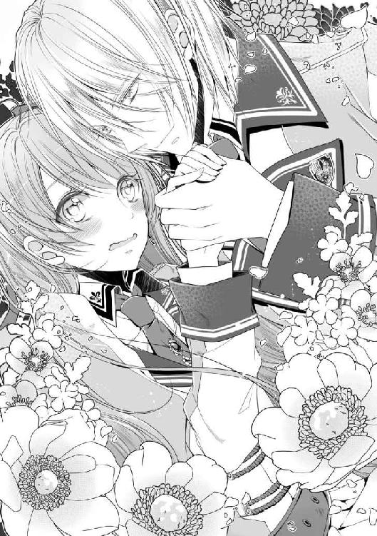
一歩、また一歩とゆっくり近付いて来る。にこにこと笑みを浮かべたままで。逃げたいのに歩幅が違い過ぎて、距離が縮まっていく。
「今までの相手は、皆向こうから来ていた。その時点で俺の見方なんて偏っていそうなものだな。だが、メリルは俺のことを知らなかったし、他のヤツらとは違う」
コツと、直前に迫った足音が妙に響いて聞こえる。彼との間はすでに半歩もない。
「ひ......っ!?」
逃れたはずの右手が再び私を絡め取る。空いていた左手は腰に回されて、半歩の距離をゼロへと引き寄せる。怖い、逃げたい。なのに動けない。心臓がうるさい。先輩の目に映る私は、驚きよりも恐怖よりも、恥ずかしさで震えていて。
「大恋愛をするなら、俺はメリルとがいい。何も知らない周りの人間より、本人の言葉の方が信用できると思わないか？」
「............は？」
一瞬、何を言われたのかわからなかった。あんなに暴れていた体温が、たった一言で熱を失う。幼いいたずらっ子のように思い切り笑った彼が、気付きたくない事実を突きつけてくれる。
「恋愛大作戦、だろ？ ただし、俺の相手はお前でな」
「――――ッッ!?」
目玉が落ちそうなぐらいに見開いた私を、先輩が笑いながら抱き締めてきた。おまけに人の背をばんばん叩いてくれる。痛いよ何すんの！ ......参考とか言って、気付いていたなんて!!
「い、いつから気付いてました!?」
「最初からだ。帰ろうとしたら、神妙な顔のメリルが人に聞いて回っているのを見かけてな。何の相談かと思ったら、俺の好みがどうとか言うものだから、ずっとつけて来た」
「本当に最初からじゃないですか!!」
私の慌てふためく姿が余程面白いのか。わざわざ顔が見られるように体勢を直してから、またゲラゲラ笑っている。この男、どれだけ失礼なんだ！
「売店に用は......」
「何も買っていないだろう？ そもそも、俺は手ぶらだぞ」
ホラ、とご丁寧にポケットの中まで見せてくれるけど、銅貨一枚すら出て来ない。恥ずかしさと怒りをぶつけるべく手を振り上げれば、下ろす前にまた腕の中に封じ込められた。
「先輩の嘘つき！ バカ！ 信じられない！」
「信じられないのはこっちだメリル。何が悲しくて口説いている張本人に女の世話をされなきゃならんのだ。嫌味か？ ああ？」
頭上からハッキリ聞こえた声はもう笑っていなかった。むしろ怒っているようで、体がこわばる。
「それに、俺が嘘をついたのは知らないフリをした部分だけだ。つまらん長話もお前を好ましく思っているのも本当だ」
押し付けられた腕が少しゆるんで、上半身が動くようになる。顔を上げれば、見計らったかのように先輩の額がこつんと触れた。
「俺はメリルがいい。俺にクラルヴァインを捨てたくなるような、大恋愛を教えてくれ」
叫んだ訳でもないのに、彼の声は重なった頭から響いて、痺れるようにつま先まで通った。けれど、それよりも。頬を染めて、まるで少年のような必死さを浮かべた彼の表情が、あまりにもらしくなくて。射抜くような金眼が、怖いぐらいにきれいで。ギルベルト・クラルヴァインはこんなに可愛い男の人だったかとか、そんなマヌケな疑問が心を埋め尽くす。
それから、まるで逃げるように駆けて行った彼の後ろ姿を引き止めることもなく。私が正気を取り戻したのは、下校を促す最後の鐘が鳴り終わる頃。『それじゃ本末転倒だろ！』と言う一番正しいツッコミが口から出ることはなく、私たちの三日目はようやく終わりを告げたのだった。
そして翌日。さんさんと輝く太陽に、目が痛いぐらい美しい青空。一日の始まりを祝福するような良い天気の下で、霧のような湿っぽい空気をまとった女子生徒が一人。
「敵影なし。メリル、出て来ていいわよ」
「毎朝ごめんね、モニカ」
先導して外を確認していたモニカに頭を下げて、重い空気を引き摺りながら扉をくぐるのは、他でもない私である。周囲の生徒たちの視線が相変わらず痛いけど、もう慣れましたとも。
「顔色良くないわね。昨日はちゃんと眠れたのよね？」
「......眠れはしたんだけどね」
純粋に体調を心配してくれる彼女に申し訳なくて、思わず視線を逸らしてしまう。一応眠れはした。何せ、そう言う手段をとったのだから。
放課後の彼を思い出して眠れなかった私は、『眠りの術』と呼ばれる魔術をモニカに使ってもらったのだ。自然にできることを魔術に頼りたくはなかったけど、昨日の場合は仕方ない。放っておいたら一晩中悶え転がりそうだったし。
消費魔力は少ないし、二年に進級できたなら誰でも使える簡単な術なので、使ってもらったこと自体に負担はない。問題はこの魔術の特性だ。元々これは夜泣きが酷い赤ちゃんを慰める子守唄で、効果も強くないし、もちろん後遺症なども残らない。が、『良い夢が見られる』と言う特性がある。普通に聞いたら利点以外の何ものでもないのだけど。
「......あんなのが良い夢だなんて、絶対認めないわ」
珍しく起きた後もハッキリと覚えていたその夢には......出て来たのだ。よりにもよって、逃げたかった原因のクラルヴァイン先輩が！ それも、二人で仲良くじゃれあうような内容！ なんでヤツが出て来る夢が『良い夢』なんだよ！
「放課後のことを夢に見ただけだろうけどさ......もうやだ、自分が信じられない」
「あたしが合流できてれば邪魔したんだけどね。ただの夢なんだから、そこまで落ち込まなくてもいいじゃない」
多少からかいの色を含むモニカを睨みつつ、またため息をつく。逃げるために使った魔術の中にまで出て来るなんて。もう関わりたくないのに、名前を呼ぶ声も微笑みも、触れた手の温かさも全て、夢で再現できるぐらい鮮明に覚えていた。何がメリルがいい、だよ！
「青くなったり赤くなったり、朝から忙しいわねアンタ」
「好きでやってないわよ」
そして、思い出す度に反応するこの顔にもうんざりだ。自分が嫌いになりそう。
「......体質が欲しいだけのくせに」
「だといいわね」
悔しくて、情けなくて。モニカが返してくれた苦笑は、あえて聞こえないふりをした。
やがて、無事学院に到着してから数時間。教室棟の離れた二年と六年では接点もなく、平穏にここまでの授業を受けることができた。しかし、教卓の上の時計を確認して、自然と手に力が入るのがわかる。まもなく午前の授業は終了。ここ二日続いた、魔の昼食の時間がやって来る。今まで昼休憩は一日の楽しみだったはずなのに、どうしてこうなってしまったのか。
憂う私など構わず先生の声はまとめに入り、「ではここまで」と言う締めくくりと同時に、鐘の音が響き渡った。走って行くクラスメイトを見送りつつ、ちらっとモニカに合図をする。彼女も何とも言えない表情で『どうする？』と返してくれる。
昼は食堂が定番だけど、今日は売店の方へ行くのもアリかもしれない。方向が違うので、先輩が食堂方面にいれば出くわすこともないだろう。よし、と気合を入れて席を立つと、同時に扉の外が騒がしくなるのが聞こえた。......嫌な予感しかしない。
「あの、フォースターさん。廊下で先輩が呼んでるよ？」
やがて、赤い顔をした女子が扉を開けると、すぐ後ろに元凶男の姿が見えた。うな垂れる私を助けられる人間など、このクラスにはいない。
「悪い、少し遅くなった」
「どこが遅いのかわかりませんし、そもそも待ってもいませんが」
六年生の教室は違う棟の最上階だ。鐘が鳴ってから何分で移動できるのが彼の普通なんだろうか。とにかく、私が嫌々教室から出て来ると、彼は嬉しそうに笑って迎えてくれる。サラサラの青銀の髪も、私を映す細められた金眼も、今日も嫌味なほどにきれいだわこの無駄美形め。
「俺はメリルに会いたかった。昼食にしよう」
「確定ですか、拒否権はないんですか」
「嫌なのか？」
思わず低い声で反抗すると、スッと大きな手が伸ばされる。頬を撫で、髪を梳いて......その流れるような動作の間には、半歩分距離が詰められている。
「嫌なのか？」
「先輩、近いです！」
また半歩。背後は引き開きの扉なので、これ以上下がれない。空いていたもう片方の手が、腰の辺りを滑るように撫でていく。
「俺はずっと昼に会えるのを待ってたのに、駄目なのか、メリル」
「ご一緒します！ させて頂きますから離れなさい！」
屈辱を噛み締めつつ、仕方なく頷いて返す。衆人環視の廊下で、変なことをされるのはごめんだ。途端に触れていた手は離れて、代わりに繋いできた。
「メリルはやっぱり可愛いな」
「脅迫しておいて、何が可愛いですか！」
「大声出すなり攻撃魔術を使うなりすればいいだろう？ 第一、力は入れていないから振りほどけるぞ？」
ほら、と嬉しそうな声で持ち上げた手が視界に入る。指が絡んではいるが、力は入っていない。昨日話していた時と同じ、少し力を入れればすぐに離れられるゆるい繋がりだ。
「嫌だ、離せって言いながら、メリルは解かないでくれるから」
とても可愛いと。持ち上げた手を引き寄せて、今度は小さく口付ける。
「......ッッ!!」
「今日の日替わりは何だったかな。何を食べる？ メリル」
そして、何事もなかったかのように私の手を引いて、食堂への道を歩き出す。力いっぱい引き寄せるのではなく、ささやかな繋がりのままで。体じゅうの温度を集めたような頬の熱さに苛立ちつつ、結局私は彼の手を振りほどけないまま、二年の廊下を後にした。
「そう言えば私、初対面の貴方に押し倒されたんでしたね」
私が何気なく呟いた一言に、目の前の先輩は激しくむせた後、手にしていたスプーンを何度か空中で躍らせた。色々抜けている割に、手先は器用だなこの人。
今日も日当たりの良い食堂の一席。魚介の日替わりランチが珍しいものだったので、机に並んでいるのは意図せず同じお皿だ。パエリアと言うお米料理だそうで、大きなエビなどが沢山入っていて美味しそうだ。この学院は王国の各地から生徒が集まっているため、地方の郷土料理なども品目に盛り込んでおり、毎日通っていても飽きがこない。料理人さんには本当に感謝だわ。
さて、逃避はこれぐらいにして。てっきり流されると思ったのに、想定外の反応をされてこっちが困ってしまった。まず最初の放課後を覚えていたことに驚いたわ。この人のことだから、どうせ忘れてると思ったのに。
「あの、大丈夫ですか？」
変なところに入ってしまったのだろうか。まだむせている先輩に水のグラスを手渡すと、一気に飲み干して机に突っ伏してしまった。ただでさえ容姿が目立つので、あんまり変な行動はして欲しくないんだけど。
「......すまなかった」
十数秒待って、ようやくか細い声で反応した先輩は耳まで真っ赤だった。珍しい表情を観察したいけど、それより大丈夫なのかこの人。
「落ち着きました？ お水はまだいりますか？」
「いや、そっちじゃなくて」
注ぎ直したグラスをやんわりと遮って、伏した赤い顔のままで何を言うかと思えば。
「......あの時は、本当にすまなかった」
そっちか。思わず私までグラスを落としそうになってしまったじゃないか。
「悪い、ちょっと動揺した。最初の件は、俺からちゃんと謝らないといけないと思っていた」
それから少し間をおいて、しっかりと私に向き直る。ならって姿勢を正そうとしたところ、そのままでいいと言うので、素直に食事を続けさせてもらう。
「あの時は、本当にすまなかった。俺の名前も知らない相手にとる態度ではなかった。反省している」
「貴方の辞書に反省と言う言葉があったことに驚きです」
「人より少ない自覚はあるがな」
自覚があるなら注意できそうだけど、できないから天然なのよね。呆れる私を気にするでもなく、彼は穏やかに笑ったまま続ける。
「言い訳だが、ちょうど〝そういう女〟ばかり相手にした後で、感覚がおかしくなっていた。本当にすまなかった、メリル」
「先輩......」
そう締めくくって、きれいな形で頭を下げる。ふざけている感じはしない、ちゃんとした謝罪の形だ。この人は、本当に反省してくれている......みたいだけど！
（だから先輩、場所が悪い！）
次の瞬間、こちらに向いていた好奇の視線が一気に厳しくなった。最上学年の美形が下級生の小娘に頭なんて下げれば、そりゃあこうなる。頼むから目立っていることも自覚してくれ！
「わかりましたから、とにかく顔上げて下さい、急いで！」
「許してくれるのか？」
「許す許さないは後！ 顔上げて、いいからご飯食べて、はい！」
ほぼ力ずくで顔を上げさせると、その勢いでスプーンを口に放り込む。歯に当たったような音がしたけど、周囲からの刺さるような視線の報いだと思ってもらおう。
「......メリル、痛い」
やっぱり当たっていたらしい。ちゃんと飲み込んでから訴える辺り律儀だ。
「先輩の謝罪はわかりました。でも、行動は場所を考えてして下さい」
「許してくれるのか？」
「人の話聞いてます？」
聞いてるぞと首をかしげる辺り、駄目だこの人、周りがあんまり見えてない。珍しくまともな反応が見られて、期待した私がバカだった。ちゃんと謝罪をしてもらえたのは進歩なんだろうけど。
「本当は許したくないですよ。私はあんなことされたの初めてだったんですから。でも、今更怒っても仕方ないので、初日の件はもういいです」
「許してくれるんだな！」
途端にパッと花が咲いたように笑う。初日の件だけですと念を押しても、にこにこと笑うばかり。絶対聞いてないだろう。
「何度も言っていますが、私はクラルヴァイン家に関わるつもりはないんです。正直言って迷惑です」
「わかっている。だから、俺がメリルと大恋愛をすればいいんだろう？」
全然わかってないし。貴方に関わりたくないと言っているんですけどね、クラルヴァイン先輩！
初日から今なお交わることなく平行な会話に、ため息がこぼれる。私はこの先、彼が卒業するまで関わらなければならないのだろうか。視線を向ければ、すっかり上機嫌でご飯を平らげる姿。彼から逃げたいはずなのに、二人で過ごす時間に慣れてきていて、複雑な気分だ。
（......少なくとも、彼といて頭がかき乱されるのは事実ね）
結局思考はまとまらず、こぼれるのはため息ばかり。今はこの美味しいご飯を食べて、問題を起こさずに昼食を終わらせよう。きっとそれが最善だ。そう結論付けて、残り少ないご飯を口に運び......このスプーン、さっき先輩の口に突っ込んだヤツだと気付いた私が固まったのは、言うまでもない。
それからの数日間は何事もなく、平穏に過ぎていった。いや、毎日クラルヴァイン先輩と昼食をとっていたのだから、平穏とか言っちゃいけないな。慣れって怖い。はじめこそ好奇の視線を向けてきたクラスメイトたちも、いつの間にか慣れたのだろう。先輩の姿を見かければ誰も彼も当たり前のように私を呼ぶようになってしまった。もはや緊張なども見られない。
「どうかしたのか、メリル」
「......いえ、別に」
今日も今日とて、当たり前のように呼び出されて隣りに並んでいる。先輩も先輩だ、毎日律儀に迎えに来なくてもいいのに。先日など、直前の授業が戦闘訓練だったらしく、制服汚れまくり髪も乱れまくりのそのままの姿で、肩で息をしながら走ってきたのだ。そこまでして私とお昼食べたいか？ まあ、さすがにその日は優しく接したけど。
「売店の方が良かったか？」
「食堂でいいですよ。すみません、本当に何でもないんです」
歩みを止めて振り返る先輩に、努めて普通に返す。今日も片手は彼に引かれている。けど、乱暴に扱われたのは最初の一度だけ。すぐに振りほどけるゆるい繋がりのまま、私と彼は〝並んでいる〟。歩幅の違いをよく知っているのに、先輩が私の短い足に合わせて歩いてくれているのだ。
日をおうごとに私への態度が優しくなっていく彼を邪険にもできず、そんな日々を続けて今に至る。〝逃げなきゃいけない、関わっちゃいけない〟それがただの建前になっていることなんて、私が一番よくわかっている。二人で過ごす時間は、決して当たり前のことじゃないのに。
......この生ぬるい日々に流され、慣れ過ぎてしまっていた。だからこそ、警戒すべき部分を見落として、疑問に思うべきことに気付けなかったんだと思う。
「メリルさん、伝言預かってるよ。『先輩が放課後に待ってる』ってさ。場所は第二実技室」
昼食を終えて教室に戻ると、開口一番に伝えられたのは意外な言葉だった。
「何それ？ わざわざ放課後に？」
「あたしもそれだけしか聞いてないからなあ」
それほど交流のないクラスメイトは、伝言だけ告げると自分の席へ戻って行った。その背に軽く感謝の言葉を送り、私も自分の席へと戻る。さて、一体何の用事だろうか？
（さっきまで一緒に居たんだから、食堂で言ってくれればいいのに）
先輩と過ごす放課後と言うと、あまりいい思い出はない。初対面で押し倒されたりとか、大変な恋愛話に付き合ったりとか。
（最近油断してたしね。そろそろ〝本題〟に入るのかしら）
以前モニカに聞かされたことを思い出して、背筋が寒くなる。ずいぶん慣れてしまったけど、彼が貴族で名門家の跡取りであることは何も変わっていないのだから。
（モニカにも相談してから行こう）
緊張する胸を押さえつつ、次の授業の教材を開く。......この時点で間違っていることに、気付きもせずに。私もクラスメイトも、呼び出した相手が彼だと信じて疑わなかった。伝言には『先輩』とあっただけで『クラルヴァイン先輩』とは明言していなかったのに。
「第二実技室......あった、ここだわ」
昼休憩から数時間が経ち、約束の放課後がやってきた。実技室は名前の通り、魔術の実技・実践を行うための部屋のことで、教室棟とはまた違う建物にある。改めてこの学院の広さと規模の大きさを思い知らされる。さすが国内最高の学院。本当によく入れたな、私。
とにかく、主に危険をともなう授業に使われる場所なので、まだ二年生の私には全く縁がない。三年になったら、もう少し危ないものも授業に加わってくるのだけど。
「失礼します。先輩、いますか？」
教室のものより頑丈そうな扉が、重々しい音を立てて開く。内部は他の施設よりも装飾が少なく、天井がかなり高い。壁などは触ってわかるぐらいに厚く、安全面に配慮された部屋のようだ。防護用の結界も張られていて、よく見ると淡く発光する魔術陣があちこちに書かれている。
「......先輩？」
部屋の観察は後でさせてもらおう。今日は呼び出されてわざわざ来ているんだ。扉を閉めて見回してみるけれど、先輩の姿はない。遮るものの何もない部屋の中は、ただガランと静まり返っている。
「もしかして、部屋間違えたかしら」
中心辺りまで進んでみても、やはり誰もいない。はるか上の換気窓から、橙の混じった光が差し込んでいるだけだ。初めての場所だし間違えてしまった可能性はあるけど、部屋の名前はここだった。何より、鍵が開いていたから、ここで合っていると思うのだけど......？
「......本当に来てるし」
振り返って見た扉が開く。けれど、同時に聞こえてきたのは先輩の声ではない。高く、耳につくそれは、どう聞いても女性の声だ。
「ど、どなたですか？」
「それはこっちの台詞なんだけどね」
再び開いたそこから現れたのは、金髪の女性だった。ゆるく波打つ髪は腰までの長さがあり、それだけでも華やかなのに本人の体型も素晴らしく良い。出るところとひっこむところが女性として理想的な――比べた私の貧相さに落ち込むほど整っている。顔立ちはわからないけど、お化粧がすごく上手いのはよくわかる。私では逆立ちしても真似できない。
「え、え？」
けれど、驚いたのはそれだけじゃなかった。彼女の後ろから一人、また一人と合わせて五人も女性が現れたのだ。最初の彼女とは髪の色こそ違えど、制服の着こなしやお化粧など、女性らしいことに余念のない感じの方々だ。私もモニカもあまり積極的に着飾ったりしないので、思わず圧倒されてしまう。
「ちょっと、呆けられても困るんだけど」
「あ、す、すみません」
きつめにかけられた声に、慌てて頭を下げる。入って来た時からそんな雰囲気はしていたけど、間違いないだろう。全員私よりも上級生......つまり『先輩』だ。
（......ああ、そう言うことか）
なんてこと。本人たちを目の前にして、ようやく間違いに気付くなんて。これは、クラルヴァイン先輩の呼び出しではなかった。失敗を悔やむ間もなく、見知らぬ部屋の重々しい扉は、鈍い音を立てて閉じられた。
今更だが、ギルベルト・クラルヴァインと過ごす昼食には、周囲の視線が付き物である。知っている者は『有名な人』として見て、知らない者は『整った容姿の人』として見る。好奇であり、羨望であり、憧憬であり、あるいは嫉妬であり、畏怖である。彼に向けられる視線は、だいたいそう言うものだと思っていた。
皆の視線は彼のみを見ていて、隣りの私はよくて付属品、九割は背景の一部とみなしていると......そんな風に考えて、日々に慣れてしまっていた自分を全力で殴りたい。そんな訳がないだろう！ 一体何日彼の隣に居たと思ってるんだ。
（少なくとも、視界に入れば目障りに感じるぐらいには、一緒に居たわよね）
唯一の出入口をふさぐ彼女たちを見れば一目瞭然だ。その顔からは怒り......いや、殺気しか感じない。どの女性から向けられる視線も冷たく、刺さりそうなほどに鋭い。先輩がモテることなんてわかりきっていたし、こういうことも予想できたはずだ。どれだけ生ぬるい考えをしていたのか、自分が情けないわ。
「ねえ、何か言うことあるんじゃないの？」
「は、はい!? 言うこと、ですか？」
急にかけられた冷たい問いかけに、思わず声が裏返ってしまう。女性らしい高くハリのある声質。けれど、どこか粘っこく、耳にこびりつく気がする。
（言うことと言われても......）
とりあえず謝るべきなんだろうか。けど、名前も知らない彼女たちに、何を謝罪したらいいのかわからない。軽々しく謝るのも失礼だし。返答に困っていると、舌打ち混じりのため息が聞こえてきた。かなり苛ついてもいらっしゃるようだ。
「......アンタさ、二年のメリル・フォースターだよね？」
「ひっ!?」
今度は扉付近に立つ短い黒髪の女性から質問が飛んでくる。やや低めの声は脅し慣れているとでも言おうか、一瞬で鳥肌がたった。余計なことを言わないように頷いて返せば、今度はじろじろと私を値踏みし始める。頭からつま先までくまなく見て......嘲笑う。どうでもいいから、早くここから逃げ出したい。視線を避けるように背を丸めたら、手前の金髪の女性が一際鋭い目でその言葉を吐き捨てた。
「ねえアンタさ、ギルの何なの？」
怒りの籠った声が、ずしんと圧しかかる。
「わ、私は......」
答えようとして、言葉が続かない。私は、クラルヴァイン先輩の何だ？ 血の気が引いていく。たった一言の質問に、答えられない。『先輩と後輩』は正解だ。ただし条件は年齢だけで、彼も目の前の彼女たちも同じ『先輩』だ。では友達？ それとも仲間？ まさか、そう呼べるほど親しくないし、彼に失礼だ。
（じゃあ、私は彼の何？）
彼からしたら、『家のために必要な体質の女』だろう。それじゃあ、私にとっての彼は？ 答えられない私に、金髪の女性が音を立てて息を吐く。髪をかき上げる仕草が妙に色っぽくて......何故だろう。彼の隣りに似合いそうな人だと思ってしまった。
「あのさ、アンタ用もないのに何日もギルに付きまとってたの？ まさかアンタみたいなのが相手にしてもらえるなんて思ってないよね？ 鏡見たことある？」
くすくすと笑い声を織り交ぜながら、後ろの女性たちが問いかける。鏡なんてもちろん見ているし、釣り合わない自覚だってある。だけど、一つ違う。
「私からじゃないです。お昼は先輩が迎えに来てくれて......」
「はあ？ そんな訳ないでしょ？ ギルが他人のために動く訳ないじゃない」
返されたのは何故か完全否定。また怒りに歪む顔に、慌てて口をふさぐ。
「彼はね、他の男みたいに無駄に動き回るようなことはしないわ。女の方が近づきたくて堪らないのに、なんでアンタみたいなのを、わざわざ迎えに行く必要があるの？ 彼の隣りは、美しく優れた女だけが許されるのよ」
金髪の女性が恍惚気味に語ってくれたけど......この人は誰の話をしてるんだ？ ギルと言うのは、クラルヴァイン先輩のことじゃなかったのか？ 私の知っている彼は自分から進んで行動するし、許す許さない以前に引き摺って連れて行かれた。今もすぐに思い出せるのは、柔らかい微笑みと大きな手の感触。彼女が言うような先輩は知らない。呆然と聞いていると、眉間に皺を寄せて、もう一度あの言葉を繰り返す。
「アンタ、ギルの何なのよ」
「私は......」
答えられない。彼の家の事情に振り回されていると言ってしまえばいいのに、〝そうじゃない〟と否定する私もいる。唇を噛んで視線に耐えていると、やがて「もう何でもいいわ」と呆れたような声が降ってきた。解放してもらえるのか。そう期待して、俯いた顔を上げてしまって、
《杖を》
次に響いた声に、戦慄した。『杖』とは魔術師の必需品。魔力の使用を円滑にするための器具で、学院の生徒はこの適性検査を受けることが入学試験の一つだ。私ももちろん持っている。けれど、下級生の私たちは、たまに試験で使うぐらいで、杖がいるような大きな魔術なんて......ましてや、それを人に向けるなんて。
「......な、に......？」
掠れた誰のものかわからない声が、高い天井に吸い込まれた。それぞれに違う形をした杖が五本。私にまっすぐ向けられている。
「フツー実技室に呼ばれてる時点でわかりそうなもんだけどね」
「ここの壁、すっごい頑丈だからね。音も漏れないから、気にしなくていいよ？」
笑いの混じった嗜虐的な呟き。無意識で一歩後ずさる。頭上から降り注ぐ夕日が、ひどく赤く見える。
「ああ、大丈夫。アタシね、回復とか治療系の魔術得意なのよ」
何故、今そんな話が必要なの？ それが、今何に関係が？
「帰る時は、ちゃんときれいな体で帰してあげるわ」
二歩、三歩と後ずさっても部屋の奥へ追いやられるだけ。震えが止まらない。
「こ、こないで......」
淡く光り始めるそれを向けたまま、金髪の美しい女性が囁いた。
「ガキのくせに生意気なのよ。死ねば？」
視界を埋め尽くすのは白。それが『光』だと気付いた時には、とっさに目を閉じ後ろへ下がっていた。続いて感じたのは吹き付ける熱風と、肌をかすめる衝撃。少し遅れて、激しい火が燃える音。
「......うそでしょ」
驚愕の一言からわずか数秒。恐る恐る開いた目に飛び込んだのは、焦げた床石。ついさっきまで私が居た場所が、黒く焼けて煙を上げていた。
「何よ、メリルちゃん。いい反応してくれるわね」
「......それはどうも」
あまりな出来事に、むしろ冷静になってきた。恐らく火の攻撃魔術だろう。死ぬようなことはないにしても、あのままの位置に居たら確実に怪我をしていた。脅しでも何でもなく、本気で私を痛めつけるつもりらしい。背中に汗が吹き出るのを感じつつ、目線を戻せば別の女性がすでに魔術の詠唱をしている。隠す気もないのは、間違いなく私が不利だからか。
（やっても無駄だけど、やるしかないのか）
でなければ、彼女たちの言う通りだ。嬲られるだけ嬲られて、その上で証拠を隠蔽されて終わり。冗談じゃない、ただ昼食を一緒にとっただけで痛い思いをするなんて、お断りだ！
《杖を！》
彼女たちにならうように、最も短い呪文を口にする。ほんの一瞬だけ熱を感じ、次の瞬きには私の半身ほどの長さのそれが手の中にある。色は光の加減で金にも見える白銀。装飾はあまりついていないけれど、上部が籠状になっていて、その中に光球が浮かんでいる。この杖が〝持ち主の心を映し出す〟全員形の違う器具と知ってからは、数少ない自慢の一つだ。「やる気？」と好戦的な目を向ける女性たちに、なるべくそちらへ向けないよう構える。
《防壁展開！》
言葉の直後に一瞬だけ耳鳴りに似た高い音。続けて発生するのは、薄いガラスのような透明の壁だ。『防壁』は結界術の一つ。中でも私が使ったのは、詠唱のいらない一番簡単な術だ。何せ一番初級の護身魔術だからね。女性たちが呆れたような顔をしたけど、仕方ないじゃないか！ こちとらまだ二年生。その上、私は攻撃魔術が大の苦手なんだから！
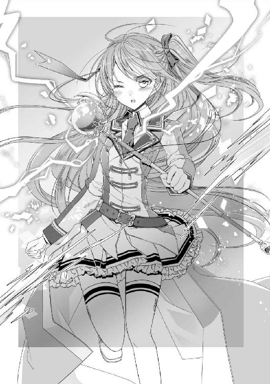
「何それ。アンタ、バカにしてんの？」
「うっ!?」
そうこう考えているうちに、二撃目も飛んできた。薄い防壁はかん高い音を立てて割れ、そのまま消えていく。よし、一発防げただけでも上出来上出来！
「何そのペラッペラの壁。やるならやる気出しなさいよ」
やる気出してこの強度なんだよ！ なんて言ってもしょうがないので、もう一度同じものを発生させる。彼女たちの顔の皺が更に深まった気がしたけど、こっちはいっぱいいっぱいだ、構ってられるか。
「それで防げると思ってるんなら、侮辱もいいところね！」
ガシャン、と。出したそばから二枚目が壊された。が、めげずに続けて防壁を発生させる。
「この......ッ！」
ああ、皆すごい怒ってる。せっかく化粧できれいにしていた顔も、歪んで悪魔みたいになってるよ。それが本性なのかもしれないけど。
（とにかく、できる限りの抵抗はしてやるんだから！）
まだ震える手を杖に押し付けて、もう一度防壁を。どうせ一発しか防げないペラペラの魔術だけど、消費魔力も多くない。持久戦になれば、巡回の先生が気付いてくれるかもしれない！
「......くッ！」
かん高い発生音とそれが割れる音が連続して、耳も頭もぐらぐらしてきた。でも、出さないと。勝てなくても足掻かないと！
「ふざけるのもいい加減にしなさいよ！」
「痛っ!?」
先頭の金髪の先輩の声に合わせて、衝撃が下から来た。重ね張りした防壁も意味を成さず、かばいきれない余波で尻餅をつく。魔術の発生位置を指定して当てて来たのか。その辺りの操作ができるなら、あの先輩は最低でも四年生以上だ。怪我はしなかったけど、今ので両足が痺れてしまった。駄目だ、力も入らない。
「く、うっ」
何とか杖は手放さなかった。座り込んだままでも防壁を張らないといけないのに。
「だから、それじゃあ薄いってば」
「きゃあっ!?」
行動する前に別の女性が来てしまう。今度は上から叩きつけられて、肩に痛みが走る。
「無駄な抵抗やめなさいよ。どうせ何もできないんだから」
高い音なのにほの暗さを感じる声。視線を上げれば、近付いて来るのはやっぱり金髪のあの人だ。杖を持ち上げようとしても......手が動いてくれない。
「あたしも暇じゃないのよ。これで終わりにさせてくれる？」
暇じゃないなら下級生に構うなよ！ そう叫んでやりたいのに、怖くて声も出て来てくれない。彼女の構えた杖の先には魔術陣が浮かんでいる。両手を広げるよりも大きいものが。ちょっと待て、そんな大きな攻撃魔術、私の薄い壁じゃどうやっても防げない。
「......殺す気、ですか？」
「すぐ治療すれば死なないでしょ？」
即死したらどうするんだ、とかは考えてないんだろうな。ああ、もう。使えないなりにもう少し調べておけば良かった。焼かれるのか凍らされるのか、何をされるのかもわからない。衝撃に備えて、目を閉じて......。
「............ヒッ!?」
けれど、次に響いたのは私の悲鳴じゃなかった。息を呑んだのは、あの耳につく先輩の声。恐る恐る目を開けば、広い実技室の床の半分以上を埋める規模の魔術陣が広がっている。扉を起点として五人を範囲内に捉えたソレは、さっき彼女が撃とうとしたものの何倍も大きい。しかも、詳しくない私にも伝わってくる禍々しさ。赤黒く輝くこれは、確実に人を殺すための術式だ。
「こんなの、いつの間に......ッ」
さっきまで怒りしか感じなかった彼女たちが、怯え慄いている。上級生なら知っているのかもしれない。自分たちを捉えるソレが〝どうやって人を殺す〟魔術なのかを。そして、この陣の範囲に私だけは含まれていない。助かったと思いたいけど、手放しには喜べない様相にただ動けない。一体何が起こっているのか。化粧の下の顔を青くする彼女たちに声をかけようとして。
「何をしているんだ？」
違う声が、緊張を破った。聞き慣れた男の人の声。鈍い音を立てて開かれた扉の先には、赤黒い光の中でなお、刃のような青銀をまとう長身。
「せん、ぱい......」
掠れた私の呟きが広い部屋の中に響く。昼食ぶりに見たギルベルト・クラルヴァインは、何の感情も窺えない顔のまま。ただ、底なしの冷たさを湛えた金色の目で、彼女たちを見下ろしていた。
「何故、先輩がここに」とか、「何が起こっているんです」とか、彼に聞きたいことは沢山浮かんだけれど、どれも口から出ることはなかった。出せる訳がない。全身から殺気を発する彼に、どうして話しかけられようか。だからこそ、あの金髪の先輩は頭が悪いと思う。あるいは、ただの命知らずなのか。
「ギル！」
彼の姿を見た第一声は、嬉しさと甘えを全面に押し出したような一言だった。さっきよりも意図的に高くした声が、ひどく耳にまとわりつく。たった数歩の距離をあえて駆け寄ると、豊満な体を押し付けるように先輩に抱きついた。彼女以外の先輩たちが顔を引きつらせたのは、見えていないのだろうか。一方、呼ばれた方のクラルヴァイン先輩は、彼女を視界に入れることもなく、
「何をしているんだ？」
と、同じ質問を繰り返す。何の感情も乗っていない無機質な質問。その冷たさは、声をかけた相手を切り捨てる温度だ。怒りとはまた違う、もっと恐ろしいもの。
「久々に逢えたのに、つれない返事ね」
そんな恐怖で動けない私たちとは反対に、金髪の彼女だけは明るく妙に色めいている。この人、本当に頭大丈夫なのか？ 今にも泣きそうな他の女性たちが哀れになってきた。足元で煌々と揺らめく魔術陣は、まだ健在だと言うのに。
蜘蛛のような動きで彼の胸に指を這わせると、続くように頬をすり寄せる。周囲の状況さえ違えば、恋人同士の姿なのかもしれない。ずいぶん下品に見えるけど。私たちが見守る中、先輩は動かないまま彼女の好きにさせている。それを是と思ったのか、彼女はぴったりと体を合わせて満足そうに笑った。まるで、私たちに見せ付けるかのように。そんなこと、今は誰も考えていないのに。
数分、もしかしたら数秒だったかもしれない。おもむろに、先輩の手が彼女の後頭部へと伸びた。抱き締めてくれると思ったんだろう。金髪の女性は、満足気に目を閉じて。
「......あがっ!?」
次の瞬間には、蛙のような声をあげて床に転がっていた。いや、どうやら叩きつけられたらしく、口を押さえて激しくむせている。起こったことは見えなかったけど、先輩がそうしたのだけは間違いない。彼が右手に掴み半分引き摺り出しているのは、彼女のブラウスの襟だから。先輩は彼女を一瞥すると、何事もなかったかのように手を放した。ほんの一瞬だけ、『汚物を触った』と言わんばかりに眉をひそめて。
「......っほ、がふ......って、待ってよギル！」
唾液混じりの荒い息を吐きながら、なおもすがろうとする彼女に、周囲の女性たちも蔑みの色が濃くなってきた。呼ばれた先輩はそちらを見ることもなく、顔には何の感情も浮かんでいない。
「なんで、どうして？ あたしはまだ、貴方と別れたくないのに......ッ！」
この人、先輩の恋人だったのか!? 外見的には似合いそうだと思ったけど、まさか本当にそうだなんて。他の人よりも怒っていたのは、そのせいか。先輩の反応を見ると、変わらず冷たい無表情のままだ。そもそも、さっき床に叩きつけてたわよね。
「......イライザ」
短い沈黙を経て呼ばれた名前に、金髪の――改めイライザさんと言うらしい女性は、パッと顔を上げる。すがるような、媚びた笑みを浮かべて。
「お前は、俺の何を知っている？ 『クラルヴァイン』でなく、俺のことを何か答えられるか？」
「そ、そんなの、いくらでも......っ」
イライザさんの顔が輝いた。それはそれは嬉しそうに、任せてと言わんばかりに......けれど、その表情は見る見るうちに固まっていく。口角を吊り上げた、作り笑い顔のまま。
「好きな食べ物でも得意な教科でも、何でもいい。何か答えられるか？」
「え、あ......そ、れは......」
すっかり汚れた化粧顔が、どんどん血の気を失って青くなっていく。嘘でしょう？ あんなに恋人っぽい行動をしておいて？
「答えられないだろう？ クラルヴァイン家の先々代の経歴は言えるくせにな」
「......ッ！」
「俺は答えられるぞ。お前が欲しがった洋服の仕様も、指名した仕立て人も、取り寄せた装飾品も。ちゃんと覚えて贈ったからな」
イライザさんの顔から完全に笑みが消えた。彼女を見ないまま、一歩二歩と先輩が離れていく。
「それが別れた理由では不服か？ 第一、もう半年以上前のことだ」
淡々と告げる声には何の感情も見えず、言葉の通りの報告だけ。コツと、妙に大きな靴音の......ちょうど歩みが魔術陣の範囲から出た頃。本当に少しだけ、彼が彼女を振り返った。
「それとも、俺に〝それ〟を使わせたいのか？」
今度こそ死刑宣告に近い声に、イライザさん以外の女性たちが悲鳴を上げた。そのまま、他の四人が彼女を抱き起こしながら実技室から駆けて行く。広い広い部屋には、私と彼の二人だけが残ってしまった。
「............」
どう声をかけたものか。手も足も石のように固まってしまって、立ち上がることもできない。さっきまであんなに怖かったのに、色んなことが一度に起こりすぎて、頭の中はやけに冷静だ。
「メリル」
やがて、座り込む私の前まで来た彼が名前を呼ぶ。いつも通りの優しい声で。
「......先輩」
視線を上げれば、額が当たるほど近付いた美形顔。あの無機質な先輩はいない。
「......好きな食べ物言えってずるくないですか？ 先輩、いつだって日替わりランチを完食してるじゃないですか」
逆に避けてる食べ物を見たことないです、と続けたら。
「それが正解だ」
ぽすん、と。座り込んだままの姿勢で、先輩に抱き締められた。
「......無事で、良かった」
「全然無事じゃありませんけど」
耳元に降った低い声が、あんまりにも優しかったから。一気に力が抜けて、押し付けられた硬い胸でちょっとだけ泣いてしまった。伝わる体温が心地よくて、安心する。
「......立てるか？」
優雅に差し出された手を重ねて、脚に力を入れる。やっとこれで帰れる、助かってよかった......と思うのはどうやら早かったようだ。
「痛っ!?」
「メリル！」
突然走った痛みに、また床へ逆戻りしてしまう。先輩の支えで転がらずには済んだけど、立つことができない。痺れた感じはもうないのに、どうして？
「まさか」
怪訝な様子で私の足首に触れて、次の瞬間には顔を歪ませる。ならうように私も触れてみたら、くるぶしの辺りが熱く、靴下ごしでも腫れているのがわかった。
（ああ、あの時のか）
二枚重ねた防壁を、イライザさんに下から吹っ飛ばされたんだった。反対の足も触ってみたところ、位置こそ違えど、やはり同じように腫れている。両足これでは立てない訳だ。
「......骨が折れてなければいいんだが」
壊れ物のように触れながら、先輩が低く呟く。細められた金眼には心配と同じぐらい怒りの色が見える。
「わ、私も回復魔術使えるので大丈夫ですよ。言われるまで気付かなかったですし、折れてはいないでしょう。今はちょっと、魔力が足りなさそうですが」
なるべく冷静に返せば、先輩は一瞬目を見開いて、また「すまない」と頭を私の肩に預けた。彼女たちを庇うつもりはないけど、あんな殺気立った怖い先輩を見るのはもっと嫌だ。彼にはいつもの優しい笑顔で居て欲しいからね。
「......で、これはないと思うんですけど」
「歩けないのだから仕方ないだろう。背負うよりはマシだと思うが」
支えてもらった体勢のまま、私の体はまた先輩の腕の中に抱かれている。彼の右手は背に、左手は太ももの辺りに。いわゆるお姫様抱っこ状態だ。
「恥ずかしいので魔力回復を待ったら駄目ですか。置いて行って構いませんし」
「俺が原因なのに、怪我したメリルを置いて行けるか。大丈夫だ。下着は見えないように配慮している」
確かに先輩の腕は、私の短いスカートがめくれないように押さえてくれている。だけど！
（それ以前に、貴方が私の太ももを触るのは有りなのか！）
歩けないのは確かだし、ここに長居したくない気持ちもあるけど、それにしたってくすぐったいし恥ずかしい。なんとか離して欲しいけど......追及しようとした言葉は飲みこんだ。すぐ近くにある顔が、今にも泣きそうに歪んでいたから。
「わかりました。治療ができるようになるまで、お願いします」
仕方なく先輩に体を預ければ、ホッとしたのがわかるように微笑んで、抱く手に力を込められた。さっきまで恐ろしい形相をしていたのに、まるで今は子供みたいに見える。どっちも彼なのに不思議な人だ。二人で実技室を出ると、扉の外には別の人が待っていた。
「お姫様は救出できたようですね、クラルヴァイン君」
制服でなく丈の長い灰色のローブの男性。生徒と同じ年ぐらいに見えるけど、先生だろうか。青髪の不思議な雰囲気の彼は、姫抱っこを気にするでもなく穏やかに笑いかけた。
「ええ、お待たせしました。中にはもう誰もいません」
「そのようですね。あとはコチラで処理しましょう」
やはり先生だったようだ。軽く手を振る彼に、先輩が会釈を返す。
「そうそう、クラルヴァイン君。いくら脅しでも、ああいう危ない魔術を使ってはいけませんよ。何かの拍子に発動したら、君は殺害五件確定です」
「さ、殺害って!?」
ああいうとは、彼女たちの足元にあった赤黒いアレのことだろう。さっき出る時には消えていたけど、やっぱり命に関わるような危険な魔術だったのか！
「殺したいぐらい怒っているのは事実ですから」
「自制してくれて何よりです。学院で犯罪は困りますからね。では二人とも、気を付けて帰って下さい」
物騒な台詞を残して、先生は笑いながら実技室の中へ入って行ってしまった。一瞬だけ殺気を浮かべた先輩も、すぐに表情を戻し実技室から離れて行く。
「もしかして、今の先生が先輩を呼んで来てくれたんですか？」
「いや、この辺りは彼の管轄だから......ああ、二年生は知らないのか」
巡回中の先生かと思ったら違うらしい。歩く速度を落としながら『実技室』について説明をしてくれる。ここは周知の通り壁が厚く、耐久性はもちろん防音も兼ねた幾多の結界が張られている。が、同時に今日のような〝よろしくないこと〟に使われる可能性もあると言うことで、大変精密な監視魔術が組み込まれているのだそうだ。その精度は中の様子を見ることはもちろん、やろうと思えば会話も聞き取れるとか。
しかも、結界魔術陣の中に〝よく見れば視認できるよう〟書き込まれているので、気付いている生徒は絶対にここで悪さはしないとのこと。つまり、彼女たちは気付いていなかったのだ。
「さっきの教師は発言力の大変強い人だ。その彼が気付いて動いていたからな。イライザたちは謹慎処分は確定、成績に関しても何らかの処罰が下るだろう」
「そっか、公的な処罰があるならそれでいいです」
監視が視認できるってことは『気付かないヤツが悪い』だろう。イライザさんはやはり、あまり頭が良くなかったみたいだ。危険な目に遭わされた身としては、胸がすく思いだけど。
「あれ？ それなら、先輩はどうしてここに？」
「ああ、お前のクラスメイトが俺に知らせに来たんだ」
黄色っぽい髪の、眼鏡をかけた......と先輩が上げた特徴は、間違いなくモニカだ。
「俺から呼び出されたらしいけど、おかしいと言ってな。俺は帰るところだったから、大当たりだったということだ」
「その子、寮の相方ですよ。私色んなところで彼女に支えられてるな」
わざわざ先輩を捜して伝えてくれたなんて、なんて良い子だろう。感動する私に、先輩もそうだなと笑って返してくれる。今度何か奢らせてもらおう。
傾きかけた赤い日が照らす廊下の景色。各所の金装飾と同じぐらいに、先輩の髪もキラキラと輝いて見える。響く足音は一人分で他には誰もいない、静かできれいな空間。降りた沈黙は優しく、触れた手はとても温かい。
さっきまでの恐怖が嘘のような穏やかさだ。心地よいと、確かに思う私がいる。二人でいるのが嫌じゃない。先輩が原因で巻き込まれたのに、彼を恨む気持ちはなく。逆に、助けに来てくれたことへの感謝ばかりが浮かんで来る。
だけど、私は確かめないといけない。他人に言われて気付いたのは癪だけど、このままなあなあで過ごしちゃいけないから。「痛むか？」と心配してくれる彼に、なるべく普段通りに返答する。
「ねえ先輩、少しお話できませんか？」
途端に固まった彼と同じぐらい、私の体もこわばっていた。
「話をするなら落ち着ける場所で」と言うことで、抱えられたままやって来たのは昼食ぶりの食堂だ。昼時は生徒でごった返しているここも、放課後には利用者はほとんどいない。今日も自習をしている生徒が二、三人居るぐらいだ。無駄に広い空間に、厨房の片付け音だけが響いている。
窓辺でなく壁沿いの席に私を下ろすと、先輩は飲み物を注文しに行った。魔力も回復してきたし、私は今のうちに足を治療してしまおう。ちなみに『回復魔術』も一年で習う初級魔術で、私でも簡単に扱える。ただし、使用者には『適性』が求められ、それがないとどんなに優れた魔術師でも使えない特殊な術の一つだ。戦闘はからっきしだけど、これが使えるのは自慢できる。......他が全然ダメだから、下から数えた方が早い成績だけど。
「......ん、こんなもん、かな」
淡い光が足首を包み込み、お湯に浸けているような温かさが広がっていく。じわじわと響いていた鈍痛も和らいで、十数秒の後にはすっかり腫れも見えなくなった。
「メリルは適性があるんだな。羨ましい」
かけられた声に振り向けば、いつの間にか先輩が戻って来ていた。手には小さめのお盆を持って、その上には湯気を立てるそろいのカップが見える。
「紅茶で良かったか？」
「有難う御座います。先輩は適性なかったんですか？」
「俺は壊す方の専門だ」
苦笑しつつも、慣れた手つきでカップを渡してくれる。ふんわりと広がる香りが緊張を鎮めていく。
「......美味しい」
香りもさることながら、味の方も文句なし。この学院のことだから、茶葉一つとっても質にこだわっているんだろう。染み渡っていく温かさに、二人そろって安堵のため息がこぼれた。
「それで、俺に話があるんだろう？」
一通り紅茶を楽しんだ後、先に口を開いたのは先輩だった。今日のことを気にしているんだろう。口調には覇気がなく、また泣きそうな顔をしている。
「先に言いますが、今日のことについてではないですよ？ あの人たちの行動は、先輩のせいじゃありませんし」
むしろ、先輩も被害者だろう。半年も前に別れていたのだし、好き過ぎて暴走したならまだしも、そうでもなかったみたいだし。
「だが、俺がメリルに関わらなければ、こんな目にも遭わなかっただろう」
「それはそうですが、他人の思考や行動にまで責任をとれと言うのもおかしいでしょう。そんなことを責めるつもりはありませんし、助けに来て下さったことには感謝してます」
なるべく優しく答えて頭を下げる。先輩は一瞬だけ戸惑いを見せて、「有難う」と小さく呟いた。
「先輩を責めるつもりも怒るつもりもありません。ただ、一つハッキリしなきゃいけないことがあるだけです」
カップを置いて深呼吸をする私に、向かい合った先輩も顔を引き締める。重い話でも暗い話でもないのに、妙に息苦しい。
「............私は、先輩の何ですか？」
数秒ためらった後、口にしたのはイライザさんに問われたそのままだ。先輩は顔を驚きに変えて固まった。無理もない。彼の理由は非常に確かなものなんだから。
「先輩は『私の体質が欲しいから』私に近付いたんですよね」
「あ、ああ。きっかけはそうだったな」
確認する問いに、驚いた表情のまま頷く。『今更何言ってんだ？』な話だろう。
「クラルヴァイン家にとって私の体質が必要だから。貴方が私に近付いた理由はハッキリしています。じゃあ、今の私たちは何なんでしょうか？」
「......悪いメリル、質問の意味がわからない」
授業中の生徒のように先輩が片手を上げる。今は困惑に近い表情だ。
「えっと、整理しますね。先輩の最初の〝依頼〟を私が断ったじゃないですか」
「ああ。それで、恋愛感情があれば問題ないと言う話になったな。俺は今メリルを口説いている最中だ」
「......でもそれって、〝理由があって口説いているだけ〟で、本当に恋愛をしている訳じゃないんですよね」
少し低くなってしまった声に、先輩の動きがピタッと止まった。そう、『やり方』を変えただけで、私たちは恋愛をしている訳じゃない。目的は最初から変わらず、私は依然『説得』をされているだけだ。
「先輩みたいに私を女の子として扱ってくれる人、初めてなんです。もちろん男性と話はしますけど、色恋ごとには本当に縁がなかったから」
膝の上に乗せている手が、無意識にスカートを握り締めていた。気付いてはいたけど、私はこれを話したくないみたいだ。手のひらにはうっすらと汗の感触もある。でも、話さないといけない。ちゃんと聞いて、決めなきゃいけない。
「こんなきれいな男の人に誘ってもらえて、女の子扱いしてもらえて。文句ばっかり言ってましたけど、本当は浮かれていたんです。きっと私は嬉しかった」
ああ、そうだ。嫌がっていたのも嘘じゃないけど、嬉しかったんだ。皆が憧れる彼に恋人のような扱いをしてもらえて、ドキドキしていた。差し出してくれる手も向けてくれる微笑みも、本当は嬉しくて浮かれていた。彼の本意じゃないって、知っていたはずなのに。
「生ぬるい時間に酔って流されて......今日のイライザさんたちに気付かされました。私が先輩としていることは、『理由』を知らない人には違うように見えるんですね。彼女たちを擁護する気はありませんけど、他の人にも同じように見えていたらどうなんだろうって、そう思って」
今日のようなことを考える人はどうでもいい。でも、知らずに〝誤解して〟恋を諦めてしまう人もいるんじゃないだろうか。もしその人が、以前私が想像したような、彼の好みにぴったりの......それこそ、本当の大恋愛ができる女性だったらどうだろう。私の相手をしていたせいで、彼が本当の幸せを逃してしまったなら。
「ここの学院生活は長いです。人生において、欠かせない出逢いもあると思うんです。私は貴方の邪魔をしたくないし、私の邪魔もして欲しくないです」
「............はっきり言ってくれるか、メリル」
かけられた声は低く、結論を急かすように聞こえた。睨んでいる訳でもないのに、ただまっすぐに向けられた視線が痛い。もう一度スカートを握り直して、なるべく普通に、笑っているように顔を作る。
「この『やり方』やめませんか？ 諦めろと言いたいですけど、私の体質は別の方法で交渉して欲しいんです。貴方のためにも、私のためにも」
昼食を一緒にとるだけだったけど。それでも、『ごっこ遊び』は止めにしよう。私たちは友達でも、ましてや恋人でもなかった。たとえ、この胸に芽生えた何かに、気付いているとしても。
――長い、長い沈黙が降りる。窓の外は黒に近付き、下校を告げる鐘が鳴っている。いつの間にか他の生徒はいなくなっていて、注文口にも終了の看板がかかっていた。
「............信じて、くれなかったのか」
やがて、ぽつりと先輩が呟いた。何を言ったのか聞き返そうとして......止められる。整った顔は、深く皺を刻んで歪んでいる。今にも崩れて泣き出しそうに。
「『理由』を、先に提示したのは俺だ。ずっと強引だったことも、沢山迷惑をかけたことも、ちゃんと知ってる」
ぽつ、ぽつと。間をおきながら言葉が続く。金眼は完全に閉じて、長い前髪の陰に隠れてしまう。
「『理由』があったからいけないのか......『理由』がなければいけないのか......」
「何を......？」
問いかけに返事はなく、呟きも聞き取れない。俯いたままの彼に話しかけようとして。
「〝俺〟は、ただ、メリルの傍に居たかったんだ」
再び開いた金色の目とハッキリ合った。輝く色の中にはただ悲しさだけが浮かんで見えて。「すまなかった」と、謝罪の言葉を最後に、彼は食堂から去って行った。かける言葉が見当たらないまま、私はただそれを見送って......。
翌日から、先輩は昼食の誘いには来なくなった。
「人捜しもいいけどメリル、早くしないとお昼休み終わるわよ？」
「......え？」
ふと耳に飛び込んできたのは、聞き慣れた女の子の声。向かいの席に視点を合わせる。亜麻色の髪を一つにまとめ、大きめの眼鏡をかけた私の親友。そうだ、〝今日は〟モニカだ。
「私......」
途端に周りが騒がしくなった。沢山の話し声と食器の音と。ああ、今はお昼休みで、ここは学院の食堂で。
「だから、お昼終わるわよ？」
指摘されて確認した時計は、間もなく休憩が終わる時間を示している。にも拘わらず、私の前の日替わりランチはほとんど手付かずのままだった。
（何やってるんだろうな、私）
教室に戻り、午後の授業が始まって早数十分。結局お昼ご飯はほとんど食べられなかったけど、お腹はちっとも減っていない。教卓の先生の言葉も、右から左へ流れていくばかり。
......あの放課後から今日で五日目。先輩と一緒にお昼を過ごせなくなって、五日経った。残りの生活から見ればたった五日だ。なのに、どうしてこんなにも乱されたままなんだろうか。
（あれから、一度も先輩に会ってない）
最初の日は教室で待ち続けて、次の日からは捜すようになった。けれど、先輩の姿は一目たりとも見ていない。一緒に居た時は、さんざん周囲の視線を集めていたのに。まるで『私たちの繋がりなんて、こんなものだ』と思い知らされているみたいだ。彼が迎えに来てくれなければ会うこともできないなんて。
（......どうして、捜しているんだろう）
モニカにも何度も聞かれた言葉だ。これが正しい過ごし方でもう会わない方がいいと、毎日励ましてくれる。彼女の言う通り、厄介ごとに巻き込まれなくなって喜びこそすれ、悲しむ必要なんてない。本来何の関係もない貴族と平民。接点はないし、会わないのが当たり前。なのに、捜してしまう。五日目ともなれば自覚もしている。私は先輩に会いたいのだ。
（......あ、授業終わっちゃった）
堂々巡りの思考に引っ張られていたら、終業の鐘が鳴っていた。機械的に礼だけ済ませるものの、こんなんじゃいよいよ落ちこぼれるかもしれない。顔を上げればモニカと視線が合う。眼鏡の奥の心配の色は、日に日に濃くなるばかりだ。......わかってるよ、モニカ。今の私はとてもバカだ、大バカ女だ。それでもごめん。先輩の優しい微笑みが、まだ頭から離れてくれそうにない。
「クラルヴァイン？ 今日はもう帰ったけど」
「そうですか。有難う御座いました」
それから更に数時間後、棟の違う六年生の教室で、私は深く頭を下げる。授業が終わってからまだいくらも経っていないのに、今日も先輩はいなかった。今日もだ。モニカに反対されつつ、それでも彼を捜して教室まで押しかけてみても、やっぱり会えない。
（......これは、避けられてるのよね）
確かに彼は動きが速い人だった。脚の長さの分、歩幅も私とは全然違った。けど、ここまで会えないのは不自然だ。そういうこと、なんだろう。
「何やってんだろ。やめてくれって言ったのは私なのに」
我ながらとんだ道化っぷりだ。自分から頼んだくせに追いかけるなんて、これじゃあイライザさんのことをとやかく言えないじゃないか。
「............そっか。私、面倒な女だったのね」
金髪の女性を思い出すのと同時に、自分が気持ち悪くなった。あんな目に遭わせてくれた彼女と同類だったのか。人生十七年目にして、全く嬉しくない新発見をしてしまったわ。
「......はあ」
深くため息をつく。本当に、毎日私は何をやっているんだろう。学舎を染めていく赤い陽が、あの日の彼を思い出させる。優しく細められた金眼、さらさらと滑り落ちる銀の髪。支えてくれた大きな手もその温かさも、苦しくなるぐらい鮮明に覚えてる。あの瞬間の心臓の音さえも。
（バカなこと、言うんじゃなかった）
そうしたら、もう少し一緒に居られたかもしれないのに。こんな風になってしまうぐらいなら、『説得』でも何でも良かったじゃないか。
（モニカは正しい判断だって言ってくれた）
これぐらい傷が浅いうちで良かったって。むしろ、避けてくれる先輩に感謝する日が来るって。そう笑って励ましてくれる。だけど、やっぱり楽しくはない。始まってすらいなかった『恋』が、終わってしまったのだから。
六年生の教室から、どれぐらい歩いただろうか。つい帰り道を間違えて、まあいいかとフラフラして......無駄に広い学舎でたそがれていたら、いつの間にか裏庭の方に出て来てしまったようだ。ちなみに、寮への道とは全く逆方向だ。もう一度息を吐いて、玄関に繋がる渡り廊下へ足を向ける。あんまり遅くなったら、モニカを余計に心配させてしまうかもしれない。
切なさを増長させる夕日に背を向けて、大股気味に駆け出す。まるで、物語の主人公のような気分を引き摺ったまま。
「............は？」
そのまま終わると思ったら、突然視界に飛び込んだモノによって、固まってしまった。
「な、なに、あれ」
さっきまでの物憂げな自分が嘘のようなマヌケな声だった。けど、目の前に出てきたモノはもっとおかしいのだから仕方ない。渡り廊下の低い壁に、もたれかかるように佇む人物。学院の制服をまとった、おそらく男性と思しき『紙袋頭』がそこに立っていたのだ。
（どう見ても紙袋よね？ なんであんなものかぶってるの？）
思えばこのところずっと、何かが起こるのは夕方ばかりな気がする。数日前のイライザさんの件も、その後の話し合いもそうだし。先輩から過去の話を聞いてしまったのも放課後だ。......ああそうだ、彼と初めて会ったのも放課後のことだったか。
一日の中でその時間はとても短く、にも拘わらず印象深く残る赤の世界。何もなくても感傷的になってしまうこの時間帯に、今日は不審者との邂逅と来ましたよ。私、本当に呪われているんじゃなかろうか。
「............」
一定の距離を保ったまま、お互い動けずに対峙している。魔術師らしく臨戦体勢をとるべきかとも思ったけれど、私は戦う魔術に関しては本当に素人以下なのだ。それに、目の前の紙袋頭も制服を着ている。これで先のイライザさんたちのような手合いだったら、シャレにならない。どうするべきか、そろそろ悲鳴でも上げてみるべきかと悩んで。
（......あれ？）
不審者を凝視しているうちに、一つ気が付いてしまった。頭にかぶっているのは、売店でもつけてくれる汎用品だ。使い方はともかく珍しいものではない。注目すべきはその下。制服に気を取られていたけれど、『中身』に既視感を覚える。後ろの壁が低いせいで猫背になっているけど、この人身長が高い。そして、上半身と下半身の比率に、とても見覚えがある。脚の長さが嫌味だ。
「..................せんぱい？」
半ば無意識に呟いていた。紙袋頭は少しだけこちらを向くような素振りをして、ゆったりと首をかしげる。一歩ずつ、ゆっくり彼に近付いて行く。見てくれは何も変わっていないのに、気付いてしまったら戸惑いはどこかへ吹き飛んでしまった。そうだ、この少し崩した制服の着こなしも見覚えがある。無地なのに高級そうな靴も。
「先輩」
今度は疑問系でなくハッキリと呼んでみる。紙袋頭はまたこちらを見ようとして、すぐに首を横に振った。
「先輩」
手に触れる。女の子とは違う、骨や筋が目立つ固い手。大きくて、温かくて、何度も私に差し伸べてくれた手。
「......先輩」
それは間違いなく彼の手だった。指先の感触に、なんだか涙が出そうになる。私を包んでくれるこの空気も、優しくて切ない彼のものだ。よく覚えてる。
「............」
彼は無言のまま、それでも手を払わないでくれた。ただゆっくりと首を横に振って、繋いでいない手を渡り廊下の先――寮への帰り道へと向ける。『帰れ』と言われている。モニカの言葉を借りるなら『逃げてもいい』と。あの放課後に始まったクラルヴァインに関わることから、逃げなさいと言われている。それは、私の将来を思うなら正しい道だ。
（............でも、できないってば）
否定の言葉は彼に、モニカに、そして自分自身に向けてのものだ。帰りたくない。この手をまだ放したくない。紙袋の奥の先輩に会いたい。逢いたいのだから、仕方ないじゃないか。
「ギルベルト先輩」
だから、初めて彼を名前で呼んだ。クラルヴァイン家の人でなく、私の知っているあの先輩の名前を。彼は一瞬だけ肩を震わせて、手を静かに下ろした。それから、体をちゃんと私の方に向けて、出口を示したはずの手を私の頬にそえる。温かくて大きくて、とても優しく触れてくれるそれに、私も頭ごとすり寄る。
「......ごめんなさい。やめようって言ったのも私なのに。撤回早すぎますよね」
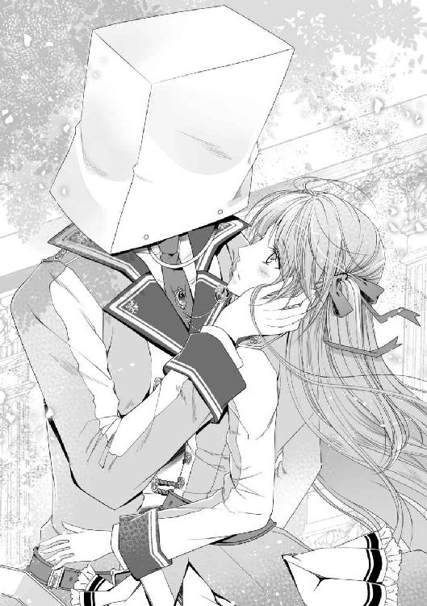
本当に、イライザさんに何も言えない。たった五日で前言撤回だなんて、自分勝手にもほどがある。嫌なヤツ、バカな女。ごめんなさい、それでも。
「......俺に、用事があった訳ではないのか？」
久しぶりに聞いた先輩の声は、少し掠れていた。紙ごしなのも相まって、前よりも低く聞こえる。でもやっぱり彼の声で、紙袋の向こうにいるってわかって、それだけですごく嬉しい。......逢いたい。
「違います。あまりにもバカげた理由で、五日間貴方を捜してました」
「......？」
またゆったりと首をかしげる。そうだ、この動きも前に食堂で見たじゃないか。顔の作りは鋭いのに、どこかズレてて可愛く見える、不思議な先輩。
「貴方に、逢いたかった」
手を伸ばせば、紙袋は簡単に外れた。夕日に照らされてなお、刃のように輝く髪と、私のマヌケ顔が映りこむきれいな金の瞳。まるで呪いが解けた王子様のように、一瞬で赤の世界を支配するその姿。本当に、この無駄美形め。眩しすぎて涙が出るわよ。
「五日って、案外長いですよね」
「......同感だ」
ぽすん、と。キラキラ容姿を堪能する前に、私は彼の腕の中に閉じ込められていた。抱き締めると言うより、これじゃしがみつくだ。肝心なところで残念なんだから、この王子様は。
「五日は、長かった」
「そうですね」
「俺も逢いたかった。メリルに逢いに行きたかった」
「私も捜しましたよ。隠れるのお上手ですね」
「食事が不味かった。初めて食べ物が嫌いになりそうだった」
「私はあんまり食べれませんでしたよ」
「気になって、逢いたくて、こんなモノをかぶってまで追って来てしまった」
「顔だけ隠してもわかっちゃいましたよ」
「メリル」
「はい、ギルベルト先輩」
淡々と、五日間の言葉をぶつけあう。ただ昼食を一緒に過ごすだけだったのに、そんなものでも重要なんだと確認し合って。今この瞬間、一緒にいられることが幸せだな、なんて思ったりして。
「メリル、俺は信じてくれなんて言えない。五日間考えたが、結局上手く伝える言葉は見つからなかった」
ふと、抱き締める腕がゆるんで、顔を上げる。いつかの放課後のように、額がくっつくような距離で、先輩が私を見つめていた。
「クラルヴァイン家の『理由』は最初に伝えた通りで、それは嘘じゃない。変わりもしない」
「はい」
あの家は私の体質とお腹を欲しがっている。モニカの言ったように『道具』として。
「......だけど、それは別の話だ。ギルベルトと言う俺個人が、メリルと一緒に居たいのは駄目だろうか」
痛いほどまっすぐに、金の目が私を射抜く。眉間に皺を寄せて、今にも泣き出しそうな怯えた顔で。それでも、私から逸らさないように震えて。
「......困ったことに、私もギルベルト先輩と過ごすのは嫌じゃないんですよね。たった五日離れたら、捜し回ってしまうぐらいに」
だから手を伸ばして、ちょっと背伸びもして、頭を撫でてあげる。あの家に困っているのは、きっと私よりも彼だろう。嫌なことを言った私に、それでも一緒に居たいなんて言ってくれる可愛い人。いじらしい人。きっと......私の好きな人。
「離れなくて、いいのか？」
「私こそ。体質しか取り柄のない小娘ですが、それでよろしければ」
「十分だ」
今度は押し潰さないように、ゆっくり抱き締められた。心も体も、先輩でいっぱいになって心地いい。これならもう、実は全部『説得』でしたって言われても構わない。悔しいけど、幸せだから。その日初めて、私たちは二人で一緒に帰った。いつものように手を繋いで。見慣れたはずの帰り道の景色は、なんだかとても、とてもきれいだった。
あれから私たちはとても進展した......なんてこともなく、たまに帰りも一緒になっただけで、ほとんど何も変わってはいない。モニカは『仲直りをした』こと自体に不満があるようだったけど、最終的には「落ち込んでるよりはマシね」と苦笑しながら祝ってくれた。つくづく良い親友だ。
穏やかにゆるやかに、二人で過ごす日々は続いていく。何もなくても幸せなのに......平穏を望めば望むほど、波乱はやって来るらしい。
ことの発端はお昼休み。いつものように先輩と昼食を過ごし、幸せ気分で教室に戻ったところ、クラスの男子が待ちかねたかのように声をかけて来たのだ。名前ぐらいは知ってるけれど、用がなければ話すこともない、その程度の付き合いの男子だ。
「どうしたの？ 私に何か？」
「今日って放課後予定ある？」
先輩とは今日は約束をしていないし、モニカや他の子とも何もない。少し考えてから首を横に振ると、明らかにホッとした表情で、とんでもないことを言い出した。
「実は先輩に頼まれてさ。放課後、中庭の噴水のとこに行ってもらっていいか？」
「......え？」
先輩から、で始まる呼び出しは、あまり思い出したくない記憶だ。血の気の引いていく私に、彼は気にした素振りもなく話を続けている。
「あ、あのさ、用件とかそう言うの聞いてない？」
「そりゃ知ってるけど......悪い、俺からは言えないわ。本人に直接聞いてくれ」
「......そう」
内容不明とはますます怪しい。イライザさんたちは今、自宅謹慎中のはずだ。しかし、ギルベルト先輩に好意を寄せている女性はまだ沢山いるだろう。危険とわかっているなら断るべきだ。彼にどう返したら悪くないかと考えていると、ポンと肩に手が乗せられた。
「ねえ、その人の名前は？ それぐらいは教えるべきだと思うけど」
「モニカ！」
ふわりと揺れた亜麻色の髪の向こうで、大きめの眼鏡が光る。私の親友は、今日も最高の頃合いで現れてくれる。貴女が男なら絶対惚れてたわ！
「あれ、言ってなかったか？ 三年のノックス先輩って知ってるか？」
「ノックス先輩......？」
意外にもあっさりと答えられたが、私は知らない人だ。そもそも、三年生に知り合いなんてほとんどいない。疑問が増えただけの私とは違い、情報通のモニカはその名前に覚えがあったらしい。少し考える様子を見せた後、眉をひそめて彼に聞き直す。
「三年のノックスって、男が一人しかいないけど」
「そうそう、その人。寮で世話になってて断れなくってさ！」
「......男の人？」
ギルベルト先輩は、男の人にも縁があるのだろうか。もしかして、あの家に取り入るための仲介役でも頼まれるのか？ どちらにしても、よろしくない予感しかしない。私が考えている間も、モニカは彼と話し込んでいたようだ。会話に割り込もうと近付くと、二人そろって何とも言えない生暖かい笑顔を向けてきた。
「な、何？」
「何でもないわ。危害を加えるつもりはなさそうだから、会うだけ会ってきたら？」
「え!? モニカは賛成なの？」
なんてことだ、親友に裏切られてしまった。驚いた私に、二人はますます笑みを深める。意味深なそれは、にこにこと言うよりニヤニヤだ。
「俺からも頼む、顔を立ててくれよ！ 会ってくれるだけでいいから！」
「は、はあ」
人にものを頼むなら、その何とも言えないニヤ笑いを止めて欲しいのだけど。まあ、モニカが賛成するってことは、その人は無害なんだろう。いつかの二の舞にならないといいけど。
そして今日も無事に授業を終えて、放課後がやって来た。モニカは最後までニヤ笑いを浮かべたまま、私を見送ってくれた。ちなみに、この学院には庭と呼ばれる場所が二箇所ある。教室棟と渡り廊下に挟まれているのが『中庭』、少し離れた特殊棟の裏手にあるのが『裏庭』だ。中庭の方が広く日当たりも良く、利用率は断然高い。呼び出された場所が『裏庭』の方だったら絶対に行かなかった。緊張ではやる心臓を押さえつつ様子を窺う。なるべく急いで来たけど、呼び出し主の方が早かったみたいだ。
（うん、やっぱり知らない人だ）
けど、ノックス先輩が男と言うのは本当のようだ。なかなか高い身長に、肩まで伸ばした淡い緑色の髪。ここからでは後ろ姿しか見えないけど、がっしりとした体格が窺える。
「あの、お待たせしてすみません」
意を決して声をかけてみると、振り返った青年の顔に途端に朱色がさした。瞳の色は濃い青。ギルベルト先輩とは逆の、垂れ目で優しい顔立ちをしている。
「フォースターさん、急に呼び出して悪かったね。来てくれて、本当に嬉しい」
「とんでもないです。えっと、ノックス先輩ですよね？ 私に何のご用でしょうか？」
空は青から赤へと変わりゆく美しい時間。白い石製の噴水が彼を引き立てて、まるでおとぎ話の再現のような......あれ、この空気は何？ 妙に雰囲気のある男女が二人きり？ ふと頭をよぎった分不相応な妄想を振り払って、彼の言葉を待つ。耳まで赤いような気がするけど、きっと夕日のせいだろう。
「一つ確認したいんだけど。フォースターさんは、クラルヴァイン先輩と付き合ってるの？」
「......え？」
あんまりにも真剣に聞かれるから、一瞬言われた意味がわからなかった。付き合うってのは男女関係、恋人同士と言うことよね？
「..................ないです」
「え、あ、そうなんだ」
驚きの含まれた返事に、胸が痛む。そうですよ、まだ一緒にご飯を食べるだけの仲ですとも。仲良く過ごしてはいるけど、先輩からそういう言葉を聞いたことはない。『恋人』の肩書きがなくても、傍に居られればいいけど......改めて確認すると凹む。そんなしょうもない思考に引っ張られていたら、ふいに手をとられた。目の前にいるのは、別の男性なのに。
「あ......」
反応が遅れてしまった。知らない手の感触だと、慌てて顔を上げる。夕日にあてられたにしては赤すぎる顔のノックス先輩が、また真剣な眼差しで見つめていた。
「だったら、オレと付き合ってくれないか。君が一年の頃から、ずっと見ていたんだ」
「............へ？」
何を言われたのか、わからなかった。付き合ってくれないか、と。ギルベルト先輩じゃない人に言われた？ 頭が追いつかない。これはもしかして、さっきの妄想？
「へ、返事はいつでもいいから！ それじゃ、今日は有難う!!」
......現実だったらしい。言うだけ言い切ったノックス先輩は、掴んだ手を一瞬だけ握り締めて、脱兎のごとく走り去って行ってしまった。雰囲気の残る中庭には、ぽつんと私一人きり。
「......なんだこれ」
放課後はやっぱり、頭が痛くなる出来事しか連れてこない。メリル・フォースター十七歳、本日生まれて初めて、男性に交際を申し込まれてしまいました。
その後、結局どうすることもできずに帰った私を迎えてくれたのは、モニカのニヤニヤ笑いだった。クラスの彼はもちろん、モニカも用件を知っていたと言うことだ。
「告白だって知ってたなら、先に言ってくれれば良かったのに」
「放課後にあんな場所への呼び出しとか、それ以外に用件ないでしょ普通」
がっくりと肩を落とす私に、親友は当たり前だと言わんばかりに笑う。その呼び出しで私は酷い目に遭ったばかりだと忘れてませんかね。
「で？ 告白されたんでしょ？ どうするの？」
「どうも何も断るよ。よく知らない人と付き合えるほど勇気ないし、私はギルベルト先輩が......だし」
「ふぅん」
そこから追及すると言うわけでもなく、モニカは何か思案を巡らせている。先輩に反対してる彼女だし、勧められるかとも思ったんだけど。
「......ねえメリル、ちょっと相談があるんだけど、聞いてくれる？」
少し待って顔を上げた彼女は、眼鏡を光らせながらニヤリと笑った。嫌な予感しかしないけれど、私に彼女の相談を断る選択肢はなかった。
翌日は少し寝不足で、頭痛を抱えながらの登校になった。モニカやクラスメイトたちに支えてもらいながら、ようやくお昼を迎えて先輩と合流する。
「メリル、どうかしたのか？」
私の顔を見た途端、彼の笑みが翳る。今朝見た限りでは、顔の隈もそんなに目立たなかったはずだけど。
「何でもないですよ。ちょっと寝不足で」
「悩みでもあるのか？ 俺が力になれるのなら、いくらでも協力するが」
そう言って、大きな手が私の頬に触れる。男の人らしい固い感触なのに、とても優しいそれは今日も温かい。
「......有難う、御座います」
「ああ」
そっと頬をすり寄せれば、疲れや痛みがその部分から消えていくみたいだ。何気ない動作の一つ一つが嬉しくて、幸せだ。......だからこそ、これから試すことが少し怖くもある。
ちらと視線を後ろに向ければ、モニカが私たちとつかず離れずの距離でついて来ている。自分の目で確かめると言っていたし、話をするのは確定だろう。
昨夜モニカに提案されたのは、『告白されたこと〝だけ〟を彼に告げて欲しい』だった。断ることを伏せて伝えたら、どんな反応をするのかと。もちろんやりたくないけど、他の男の登場で彼はどうするのか、気にならないと言えば嘘になる。おかげで布団に入っても悩んでしまい、その結果の寝不足だ。
（変なことになりませんように）
祈るように、繋いだ手を少しだけきつく握り締めた。
さて、今日も生徒たちで混み合う食堂の中、いつもの席に二人分のお盆を運んで腰かける。今日の先輩はずいぶん多めに頼んできたようだ。
「先輩、今日はよく食べるんですね」
「午前中に実技があったからな。腹が減っているんだ」
食べ方はきれいなのに、先輩のご飯はあっと言う間に消えていく。思わずぼーっと眺めていたら、恥ずかしそうに「あんまり見ないでくれ」と目を逸らされた。何ですかその可愛い反応、ときめくので止めて下さい。
やがて先輩のご飯が粗方片付いた頃、背後からの急かす視線にようやく気付く。ごめんモニカ、忘れてた訳じゃないってば。彼もお腹が膨れて落ち着いているだろうし、話すなら今が好機かもしれない。
「......メリル？」
空気の固くなった私を心配するように、先輩が首をかしげる。本当はこの幸せな一時を壊したくないけど、親友との約束も大事だ。......なにより、どんな反応をされるのか気になる。ゆっくり息を吸って、吐く。大丈夫だ、と自分に言い聞かせて。
「先輩、実は私......昨日告白されたんです」
なるべく平気に見えるように、ゆっくりと声に出す。瞬間、ピシッと聞き慣れない音が聞こえた気がした。
「......告白？」
「はい」
間をおいて、先輩が反芻した言葉に頷いて返す。笑っていたはずの顔は、感情の見えない無表情になってしまっている。
「それは、男から、と言うことだな？ 誰に？」
「三年生の先輩です。付き合ってくれ、と言われました」
キシキシと何かが軋む音が聞こえる。けれど、私の心臓の音もうるさくて、音の出所を捜している余裕がない。
「............それで？」
「それだけです」
「付き合うのか？ その男と」
「さあ、どうしたらいいと思いますか？」
少し低くなった声に、息が詰まりそうになる。けれどまだ、なんとか平静を装って尋ねる。断ると言ってしまいたい心を押さえ込んで。次の瞬間、ガシャンと何かが割れる音が響いた。聞き慣れない音に周囲の生徒たちの視線が集まる。私たちの席だ。
（......まさか、さっきの音の出所は）
恐る恐る、視線を下に向けてみる。何の音なのかわからなかったが、今のは確実に壊れる音だった。視線の先にあるのは先輩のお昼のお皿。きれいに、割れていた。先輩が握ったナイフの軌跡のままに。
（皿ごと切ったあああッッ!?）
そんな周囲の心の叫びが聞こえてくるようだ。むしろ私が叫びたい！ 学院で出される陶器は質の良いものだ。そして先輩は、お肉を切る形そのままにカトラリーを構えている。付き立てたならまだしも、その形で皿って切れるのか!? しかも、彼の視線は前に向いたまま、手元のソレが真っ二つに転がっていることも、全然気にしていない。
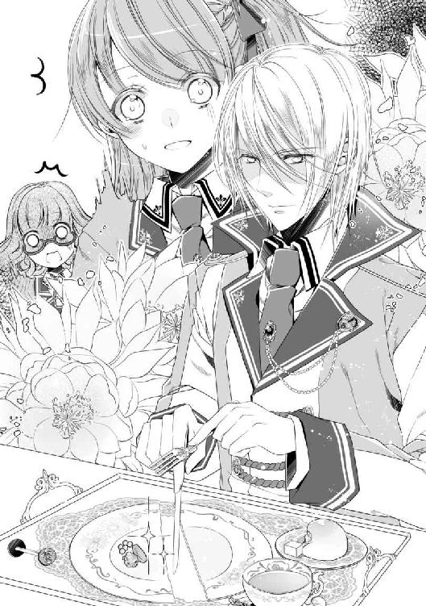
（モニカ、ちょっとどうするのよこれ！）
近くにいる彼女を窺えば、真剣な表情のままちょっと顔色が青くなっていた。青ざめたいのは私の方よ!? 顔には出てないけど、これかなり怒っているんじゃないか!?
「......メリルは」
「は、はいッ!?」
「メリルは、その男が好きなのか？」
思わず裏返った声で反応してみれば、続いたのは予想外の質問だった。あれ、怒っていると思ったのに。眉を下げて、唇を噛み締めて。形だけは鋭い金眼は、今にも泣きそうに震えている。悪いことをしてしまった子供のような。あるいは、捨てられた子犬のような。
「......名前も知らなかった人です。好きかどうかはわかりません」
「なのに、付き合うのか？」
声も、よく聞けば震えている。付き合わないと言ってしまいたい。断ってくると、私が好きなのは貴方だと言ってしまいたい。
「どうしたらいいと思いますか？」
のどから出かかった言葉を無理やり飲み込んで、モニカが助言してくれた答えをしぼり出した。
「嫌だ」
ぽすん、と。次の瞬間には、私の視界が真っ暗になった。衣擦れの音と、呼吸を埋め尽くすいい匂い。
「絶対に、嫌だ」
抱き締められていると気付いたのは、胸に顔を埋めてから三秒後。響いて聞こえてくる心臓の音は、どちらのものも破裂しそうなほどに速い。この人、わざわざ立ち上がって抱き締めに来たのか、とか。人の多いところではしなかったのに、とか。色々と頭をよぎったけれど。
「好きでもない男と付き合えるのなら、俺でもいいじゃないか！」
そう聞こえた頭上からの声が、拗ねた子供のソレにしか聞こえなかったものだから。
「......はい、彼とは付き合いません」
そう言って、広い背中を力いっぱい抱き締め返した。『貴方がいいんです』と、伝わってくれることを願って。
「ああもう！ メリル、こっち！ 先輩もついて来て下さい！」
「え、モニカ!? な、なに!?」
「いいから早く！」
ところが、幸せ気分は突然の肩を引っ張る力に中断される。慌ててモニカを振り返れば......私たちを取り囲む人、人、人。しまった、ここは昼休憩中の食堂だった！
「逃げるわよ、早く！」
「わ、わかった」
好奇、驚き、戸惑いに加えて、嫉妬などの強い感情も見える。これはまずい。モニカに指示されるまま、とにかく走り出す。食堂にほど近く、かつ使われてなさそうな教室に駆け込むと、私たちはそのまま床に座り込んだ。
「あのさ、そうしろって言ったあたしも悪かったわ。煽ったことも反省してる......けどね、見られてるのわかってて、あそこでイチャつくことはないでしょう！」
「......おっしゃる通りです、ごめん」
ついうっかり、先輩の空気に流されてしまった。あれだけの人がいる中、それも目を惹く彼が相手だとすっかり忘れていた。
「先輩も、せめてもう少し周囲の様子を見てからやって下さい。やっかみ受けるのは、その子なんですからね？」
「わかってる。だが、メリルが他の男と付き合うなんて絶対に嫌だ。我慢できなかった」
ちなみに先輩は、こちらに移動してきてなおも私から離れようとしない。くっついた体はいつもより熱く、これじゃあ本当に図体だけ大きい子供だわ。
「先輩、私は彼とは付き合いませんから。元々断るつもりでしたし」
「......じゃあ、どうして？」
「それはその、先輩の反応を確かめたかったと言いますか......」
なんというか、冷められるのも怒られるのも覚悟していたけれど、ここまで過敏になられるのは予想外だ。顔を窺えば、やっぱり拗ねた子供そのものだ。頬を染めて、ちょっとむくれたようなへの字口で私を睨んでいる。全く怖くないけど。
「......あたしが悪かったみたいね。変なことさせてごめんなさい。食堂の方片付けて来るから、ここでゆっくり話しなさいな。メリルのお昼は、後で奢るわ」
「あ、ちょっとモニカ！」
止める間もなく、親友は駆けて行ってしまった。向こうをどうにかしてくれるのは有難いけど、どう見ても逃げたよね、今。
「えっと......あの、先輩？」
「嫌だ、離さない。メリルが苛めるから悪い」
仕方なく先輩に向き直れば、今度は猫のようにすり寄ってくる。外見の印象からはかけ離れた行動なのに、駄目だやっぱり可愛く見えてしまうわ。恋の魔力恐るべし。とりあえず先輩の頭を撫でながら、これからのことを考えないと。
「......どうしましょうか。結構人がいるところで、やらかしてしまったんですが」
「ん、それは大丈夫だ。言わなきゃいけないとは、ずっと思っていたし」
私にされるがままゴロゴロしているけど、答えてくれる声は落ち着いている。しばらくじゃれ合ってから姿勢を正すと、もう年相応の『先輩』の顔に戻っていた。
「先輩......？」
真剣さを帯びた金眼が、まっすぐに見つめてくる。心臓がまたどくどくと速度を上げて、顔が熱い。壊れ物に触れるような優しい手つきで、肩を掴まれた。
「メリル、結婚しよう」
「............て、展開早くありませんか？」
「あ、間違えた。ただの本音だ」
本音なのか!? と色々聞きたいけど、とりあえず今は流しておこう。
「俺と恋人になって欲しい。どこかの知らない男じゃなく、俺と」
真剣な声色で紡がれた『恋人』と言う言葉が、ストンと胸に染みていく。今度こそ、私の好きな人が言ってくれた。お昼を一緒に食べるだけじゃない、互いが互いを求めている関係。
「......はい、喜んで」
意図せずして頬を伝った一筋を、優しい指がぬぐってくれた。それから、蕩けるような極上の笑顔を浮かべて、「良かった」と触れてくれる。幸せに浮かれた私は、彼の広い胸の中でしばらくの間泣き続けていた。
遠くで鐘の音が聞こえる。あれは予鈴ではなく、午後の授業の始まりを告げる本鈴だ。そうわかっているのに、体はちっとも動いてくれなかった。
「......初めて授業サボッてしまいました」
「俺のせいだと言っておくといい」
そう言って、大きな手のひらが優しく髪を梳いてくれる。食堂の喧騒が嘘のように、静まりかえった空き教室の中。聞こえてくるのは、先輩の規則正しい心臓の音だけ。『幸せ』を説明しろと言われたら、私は間違いなく今この瞬間だと答えるだろう。こんなに心地よい場所を、時間を、今まで知らなかった。
「......幸せ過ぎて、溶けそう」
無意識に呟いたら「じゃあこぼさないように気をつける」と抱く腕に力を込めてくれた。ギルベルト先輩と恋人になった。その意味を噛み締めている。口にしたらただ関係を指す言葉。けれど、体で表せばこの通り、幸せで溢れそうな私の中身を、無理やり腕の中に閉じ込めてもらっている。今まで彼の恋人になった人たちは、どうやって原型を保っていたんだろう。
「幸せ、だな」
「はい」
「こんな感情、知らなかった」
今度は先輩が呟いて、また微笑む。このまま時が止まってしまえばいいのに、と心の声が聞こえてくるみたいだ。
「......ギルベルト先輩、さっきの嬉しかったです」
「ん？」
「結婚しようって。言い間違いでも嬉しかった」
「ああ」
「本音だけどな」と付け足して、先輩の手がまた優しく髪を撫でてくれる。それが彼の本心だと言うのなら、ますます嬉しい。だって
「私たち、結婚できませんから」
「......メリル」
空気がひび割れる音が聞こえた気がした。先輩は金色の目を大きく見開いてから、皺が残りそうなほどに、強く顔を歪めた。おかしな理由から彼と出会って、いつの間にか好きになった。彼も私を恋人にしてくれた。幸せだと笑ってくれた。
けれど、『それ以外の世界』は最初から何も変わってはいない。変わったのは私たち二人だけで、取り巻く環境はそんなもの構ってくれない。クラルヴァインが求めるのは『道具』であり、それも不確定な今は、その辺にいるただの小娘だ。私には何の意味も価値も見出されていない。
「貴方に囲われることはできても、私では結婚できないから。嬉しかったです」
貴族の彼の方が、意味はよくわかっているだろう。たとえ妻にはなれなくても、幸せはあるのかもしれない。だけど、彼の隣りには別の人がいて......それこそ、イライザさんのような外見では太刀打ちできない人だったら、眺める私はどう思うだろう。『道具』と言う立場で、いつまで彼の傍に居られるだろう。
「恋人になれたその日に言うことじゃないですね」
茶化すように笑顔を作ってみても、彼は苦しそうな表情のまま、何も言わなかった。ただ腕に力を込めて、授業が終わるまでずっと私を抱き締めてくれていた。
その日の放課後、偶然帰り際のノックス先輩と会えたので、その足で中庭に来てもらった。『他に好きな人がいるから付き合えない』と伝えるために。
「......そっか。まあ、わかってた結果だけど。わざわざ有難う、フォースターさん」
「いいえ。私こそ、本当にごめんなさい。こんな小娘には勿体ないお話だったのに」
「君は可愛いよ。あんまり謙遜しないで。それより......」
苦笑した彼が、視線を私の背後へと向ける。心なしか鋭く、まるで睨みつけるように。
「もし辛い結果になったら、オレのことを頼ってくれ。彼よりは長く傍に居られるはずだから」
そう言い残して、ノックス先輩は走り去って行った。今しがた振られた人間とは思えないほど、強くハッキリとした声だった。
「......先輩、彼と何か因縁でもあるんですか？」
「いや？ ノックスと言う名前にも聞き覚えはないぞ」
確認するまでもなく、振り返った先にはギルベルト先輩が肩をすくめて立っていた。彼に覚えはなくても、『想い人を取られた』とかそう言う過去がありそうなのがモテる男の怖いところだ。現に私は取られたわけだし。
「中庭にご用でしたか？ それとも、私に？」
「メリルに。悪い、振る現場を覗くつもりじゃなかった」
「貴方ならいいですよ。気にしてもらえた方が嬉しいですし......恋人なんだから」
こっそり呟いたつもりが、とても嬉しそうに笑われた。恋人なのだ。ノックス先輩でなく、私と彼が。差し出された大きな手に自分のを重ねて、暮れゆく空の下をのんびりと歩き出す。時折向けられる好奇の目も、今は祝福だと感じておこう。
「......メリル」
「はい？」
「メリルは、有言実行と不言実行なら、どちらがいい？」
寮の入口が見え始めた頃、ぼんやりと消えてしまいそうな声で先輩が尋ねてきた。見上げれば、その顔は苦しそうに歪んでいる。お昼のあの時のように。
「どっちでもいいですよ」
「......じゃあ、今は何も言わないでおく。変な期待はさせたくないし」
重ねた手が強く握り返される。少しだけ痛かったけど、何も言わずにきれいな横顔を見上げる。苦しそうに、それでも前を向いた横顔を。
「俺は、メリルが好きだ」
「それで十分過ぎます」
ギルベルト先輩と恋人になった日。明るい未来なんてものは、全く見えないけど。それでも、繋いだ手は温かくて、幸せだった。
それから数日は、とても平和だった。あんなに多くの人前でやらかしてしまったのに、私に何かを言って来るような人もなく。初めての『恋人』に戸惑いながらも、私は彼と穏やかに学院生活を満喫していた。
その日は良く晴れた、いつも通りの午後だった。時間に厳しいことで有名な先生が、始業から十分以上遅れて現れた辺りで、すでに嫌な予感は始まっていた。何故か教材を片付けるように指示を出すと、黒板に大きな紙面を張り出していく。十人前後の数で区切られたそれには、何かの分担表のように散り散りに名前が書かれている。他のクラスや学年の生徒も混じって。
「......急な話ですが、学院の全生徒で演習試験を行うことになりました」
「......はあ!?」
応えたのはほぼ全ての生徒だ。もちろん私も声を上げてしまった。『演習』と言えば学院で思い当たるのは一つ、『集団戦闘訓練』だ。分類は実技授業だけど、一授業単位で評価・成績をつけられるので試験と言う方が正しい。クラス全員、あるいは学年単位で行われるそれは、監督の他に必ず医療関係者が付き添うことになっている危険な授業だ。四年生の後半から組み込まれるはずなのに。
「皆さんが戸惑うのも無理はありません。私も反対しましたが、残念ながら決定は覆せませんでした。ですが、危険が少ないように交渉はしてきました。細かな規定を説明していきますから、よく聞いて下さい」
先生は辛そうにしつつも意思の強い目で、分担表の横に丁寧な字を並べていく。簡単に上げると、主な規則はこのようだ。
実施は明後日の始業時刻から終業時刻まで。制限時間を最後まで勝ち抜いたら『勝者』とする。ただし、採点は『試験内での行動』にて評価する。
失格の条件は『完全な魔力切れ』か『意識を手放すこと』。魔術による〝気絶〟〝眠らされること〟や試験中の〝居眠り〟も怠慢行為で失格とする。一つも魔術を使わない場合も失格とする。
攻撃魔術は威嚇・牽制にとどめ、直接当てないように心がけること。意図的に相手を負傷させた場合は減点・懲罰対象とする。
さらに、ここに学年別の規定が加わって、一年生から三年生までは混合一班として『班員の誰か一人でも残っていたら、全員が勝者』と見なす。四年生以上も混合班になる場合があるが、上級生は『組んでいる下級生が失格』になると減点対象となる。
この他、細々とした規定が並んでいるが、ようするに私たち下級生は良く言えば『守られる役』悪く言えば『お荷物』として参加しろと言うことのようだ。もちろん、魔術は使わないといけないようだし、戦えるなら戦っても良いのだろうけど。戦闘が苦手な私は、大人しく〝守られ〟に徹してた方が良さそうだ。
不安はあるとは言え、皆思い思いに意見を交換しつつ、次いで黒板の表で自分の名前を捜し始める。どうやらちゃんと能力別に分けられているらしい。
「上級生用の抜き打ち試験ってとこかしらね。巻き込まれるのは困るけど、まあ適当にやりましょ」
「そうだね......私戦えないし、お荷物にならないようにだけ気をつけるよ」
班別に集合場所があるらしく、笑いながら去るモニカを見送る。一緒の班じゃないのは残念だけど、仕方ない。さて、私みたいな劣等生と組まされる人は誰だろうか。
「あら、貴女はフォースターさんですね？」
「あ、はい。そうです」
黒板の前まで移動したところで、先生が声をかけてくる。どこか気の毒なものを見る目で私を確認すると、一枚のメモを差し出した。
「監督責任者の先生が、貴女と組む生徒を指定してくれました。三年生よりも上の学年になってしまいましたが、貴女が知っている子だとおっしゃっていたから」
「はあ」
メモには達筆な字で『技工科準備室』と書かれている。教室に居残っても仕方ないので、そのまま指定された場所へ足を向ける。準備室なんて行ったこともないし、私が知っている上級生なんてそんなにいないはずだけど、誰だろうか？
歩くこと数分、無駄に広い学舎に迷いつつも、ようやく辿りついた集合場所は、やっぱり見覚えのない教室だった。そもそも準備室はその学科の先生の詰め所だ。自主的に質問に行く生徒ぐらいしか用もない。まず技工科の先生の顔も出て来ない私が、知っているはずもないんだけど。
「すみません、試験の件で来ました、二年のフォースターです」
とにかく先生に話を聞かなければ始まらない。ノックをして、なるべく丁寧に扉を開けようとしたら。
「メリル」
「はっ!?」
勝手に開いたと思ったらいきなり腕が伸びてきて、強引に中へ引き込まれた。つんのめった体勢のまま倒れる衝撃に身構えるも、ぽすんと何かに抱きとめられる。......私のよく知った、広い胸板の感触に。
「先輩!?」
「昼ぶりだな、メリル」
顔を上げて確認するまでもない。恋人になったばかりの先輩が、いたずらが成功した子供のように笑っていた。毎回毎回、どうして私はこう抜けているんだろうか。先生が『三年生以上で、かつ私が知っている上級生』だって言ったじゃないか。ちょっと考えればわかりそうなものなのに。
「先輩が、私と一緒の班なんですか？」
「ああ。二人だけの組合わせを班と呼べるか知らないけどな」
先輩は抱き締めたまま、極上の笑みを落として頷く。嬉しいか嬉しくないかで聞かれたら、そりゃ嬉しいに決まってる。私たちが共有できる時間は多くないし、公式行事で堂々と一緒に居られるなんて、願ったりだ。
（......だけど、こんなできすぎた組合わせってあるのかしら）
付き合い始めたばかりとは言え、一応恋人同士だ。そんな二人を、平等に厳しい学院が一緒にしてくれたりするだろうか。
（まさか先輩、クラルヴァイン家の力を使ったんじゃ）
考えたくはないけど、それが可能な権力。そんな推測に思わず口を閉ざしていると、部屋の奥から別の声が聞こえてくる。
「お二人ともいらっしゃいませ。ようこそ、私の準備室へ」
慌てて彼から体を離すと、気さくに手を挙げて歩いて来たのは先生と思しき男性。青い髪に猫のような形の目で、年は二十代半ばぐらいだろうか。灰色のローブ姿の彼には見覚えがある。
「貴方はあの時、実技室に居た......」
「ああ、そうか。貴女のクラスは受け持っていませんでしたね。魔術技工学と実技・戦闘授業を担当していますバレットです」
にっこりと人好きのする笑顔で挨拶をされて、戸惑いつつも頭を下げる。バレット先生？ その名前もどこかで。
「あ、モニカが言ってた学院最強の先生ですね！」
そうだ、最初の頃に『先輩のことを相談するなら』と教えてもらった先生だ。もっと年配の方だと思ってたのに、こんな若いお兄さんだったのか。
「ハハ、最強と言うのは褒め過ぎですよ。まあ、それなりには使えると思いますので、困ったことがあったら遠慮せずに頼って下さい」
へらっと軽く笑って返してくれる一方で、〝困ったこと〟に心当たりがあったらしい先輩は両手を挙げて苦笑している。恋人になった今は、もう困らないと思うけど。
「さて、明後日の話し合いをしましょう。いちゃいちゃは後にして下さいね」
私たちの甘い空気を消すように、パンパンと手を叩く音が響く。様々な器具の棚が並んだ奥、大きな木製の机にはいつの間にか二人分の資料が並べられており、促されるまま私たちは席につく。......先輩があからさまに残念そうな顔をしていたので、思わず笑ってしまった。
「まずは遠い部屋にわざわざ来て頂いてすみませんでした。貴方がたには先日の一件もありましたので、一応用心と言うことでここにお呼びした次第です」
念のため、彼女たちはまだ謹慎中だと言う情報も付け加えられてホッとする。戦うことが前提の試験で、あんな人たちに目をつけられるのはごめんだ。
「あの、私たちの組合わせのことは」
「はい、今回の総監督である私が決めたものです。クラルヴァイン君の家はもちろん、貴女がたの関係を贔屓してのものではありませんのでご安心を」
先生は目を見てハッキリと答えてくれた。よかった、先輩と一緒に居られるのは嬉しいけど、越権行為をしてまで私情を挟むつもりはないもの。
「それについてもご説明しましょう。資料を開いて下さい」
私の様子を確認してから、今度は手元の資料を促される。数枚の紙をまとめた、何かの記録のようだ。
「......って、これ先輩の！」
右上の欄に『ギルベルト・クラルヴァイン』と記されている。細かな文字と数字がびっしり書き込まれたそれは、間違いない。先輩の実技授業の評価表だ。
「見ていいんですか、これ!?」
「俺は構わない。見られて困るものでもないし」
慌てる私とは逆に先輩は首をかしげている。そりゃ、先生が提示した資料なんだから、極秘ではないだろうけど。
（......いやでも、これなら見られて大丈夫かも）
改めて文字を追ってみると、大抵が高評価だった。中でも、攻撃魔術の成績は群を抜いている。並ぶ数字は私では絶対お目にかかれないようなものばかり。これなら見られても困らないだろう。
「......あれ？」
高い得点ばかりの中、ところどころに記された減点箇所。回復は適性がないから仕方ないとしても、補助魔術や防衛についても減点がされている。いや、褒められているのは攻撃魔術だけっぽい？
「気付きましたね？」
「はい。先輩の成績、ちょっと偏ってるような」
「その通り。彼は攻撃に関しては本当に素晴らしいのですが、それ以外が残念でしてね」
これだけの点がとれて残念と言うことはないだろう。とは言え、先輩も自覚があるらしく頷いている。そう言えば、いつかの放課後に『壊す専門』だと言っていたっけ。
「で、次の資料です。フォースターさんは見覚えがありますね？」
「ひっ!?」
言われるままに一枚めくったら、目に飛び込んだのは惨状だった。同じような形式であるのに、書かれている内容はスカスカ。先ほどの三分の一の量もない。......つまり、私の実技授業の評価表である。
「メリル、これはその......悪い、言葉が」
「何も言わないで下さい自覚はしてますしてるんです！」
そりゃあ先輩のがあるなら私のもありますよね！ 彼のものと比べたら天と地ほど点差があるそれは、これぞまさに劣等生と言わんばかりの内容。中には『向いてない』とキッパリ一言のみのものさえある。
「実はですね、フォースターさんの戦闘成績が三年生じゃ補いきれなくて......それが彼と組んで頂く理由の一つなのですが」
先生は先生で、見事な追い討ち攻撃をかけてくれる。いっそ殺してくれ。
「......ん？ ああ、そうか。なるほど」
「貴方も気付きましたね？」
耐え切れず机に突っ伏してしまった私を慰めるように、先輩が評価表を指差す。そこは唯一加点されている部分、回復と......補助魔術の評価だ。そこだけ見ればそう悪くない。それ以外は大惨事だけど。
「真逆なんだな、俺たちは」
「......あ」
優しくかけられた言葉にハッとする。まるでパズルのように、先輩の減点となっていた部分が、私の評価部分と重なっていた。
「この組合わせはそう言うことか。本当に俺たちは相性が良いんだな、メリル」
「先輩......」
二人で居てお互いの弱点を補いあえるなんて最高だ。先輩の負担が明らかに大きいけど、そこは最上学年と下級生の差だと思えば、この組合わせはなるべくしてなったものだろう。机の下でこっそりと伸ばされた手に、自分のそれを重ねる。そうか、私は彼の足りないものを補えるかもしれないんだ。そう思ったら胸が温かい。先輩も同じ気持ちなのか、柔らかく微笑んで返してくれる。
「ハイハーイ、ですから、いちゃつくのは私がいなくなってからにして下さいね」
「す、すみません！」
......が、またもう一人の声によって中断された。先輩と一緒にいると、つい幸せに酔ってしまう。私は劣等生なんだから、自覚して反省しないと。
「まあ、貴方がたのそう言う部分も踏まえて、フォースターさんを合わせたのですが」
「？」
呟くような声で言われて、今度はそろって首をかしげる。先生はにっこり笑ってから三枚目の資料を開くように指をさした。
（これは、演習の記録？）
三枚目は再び先輩の評価表だ。つい最近行われた演習での評価が書き込まれているが、長い文章の最後は『要注意』と言う言葉で締められていた。
「それは、先日行った『二人一組での演習試験』の記録です。内容は書いてある通りですが」
「............」
得点は決して悪くない。先のものと同様に高評価、中でも攻撃魔術についてはかなり良いことが書いてある。だけど。
「......最後のこれ、何でしょうか？」
「書かれている通りですよ。彼は単体で戦うにはとても優れた魔術師ですが、同伴者が居る場合は『要注意』と判断しました」
先輩も思うところがあるみたいだ。繋いだ手がかすかに震えた気がした。
「その試験は、それぞれが気を配りあって戦えるかどうかを見る試験でもありました。補いあうことができれば、魔術師は一人の時よりもずっと有利に戦えます」
それはその通りだ。大きな魔術を使うためには詠唱と言う手順が必要であり、その間はどうしても隙ができてしまう。そのため、有事の際は最低でも二人以上いることが好ましい。魔術師同士なら補いあえるだろうし、それ以外の人には時間を稼いでもらえる。自分の使う術は当然として、周囲への気配りができる者こそ、真に優れた魔術師と言える。
「彼もその日、それなりに親しいクラスメイトと組んでいました。ですが、彼は相方を全く気遣うことなく、一人で特攻を仕掛け続けた」
「......え？」
今度こそ、先輩の握る手に力がこもった。つまり、肯定と言うことか。
「元々ね、彼の戦い方は危ういところがあるんです。身の安全を無視した突撃がとても多い。いくら訓練とは言え、当然危険はあります」
「先輩」
思わず責めるような声が出てしまった。見上げた彼は一瞬驚いた後、すぐにまた笑ってくれる。笑いごとじゃないだろうに。
「突撃した彼が囮になるとは言っても、周りは全部敵です。引き付けられる数には限度がある。そして、彼と組んだ生徒は一人にされてしまう。クラルヴァイン君と組むような生徒、つまり貴女のような子がね」
「げっ」
そうか、今回は私であるように、先輩と組むのは〝こう言う人間〟なのか。自分に置き換えれば怖さがよくわかる。攻め手不在で放り出されたら、戦えないのだから降参するしかない。
「なんてことするんですか、先輩」
「悪い、つい」
怒っている顔を作ったら、「反省してます」と呟いて頭を下げた。大きな犬が耳も尻尾もぺったりしているような雰囲気だ。可愛いけど、大いに反省するといいわよ。
「まあそう言う訳で、彼は強いですが少し周囲への気配りが足りません。ですが、組むのが恋人の貴女なら違うだろうと言うことになりまして」
こくこくっと先輩が高速で頷く。繋いでいた手にはもう片方も添えられて、しっかりと掴まれた。
「期待していますよ、クラルヴァイン君。フォースターさん、実は貴女も言うほど劣等生ではありません。二年生には不安が多いでしょうが、どうか彼を支えてあげて下さい。きっと貴女にしかできない」
「は、はい！」
微笑む猫の目に私も頷いて返す。置いて行かれるのは嫌だけど、先輩の力になれるなら元より全力を尽くすつもりだ。私たちの返答に満足したのか、先生はゆっくり立ち上がると、また片手を挙げて歩いて行く。『猥褻行為は厳禁ですが、いちゃつくぐらいならドウゾ～♪』と笑いながら言い残して。ぱたんと扉が閉まる音と同時に、私はまた腕の中に引き寄せられた。
「私、頑張りますから。置いて行かないで下さいよ？」
「当たり前だ。俺がメリルを離すか」
囁いてすり寄ってくる私の恋人はやっぱり可愛い。前回の失敗も反省してくれたみたいだし、きっと心配ないだろう。ちゃんと理由を見つけて組ませてくれたバレット先生には、心から感謝ね。
「メリルは必ず守る」
「はい、期待してます」
驚きの内容を告げられてから一夜明けて。
準備に走り回る先生たちとは逆に、試される側の生徒たちは何とも伸びやかに登校していた。何せ全ての授業が休止になっているのだ。祭りの前日のような高揚感があるのは仕方ないかもしれない。とは言え、唯一の国立学院の狭き門をくぐって来た彼らは、怠けるようなことはしない。あちこちで班員の点呼を取る声が聞こえ、各実技室には順番待ちができるほどに人が押しかけている。
生徒たちは蔵書室を巡り、有用そうな書物を集めては意見を飛び交わし、作戦を練っている。聞かされた時は何を考えているんだと思ったけど、こう見ると生徒の自主性を尊重した良い試験なのかもしれない。短期間で準備をする先生たちは、たまったものじゃないだろうけど。
いつもと違う風景を眺めながら、先輩と辿りついた食堂はがらんと空いていた。昼時はいつも戦場のように生徒で溢れているのに、普段の三分の一以下の人数しか見られない。
「売店で買って、そのまま実技室に籠っているんだろう」
「ああ、なるほど」
お昼ぐらいちゃんと座って食べればいいのに、ここの生徒は真面目な人が本当に多いな。普段から売店で買っている人もいるけど、食事と言えば大抵は食堂だ。今頃売店の中の人は悲鳴を上げているかもしれない。
まあ、こちらからすれば、空いているのは幸運以外の何ものでもない。有難く落ち着いたお昼休憩を過ごさせてもらうとしよう。あっと言う間に注文を済ませて、いつもの窓際の席に腰を下ろす。他に座っている人数もとても少なく、皆広く席をとってくつろいでいる。
「これぐらいなら普段も楽なんだがな」
「いつも座って食べれてはいるんですし、これ以上はワガママですよ」
皆が慌しく準備を進める中、私たち二人はのんびりと自習をしていた。劣等生の私は怒られそうだけど、攻め手の彼がそうすると言うのだから付き合うに決まっているじゃないか。
今日の私は温かいスープ系、先輩はお魚の日替わりランチだ。せっかく売り切れを気にしなくてもいいのに普段通りの選択で、呆れるような安心するような。
「......そうだメリル。一応伝えておく」
「はい？」
相変わらずきれいな手の動きを眺めていたら、ふと真面目な声が降って来た。二人の甘い時間とは違う様子で、申し訳なさそうに苦笑している。
「俺と過去に関わり......いや、〝付き合った女〟には、メリルのことを伝えてある。もちろん、先のイライザの件もあわせてだ」
「え？ ど、どういうことですか？」
私のことって......つまり、『今の恋人』として話したってこと？ わざわざなんで？
「早い話が〝警告〟だ。クラルヴァインを目当てに来ていた女たちは、それなりに情報網や繋がりもあるだろうが、メリルは違うからな。イライザのような馬鹿が動く前に全員に釘を刺しておいた」
「............」
さらっと言われてしまったけど、それって『今まで付き合った人は家柄目当てだった』と言うことよね。前に聞いてはいたけど、本当に彼女たちは先輩の後ろだけを見ていたんだろうか。だとしたら、なんて見る目がないんだろう。
「もしメリルに危害を及ぼすようなら、ヤツらが大好きな〝家の権力をもって〟沈めることも伝えてある。何かあったらすぐに教えてくれ」
「......わかりました」
ハキハキと伝えられる声には迷いも悲しみも混じっていない。一時でも好きだった人なのに、こんなことを伝えなきゃいけないなんて、どんな気持ちだっただろう。どうして彼に、こんなことを言わせなきゃならないんだろう。
「ギルベルト先輩」
「ん？」
「私は、〝貴方が〟好きですから」
会話の流れとしては不適切だけど、言わずにはいられない。鋭く冷たいのは外見だけで、中身はとても優しくて可愛い人。彼が好きだ。悔しいけど、本当に好きになってしまったんだ。今までの女性たちのことは知らないし、勝てない部分の方がきっと多い。
「貴方が、好きです」
それでも、強く想いながら声に出す。彼に全部伝わるように。私のマヌケな宣言に先輩はきょとんとした後、頬を染めながら微笑んでくれた。
「......知ってる。だから俺も、メリルが好きだ」
「はい！」
向かいの席にそろって手を伸ばして、指を絡める。私は恥ずかしいぐらい彼に釣り合わないけど、好きだと言う気持ちでなら誰にも負けないように。戦うのは怖いけど、貴方のためならきっと頑張れる。
波乱の演習試験前日。皆に申し訳なくなるほど、穏やかな時間を過ごせた私たち。少ない食堂の利用者。つまり、この席がよく見える空間で、危うい光を灯す目があることにも気付かずに。
いよいよやって来た演習試験当日。空は憎らしいほどに青く、正門前に整列する生徒たちを歓迎するように晴れ渡っている。雨天決行らしいので、素直に喜んでおこうか。
（しかし、全員集まるとやっぱり多いわね）
まずは出席確認と言うことでクラスごとに並んでいるのだけど、右を見ても左を見ても制服で埋め尽くされている。昼の食堂で見慣れたつもりだったけど、正に圧巻だ。ちなみに、一クラス四十名ほどで、最大で一学年四クラス。それが学年が上がるにつれて脱落者を増やし、六年に残るのは入学時の四～五分の一。頂点が三角形になるのは、技能職にはつきものらしい。
簡単な説明を終えた先生が去って行くと、いよいよ皆落ち着きをなくしていく。妙に厚いメモを音読したり、不規則な屈伸をしたりととにかく慌しい。本来なら無縁の試験に身構えるのはわかるけど、ちょっと不気味だ。
「メリル」
そんな同級生たちの中に、いつも通りの穏やかな声が響く。
「あ、先輩。おはよう御座います」
「おはよう。よく眠れたか？」
まだ薄い朝の光に照らされて、彼の銀髪がキラキラと輝く。いつも通りの優しい微笑みを浮かべたギルベルト先輩は、いつも通り無駄に美形だ。目の保養になるのが悔しい。
「なんだ？ 俺の顔に何か？」
「いえ、そのきれいなお顔を朝から見ると、目に毒だなあと」
「毒なのか？ また紙袋でもかぶって来るべきだったか」
良い意味で毒です、と続けたらまた笑ってくれた。先輩は全くいつも通りのようだ。背筋の伸びたきれいな姿勢に、緊張はきの字も見られない。
「さすがですよね」
「演習ぐらいいつものことだしな。この人数は初めてだが」
周囲を見回しても余裕の表情だ。そわそわと落ち着かないクラスメイトたちは、もの言いたげにこちらを見ては慌てて目を逸らす。聞きたいことがあるなら聞けばいいのに、緊張し過ぎだろう。
「ま、あくまで授業の一環だ。そう構えることもないだろう。上級生との合同授業なんてなかなかないだろうし、良い思い出作りだとでも思っておくといい」
思わずため息をついてしまった私と同時に、先輩の落ち着いた声が響く。顔は私の方を向いていたけど、おそらく下級生たちに言ってくれたのだろう。クラスメイトはもう一度だけ私たちに視線を送った後、軽く頭を下げて各々の班へと散って行った。......やっぱりこの人は上級生で、大人なんだと実感してしまう。
「先輩は凄いですね。隣りに居るのが私で申し訳ないです」
「俺は早く二人きりになりたかっただけだぞ？」
目を柔らかく細めて、髪を撫でてくれる。彼のさりげない優しさに感謝しながら、私たちも集合場所へと歩き始めた。
ほどなくして、特設壇の上から先生の指示の声が響き渡る。呼びかけているのは、先日のバレット先生のようだ。二十代そこそこのお兄さんに見えたけど、本当にあの人が責任者だったのか。老齢のいかにも魔術師な先生も沢山いるのに、人は見かけによらないものだ。
彼はよく通る声でテキパキと説明を進めていく。表情はほとんど笑顔で口調も明るい。しかし、内容は戦闘訓練の説明で、締めの言葉が『ご武運を！』な辺り、不似合いで笑えないわ。
「とりあえず、これからどうしましょうか？」
隣りに居た先輩は驚いた様子もないので、あの先生はあれが普通なんだろう。今更怖がってる場合でもないし、先輩について行くより他に選択肢もない。指示を仰ぐと、先輩は少しきつめに目を細めて、視線だけで周囲を窺い始めた。
「そうだな、今回は屋内戦も許されていたが、いきなり狭い場所はちょっとな」
「個人的に、学院内で戦うと言う意味がまずわからないんですけどね」
この学院の建物には全て特殊な魔術が張ってあるそうで、粉々にしてもすぐに修理ができるらしい。いずれにしても、一般家庭では有り得ない機能が山ほどあるからこその無茶振りだ。誰が喜ぶのか知らないけど。
「まあそう言うな。最初はなるべく開けた場所に行こう」
「開けた？ 遮蔽物があった方が隠れられて良いと思ってました」
「慣れてる連中はな。メリルだと瓦礫に埋もれる可能性があるから」
さすが先輩、よく私をわかっている。再三『直接攻撃するな』とか『怪我させるな』と言う注意は聞いたけど、『ものを壊すな』とは言われてないのよね。周囲なり足場なりへの攻撃が大丈夫なら、上級生はそう言う狙いをしてくる可能性が高い。巻き込まれて大惨事を起こしそうなのが私のような劣等生だ。やっぱり今日は、大人しく先輩にくっついていよう。
繋いだ手の温かさで少し気分を取り戻しつつ、ひとまず行き先は屋外にある実技場になった。元々荒っぽい授業で使う場所なので、広さはもちろん造りも丈夫で戦いやすいらしい。私たちと同じ考えなのか、かなり多くの生徒が同じ目的地へと進んで行く。中には六年生も混じっているのか、時折先輩が手を振りながら何かの合図を送りあったりしている。
「......何と言うか、釣り合わないですね、私。せめて足は引っ張りたくないんですけど」
引っ張るだろうな、と言うのは目に見えている。役に立つべく気合だけは入れてきたし、もちろん全力を尽くすつもりだ。でも正直、気休めにもなれないかもしれない。
「......俺は今日、メリルを全力で守るつもりで来たが」
先輩の歩く速度が落ちて、周囲が不思議そうに覗いては抜いて行く。繋いでいた手はより深く、繋いでいない手はそっと私の頬に添えられた。
「メリルの姿勢、好きだぞ？ だから落ち込むのはなしだ」
ふっと妙に大人びた笑みが落ちて、心臓がはねた。先輩の触れてくれる部分が、とても熱い。
「俺の惚れてる女を貶すな。それが、メリル自身でも」
「は、はい」
よろしい、と今度は子供みたいに白い歯を見せて笑う。向けてくれる笑顔が、いつも色んな意味を持って違っていて......先輩は本当に心臓に悪い。
「どきどきし過ぎて、心臓壊れそうです」
「じゃあずっと俺のことを考えていてくれ。そうしたら、演習なんてすぐに終わるだろう？」
再び歩み始めた足取りは軽い。人だかりが見えるので、実技場とやらもすぐだろう。足を引っ張るのは確定だけど、凹んでいる場合じゃなさそうだ。
「......頑張ります。役立たずでも足手まといでも、やれるだけはやりますよ」
「ああ」
『それでは、健闘を祈って。始め！』
伝達魔術で開始の合図が響き渡る。握った手を確かめて、前を向き覚悟を決めて......。
その瞬間に、屋外実技場は爆音と喧騒に包まれた。
「はッ!? な、何!?」
「メリル、こっちだ！」
音と言うより地震に近い強大な衝撃。とっさに引き寄せてくれた先輩がいなければ、きっと腰を抜かして動けなくなっていただろう。一体何が起こったのか。突然のことに周囲の生徒たちも悲鳴を上げて、我先にと逆方向へ駆け出して行く。やる気と緊張に満ちていた場は、開始からわずか数秒で地獄絵図になってしまった。
「な、なな......なん、ですか!? いい今の、なんで、爆発......ッ!?」
「少し口閉じてろ。舌噛むぞ？」
言葉にならない私を制して、腕の中へ強く抱き寄せられる。その直後に、二度目の激しい爆発音。瞼を閉じても突き刺さってくる強い閃光。
「ひいぃ!?」
「......あいつら、加減してないのか。全く」
地響きが耳をふさいでもぶつかってきて、悲鳴すらうまく出ない。なのに、頭にポンポンと触れてくれる感触があって、やっぱり夢じゃないらしい。先輩のおかげで正気は保っていられるけど、これいっそ気絶した方が楽かもしれない。
何分か、あるいは何秒か待って、私が顔を上げた頃には、黒色の煙が実技場をすっぽりと覆いつくしていた。
「......こ、これが『演習』なの!?」
有り得ない、こんなのが授業だって言うのか!? 地面はあちこちひび割れて、火が上がっているのも見えるし、煙の向こうにはかなりの人数が倒れている。上級生はこの学院で戦争でもしてるのか!?
「......まあ、あの辺りは特別だけどな」
先輩はとくに驚いた様子もなく、一息だけ吐いて、涼しい顔で辺りを見回している。初撃がやっぱり一番効くなーなどと、軽い声で呟きながら。
「せ、先輩......私」
「ああ、いったん退く。ちゃんとつかまってろよ？」
どうしたらいいか困惑する私に、先輩はいつも通りの仕草で手を差し伸べて、そのまま引っ張って歩いてくれる。慌てふためく他の生徒たちなど、気にもしていないように。
「......一体、何が起こったんですか？」
「真っ先に爆音が上がった辺りは、六年の首席連中の集まりだ」
「ああ......」
苦笑混じりに教えられて、納得と同時に激しい後悔が浮かんだ。六年の中でも特に優秀な生徒たち......本来ならば、ギルベルト先輩もいるはずの場所だ。この学院、ひいては後の王国を支える魔術師たち。授業の一環と言う言葉に安心してしまったけど、そもそも彼らとはその『授業』の基準が違うじゃないか。
「つまり、全っ然安全な試験じゃなかったんですね！」
「そりゃあな。メリルと組んだのが俺で良かった。正直に言って脅すべきだったか？」
クラスの皆ごめん。先輩は私たちを元気づけてくれたのではなく、誤魔化していただけだった。用心していた組が大正解だなんて。
（どうかうちのクラスメイトが、あの爆心地近くにいませんように！）
深くうな垂れる私の後ろでは、また一際大きな爆発音が上がっていた。
あれから十数分歩いて、ようやくまともな空気が吸える場外まで辿りつくと、そこはまた違う意味での地獄絵図が広がっていた。泣きながら座り込む生徒。それに対して怒鳴り声を上げたり、遠くを見つめて立ち尽くす生徒。先生の元へ棄権を伝えに行く数も少なくない。
「いきなりアレじゃ心が折れますよね......」
私だって、隣りに居るのが先輩でなければ即棄権を申し出ていただろう。いや、最初の爆発で気絶して回収待ちになってるかな。何にしても、私たち下級生には早すぎる。泣くのも仕方ない、むしろ私も泣きたいよ。
「直撃はしないはずだから、そこまで怖がることもないんだけどな」
一方の先輩は、相変わらず涼しい顔で戦場を眺めている。彼は彼で、私がいなければ爆心地で戦っている人だから、複雑な心境だ。少し離れて眺める実技場は、観客席のない闘技場のような造りだ。だだっ広い石床が広がり、細い通路がその周りをぐるりと取り囲んでいる。一応通路には雨避けの屋根と、それを支える細い石柱が立っているものの、それ以外には全く遮蔽物がない。おかげで外からでも様子が窺える。
（確かに、直撃はしてないように見えるけど）
煙が上がる度に倒れる影も見える。ただの試験で人死には出ないわよね？
「............」
先輩の目は、そんな慌しい戦場を捉えたまま。表情こそ変わらないけれど、金色が熱を帯びているようにも見える。
「......もしかして、先輩は戦いたかったですか？」
恐る恐る聞いてみると、意外にもすぐにこちらへ向き直ってくれた。笑みを浮かべて、肩を撫でてくれる。
「警戒しているだけだ。メリルが居るのに、戦いたいなんて思わない」
「でも、凄く真剣な目で見てましたよ？」
返してくれた言葉はとても優しい。それでも、やっぱり気になっているのだろう。
「いつもは俺も、あの連中に攻め込む立場だからな」
苦笑と共に返されるのは、彼も『頂点に連なる優秀者』だと言う主張であり、遠まわしだけど肯定だ。やっぱり私は、早々に足手まといになってしまった。
「......ごめんなさい」
「メリルは怖かったんだろう？ なら、今日はあそこには用はない」
今日は、と言う言葉が胸に刺さる。傍に居るだけで迷惑をかけてしまうなんて。とは言え、最初の場所に戻るのは怖いし、それこそ足手まとい確定だ。戻りましょうか、なんて言える勇気もない。
（......別の場所で、先輩が戦えたらいいんだけど）
下へ向けた視線を、そのまま周囲へ滑らせる。視界に入ってくるのは戦う気力を失くした生徒ばかりで、ことを構えるような様子はどこにもない。これじゃ、先輩は不完全燃焼。私が居たせいで『無駄な一日』になってしまう。それは嫌だ。なんとか、もう少し穏便に戦えそうな場所はないものか......。
「............ん？」
ふと、そんな生徒たちをかき分けて、誰かがこっちへ向かって来た。二、三......全部で十人ぐらいか。顔つきから察するに上級生が、ずんずんと人ごみを越えている。知り合いですか、と顔を上げてみれば、いつの間にか彼の顔からは笑みが消えていた。
「お知り合い、ですよね？」
「すまないメリル、忘れていた」
確認で尋ねただけなのに、先輩の返答は音が低い。肩に触れていた手は、掴むように力が込められていく。
「俺も狙われる側だった」
「えっ!?」
短く答えられたのは、想定外の言葉。同時に、私の体は引っ張られるままぐるりと振り返る。向いた先は、逃げて来たはずの実技場だ。
「ちょ、ちょっと先輩!? やだ、なんでそっち向くんですか!?」
「戦わないつもりだったが、無理だ。腹を括ってくれ」
「いやいや無理です嫌ですよ!?」
反省はした。申し訳ないとも思ったわよ。だからって、休憩が五分もないなんてあんまりじゃないか!? 追い駆けて来る速い足音を聞きながら、私の体は再び黒煙の世界へ引き摺られて行く。か細い悲鳴など、風と地面を削る音に全部かき消されて。
「メリル、頼りにしてるぞ」
「怖い無理帰らせて――!!」
残念ながら、演習試験は、始まったばかりのようだ。
強いところから潰していくと言うのが、演習における共通認識らしい。個別評価の授業なので『信じるものは己のみ』が正解なのだけど、とは言え一対一では到底勝てないような生徒がいるのも事実で。
「まずは強敵を倒すために結束して、それが終わったら別れると。演習じゃなくても、戦いにおける常套手段だな」
ごうごうと吹きつける風の音をかき分けながら、先輩が笑う。言われてみればその通りだ。『強大な敵を相手にした時、一時休戦してでも手を組む』なんて物語でもよく見る展開だ。それが現実に適応される様はあんまり見ないけど。戦闘なんて危ない状態ならなおさらね。
現在地は屋外実技場の端っこの辺り。離れて見た時は完全に煙に包まれていたけど、いざ中に入ってしまえばそれほど視界は悪くなく、隣りを走る先輩のご尊顔もよく見える。地面がボッコボコだったり、空気が砂まみれなことは変わらないけどね！ ついでに、相変わらずあちこちで何かが爆ぜる音も響いているけど、聞こえないことにしている。私は関係ない悪くない助けられなくてごめん！
「メリル、疲れたか？」
「あ、いえ。まだ大丈夫ですよ」
現実逃避をしていたら、先輩に心配されてしまった。走りっぱなしなので多少辛くはあるけど、止まってよその魔術の巻き添えを食らうのはごめんだ。弱者は弱者らしく足でどうにかなるなら頑張らないと。
（......と言いたいところだけど）
正直なところ、そろそろ逃げるのも限界が見えてきている。私なりにやってはいるけど、足が速い訳じゃない。並走している先輩も速度は同様。追い駆けて来る上級生たちの足音は着々と近付いて来ているのだ。ただでさえ周囲の様子に泣きたいのに、追い撃ちかけないで欲しい。現実逃避もしたくなるわよ。
（それにしても）
一方で先輩は、実技場に戻ってからずっと笑っている。口角を上げて、時折白い歯を覗かせて。微笑みではなく、眉をつり上げた好戦的な笑い顔だ。当然ながら、疲労している様子など微塵もない。彼はこの慌しい試験が好きなのかと思っていたんだけど。
（......ああ、そうか）
さっきの話を聞いて、ようやくこの笑みの理由がわかった。
「先輩は、嬉しいんですね」
こうして上級生たちが追い駆けて来ると言うことは、先輩が『結束して立ち向かうべき強者』と認められているのだ。強い凄いって聞いてはいたけど、目の当たりにすると全然印象が違う。答えを伝えれば、先輩は少しだけ驚いてから......私の方へ顔をちゃんと向けて、笑った。背景に似合わないほど柔らかく、騒音の中でもふわりと落ちる優しい声。
「ああ、嬉しい。メリルの前で格好付けられて、嬉しい」
大人びた容姿の中に子供の......まるで「褒めて」とせがむ少年のような一面を覗かせて、見つめてくる。そんな顔を見せられたら、逃げたいなんて言えないわ。ギルベルト君が見せたがっている。自分の実力を、強さを。私を守れるのだと魅せたがっている。だったら、応えてあげるのが恋人の務めだ。
「先輩、止まって下さい」
「やっぱり辛いか？」
「いいえ。そろそろ迎え撃ちましょう」
ありったけの気合を集めて、先輩の顔を仰ぐ。頭一つ上のきれいな人は、ほんの一瞬ためらった後、不敵に笑った。
「任せろ」
立ち止まって数秒も経たずに、私たちは上級生たちに追いつかれた。先輩いわく、クラスメイトが五人。残りが五年生らしい。いつの間に増えたのか、ざっと見ただけでも二十人近く、どの生徒もニヤニヤと笑っている。人数的にも勝ちを確信しているのだろう。その布陣を前にしても、隣りの彼の口も弧を描いたままだ。
（......さて、私もやることやらないと）
当然ながら、攻撃魔術が使えない私は戦力外だ。だからと言って、何もしないならここに居る必要はないし、守られる価値もない。対峙した面々に気付かれないように、こっそりと先輩の後ろに回り、そのまま杖を呼び出す。続けて、囁くように呪文を詠唱。何の魔術か読まれないように、こっそりこっそりとだ。
「......メリル？」
くっついた先輩も何をしているのかわからないのだろう。不思議そうにこちらを覗くので、変なことはしてませんよ、と合図をして、同時に魔術を発動させた。
「......っ!?」
ほんの一瞬だけ、手のひらほどの小さな魔術陣が浮かび、すぐに先輩の体の中へ溶けていく。初級も初級のお手軽魔術だけど、ないよりはマシだと信じたい。じゃないと、私が居る意味が本当にないもの。
「......何をしたんだ？」
が、先輩は怪訝そうに手を握ったり閉じたりしている。向かい合う彼らも様子を窺っているのか、まだ動こうとしない。魔術はちゃんと成功したんだけど、あんまりにも弱すぎて気付かないのだろうか。
「魔力の使用量軽減と、体の防御強化です。あと、手足を動かしやすいようにちょっと補助魔術を......やっぱり気休めにもなってませんか？」
「......三つ、いや四つ使ったか？」
「あ、はい。わかりますか？」
良かった。ちゃんと〝魔術がかかっている〟と言う感覚はわかってもらえたみたいだ。ホッとしたものの、やっぱり先輩は手をぐーぱーしながらもの言いたげに眉をひそめている。相手に害はないはずだけど、何か失敗していたのかな。
「おーいクラルヴァインー。そろそろ俺ら仕掛けていいか？」
やがて、痺れをきらしたらしい生徒――おそらく六年生が声をかけて来て、ようやく先輩は相手の方へ視線を戻した。
「気を遣わせたな。どこからでも来い」
「おうよ。悪いが、危険人物はちゃちゃっと片付けさせてもらうぜ！」
答えに続いて、それぞれの手に杖が現れる。先に準備していたのだろう。声に合わせて、魔術陣もいくつか浮かび上がって来ている。詳しくはないけど、多分どれも攻撃魔術だ。
「せ、先輩......」
あっと言う間に張り詰めていく空気に、先輩の制服を掴む。彼もまた黒柄の槍のような杖を構えて、私の肩を抱き寄せてくれる。その口元は、また笑みの形を作って。
「大丈夫だ、メリル。俺が必ず守る」
先ほどまでの様子は嘘のように、頭上から落ちる声は優しく、自信に溢れている。見上げた先は、いつも通りの落ち着いた彼の顔だ。
「体が軽くて、びっくりしていた」
「......え？」
ちゅ、と。ほんの一瞬額に触れたものを確かめる間もなく、降り注いだのは攻撃の嵐。
突然だった。一歩も離れていない地面から噴き出した炎に、私はただ絶句する。何もない地面から垂直に発生したソレは『壁』としか言いようのない形をとって、長身の先輩をも超えた高さまで燃え盛っていく。
「......ッ！」
廃墟と化した実技場が、一瞬で橙色に染まった。ごうごうと空気を吸い込む音が、炎の勢いを語っている。攻撃された。本当に攻撃された！ また震え出した手を先輩に伸ばしてしがみつく。次に備えないと。直撃はしなくても、何が来るかわからない！
（先輩たち、どうしてこんなことできるのよ！）
なるべく体を丸めて耐えられるように......けれど、来るであろう魔術の衝撃は、いくら待っても来ない。
（......あ、あれ？）
そっと顔を上げれば、炎の向こう側の生徒たちが、目が落ちそうなほど見開いて固まっている。何故彼らの方が驚いて？
「相殺した......そんな、今の一瞬で!?」
最前列に居た上級生が、信じられないと呟く。私だって信じられない。先輩が魔術を使っているところなんて全然見えなかったのに。先輩の方へ視線を戻せば、いつもの涼しい顔で立っている。しがみついた私の頭を撫でる余裕もあるらしい。
（でも、そう言うことよね？）
つまり、この『炎の壁』は攻撃じゃなく、先輩が発した魔術と言うこと。その証拠に、至近距離で燃えているにも拘わらず、火の粉どころか熱風すらも私には向かって来ない。
「い、いつの間に仕込んでいたんですか？」
「これぐらいなら仕込む必要もないぞ？」
やはり先輩は平然と返してくれる。攻撃には詳しくないけど、こんな大きな壁を作り出すとなれば、魔力も使うだろうし手順もいるはずだ。だからこそ、向こうの生徒たちも驚いているのだろう。
「ちゃんと言っただろう？ メリル」
まだ状況が理解できていない私に、今度はゆっくりと、子供に教える先生のように微笑みながら囁く。
「俺は、壊す専門だって」
口説き文句のような甘い声。撫でてくれる感触と重なって、震えが治まっていく。吐息混じりの優しい触れ合いが、背筋に響いて気持ちいい。
「何も怖くないから。メリルはこうやって、俺に抱かれていてくれ」
頭を撫でていた左手がするりと下りて、今度は腰を引き寄せる。隙間ゼロの密着した体勢のまま、彼はにっこりと白い歯を見せて笑った。......そんな、恋人同士の語らいの間にも、炎の壁の効果は消えていく。薄く透けていくその向こう側には、当然ながら上級生たちが杖を構えたまま......!?
「せせせ先輩！ くっつくのはいいですけど前見て前！」
「ん？ 何だ？」
「だから前！ 攻撃来ますってば！」
壁が完全に消える。心なしか怒りが増した上級生たちの前面には、それぞれの身長ほどの魔術陣が爛々と輝いている。どう見ても攻撃魔術。しかも初撃よりも数が多い！
「ひいっ！」
今度こそいちゃついていた先輩は何も仕込んでいない。防壁を張りたいところだけど、これからで間に合うか!?
「クラルヴァイン......お前本ッ当にヤなヤツだよなあ！」
先頭に居たおそらく六年生がドスのきいた声で叫ぶ。
「ごめんなさい！ 謝りますから、あんまり痛いの止めて下さい！」
「なんでメリルが謝るんだ？ 何も悪くないだろう」
「ああ、ああ。全部お前が悪いもんな！ モテ男はいっぺん死んで来い！」
掛け声で叫ばれたのはやっかみだったけど、この学院の最上学年には変わりない。
「きゃあっ!?」
視界が光で溢れる。矢の形をしたもの、丸いままのもの、雷のような形をしたもの。数多の魔術が一斉にこちらを向いている。息を呑む音が、妙に大きく聞こえた。体が固まって動けない。先輩、早く逃げないと！
「......だから」
真っ白な世界の中、頭上から声が落ちる。いまだ落ち着いたまま、鋭い雰囲気を秘めて。
「攻撃で俺に勝てると思うなって」
仰いだ先輩の顔が不敵に笑った。鋭い金眼が嬉しそうに前を見て、細められて。真っ黒な杖を握った右手が、振り払うように空気を切る。
直後、体ごと震えるような激しい爆発音が響き渡った。
「うおああああああっ!?」
「ちょっ馬鹿、目を閉じるな！ 防壁張れ早くッ!!」
激しい地響きの向こう側で、慌てる声が途切れ途切れに聞こえる。先輩の声じゃない。黒煙と砂埃が立ちこめる中、バタバタと動きまわる影も、先輩じゃない。
「......マジですか」
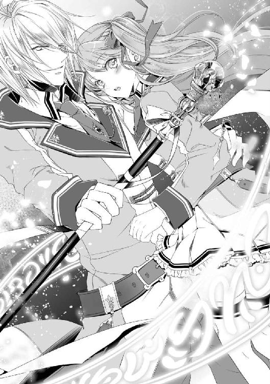
「マジだよ、大真面目」
言葉が出てこない。先輩は相変わらず私の腰を抱いたまま、右手一つで杖を掲げ、楽しそうに揺らしている。彼らが『相殺』と言った時何かと思ったけど、本当に言葉通りだった。
「あれだけの攻撃魔術に、さらに攻撃ぶつけたんですか」
「ああ。俺は壊す専門だからな」
きれいな顔が得意げに笑う。笑いごとじゃないだろうに。やがて煙が晴れれば、何が起こったのかよくわかる。実技場の石床はものの見事に砕け散って、その下の地面さえも黒く焦げボロボロと崩れている。対峙していた上級生たちは防御していたようだけど、顔には驚きと疲労の色が濃く、制服もあちこち汚れている。にも拘わらず誰も怪我をしていないのだから、恐ろしい加減具合だ。
「お前......演習でそう言う戦い方するか、フツー」
「ちゃんと相殺で治まる威力だっただろう？ 俺たちを邪魔するのが悪い」
「試験中だよ真面目にやれ！」
声を荒げる六年生に、後ろの後輩たちもしっかりと頷く。これは向こうが正しいし、私は真面目にやってるつもりなんだけど。いちゃついてるのではなく、怖いからしがみついてるだけだし。
ところが、彼の言った正論は、先輩の何かに触れてしまったらしい。受け流せる状況だったのに、金眼がゆっくりと笑った。顔立ちのせいで妙に冷たく、見下すように。
「真面目に、ねぇ」
「せ、先輩？」
いつもより低い声が、ボロボロの実技場に響く。私の腰をさらに引き寄せて、掲げていた杖の先をゆっくりと前へ向ける。先端に光の粒子が陣を描きながら。
「俺は真面目にやっても構わないんだが、何せここのところ首席争いばかりしていたからな。加減の基準がズレているかもしれん」
輝く粒子に、だんだんと赤が混じり始める。いつかの放課後、イライザさんの足元に見たあの魔術のように、徐々に禍々しさを帯びていく。
「今日はメリルも居るし、適当に流して終わろうかと思ったんだが」
なんだろうか、周囲の空気が冷えていく気がする。上級生たちは、さっきよりも少し離れて......いや、進行形で後ずさっている？ 汚れた顔も青くなっているように見えるし。
「ご指名とあれば、仕方ないな」
ニヤリと、先輩の唇が歪んだ。......今気付いたけど、この人喋っていない時にも唇が動いていた。ああ、そうか。呪文は声に出さないといけないものだけど、それが〝人に聞こえる声量でなければいけない〟とは言われてないわね。じゃあ先輩は、私が気付かないうちにちゃんと魔術の準備をしていたの？
「......え？」
さっきと比べて随分長い時間をかけた魔術陣は、赤黒く輝きながら先輩の身長の二倍以上ある高さまで広がっていた。どくどくと脈打ち、生きているかのような巨大なそれを、まさか人に向けるなんてことは。
《貫け》
「先輩――――ッ!?」
恐ろしく冷たい声と共に、巨大な魔術陣から黒い矢が飛び出して行く。それも一本一本が大人の腕ほどある大きな――もはや矢でなく銛だ。私の制止は間に合わず、視界は一瞬で真っ黒に染まった。
「全力で防壁張れ！ 急げ！」
風を切る轟音の中に六年生の叫び声が混じっている。けれど無情にも、張った先から壁は壊されて、彼らとの距離もあっと言う間に離れて行く。力の差は圧倒的で、指示と怒声はやがて悲鳴に変わっていった。
「先輩、これ大丈夫なんですか？」
「ああ、怪我はさせないようにしてある。狙いはきついが」
恐る恐る仰ぎ見れば、私に向いたのはいつも通りの先輩だった。よく見れば少しだけ、申し訳なさそうに苦笑している。
「きついって具体的には？」
「顔の中心を狙うように撃った」
「えげつなッ!?」
聞くんじゃなかった。人の急所はいくつもあるけど、とりわけ顔と言えば鍛えようもないし、反射的にかばってしまう位置だ。そうなれば集中は切れて、魔術は使えない。上級生たちを窺えば、本当に顔をかばっている。当たる前に消えているものの、拳が高速で飛んで来るのと同じ威圧感だ。誰も彼も悲鳴を上げながら手を振り回して、中には腰を抜かしている人さえ見える。
「先輩、クラスメイトにそこまでしなくても......」
「メリルにいいところ見せようかと思って......いや、悪い。少しやり過ぎたかもしれない」
呆れてしまった私を見て、しどろもどろしつつも、やがて先輩はくたっと頭を下げた。やはり大型犬が耳と尻尾をぺたーんと倒している感じだ。動機は嬉しいけど、いじめはよくない。
まずは魔術の解除だ。先輩の合図と共に陣はすぐに霧散し、黒い矢も消えた。が、二十人近く居たはずの相手は、半分が座り込んで降参の姿勢を示していた。残りは悔しそうに膝をついている......おそらく魔力切れで失格になった人がほとんどと、かろうじて立っているのが数名。皆恨めしそうに先輩を睨みつけている。
「お前になんて手ぇ出すんじゃなかった」
「甘く見てもらったら困る。俺は攻撃だけなら負けたことはないぞ。まあ、今回はやり過ぎた。悪かったな」
彼らが後ずさった分の距離を歩み寄って行く。お互い手にはまだ杖を構えたままで。危険な魔術は消して貰ったけど、ここからどうしようか。降参してくれる雰囲気もなさそうだし。
（力の差は明らかだけど、どうやって......ん？）
先輩が私の腰をトントンと指で合図している。顔は前のまま目線をこちらへ向けて、唇が動いた。
『お と せ』
......ああ、なるほど。やがて、私たちと彼らの距離は歩幅三歩分まで近付く。警戒しているのは六年生同士だけで、防壁を張っている気配もない。正に満身創痍で、睨む顔にも明らかに疲労が浮かんでいる。
《我が祈りは愛し子のために。安らぎよ、その腕に抱き包み給え》
魔力を集中させて、なるべく小声で囁く。
「なっ......!?」
耳鳴りに似た小さな音の後、ゆっくりと六年生たちの体が崩れ落ちる。以前にモニカに使ってもらった、初級魔術の眠りの術。普段なら効かないであろう子守唄でも、ボロボロの彼らには効くってことか。ごめんね六年生がた。私もお荷物でなく、魔術師なのです一応。
「失格条件は棄権、降参、魔力切れと......気絶だ。さすがメリル」
「効くまでボロボロにしたのは貴方でしょう。まあ、やられて気絶するよりはマシだと思いたいです」
ため息をつきながら彼を見上げれば、蕩けそうな甘い微笑みが降って来る。髪が触れそうと思ったのも束の間、腰を寄せられて今度こそすっぽりと抱き締められた。
「......有難う、メリル」
「勝ったのは貴方ですよ」
見当違いなお礼に笑いつつも、伝わってくる体温と鼓動がとても気持ちいい。戦場真っ只中なのだとか、周りが廃墟だとか、そう言うのを忘れてしまうぐらいに。こうして、周囲からの生暖かい視線に見守られつつ、私たちの演習第一戦は無事に勝利を収めたのだった。が、残念ながらそこで終わってはくれなかった。
砂埃が立ちこめる実技場。相変わらずあちこちで爆音と怒号・悲鳴が響き渡っているが、それが一際大きいのは間違いなく〝ここ〟だと思う。
「せ、先輩下ろして！ 私重いですから！」
今の彼を言葉で表現しろと言われたら、語彙の少ない私は『無敵』とか『最強』とかそんな安っぽい言葉を使ってしまうかもしれない。
「危ないから掴まってろ。跳ぶぞ！」
「跳ぶって......ちょ、飛んでますよッ!?」
突風に揺れる青銀の髪が、太陽を反射して輝く。吹き付ける攻撃の嵐を乗りこなすように、先輩の体は地上から高く飛び上がった。跳んでいるはずだけど、その高さは明らかに鳥の視点だ。それも、私と言う人間を一人抱きかかえたままで。
「大丈夫だ。怖くない」
不安定な浮遊感に身を縮めれば、耳元に降ってくるのはどこまでも落ち着いた声。間近には、青空を背景に微笑む先輩の顔があって......この人はなんて堂々としているんだろう。時間が遅くなったように。ゆっくり、ゆっくりと、先輩の後ろの雲が回って......!?
「うわあああああ!?」
「メリル、口閉じてないと危ないぞ？」
見惚れている間に回転していたらしい。予想外の方向に引っ張られて、先輩の首にしがみついてしまう。彼はと言えば身長の倍以上の高さまで跳んでいたのに、平然と着地を決めて、その動きのままに杖を構え直していた。
「あ、有り得ないだろ!?」
先輩と向かい合った誰かの台詞は、正しく私の心の声だ。なんだと言うのか、このやたら無敵な男は。私たちはあれからすぐに、また別の集団の襲撃を受けた。男女入り混じった四年生が主だったけど、先輩は驚いた様子も見せず、あっさりさっぱりとその攻撃の嵐を撥ね除けてしまったのだ。
その辺りで『こいつは危ない』と言う認定を受けてしまったのだろう。一体どこに隠れていたのか、わらわらと現れた生徒たちは、皆一斉に私たちを狙い始めた。先輩の言った通り『強い相手を倒すために結託する集団』そのものだ。まるで戦闘部隊のように連携して挑んで来る中で......先ほどのアレである。
攻撃の嵐を軽々といなし、能力を見せ付けた上で余裕の構え。よく見たら、後衛だった生徒が何人も座り込んでいる。ってことは、さっき浮いている間にも何かしていたのか！
「先輩がすごすぎて、なんかもうついていけなくなってきました」
「何言ってるんだ。メリルがいなかったら、さすがにここまでは動けないぞ？」
呆然と立ち尽くす私に、頭上からは相変わらず優しい声。私がやったことと言えば、こうやってしがみついてお荷物になっているだけだ。敵側に感謝されることはあっても、先輩に褒められる理由はない。
（あ、いけない。そろそろ効果切れるわね）
掴んだ制服の向こうから魔術が消えていく感覚が伝わって来る。他に私がやったことなんて、この補助魔術だけだ。なるべく彼の負担を減らせるように、そう願いながら魔術を紡ぎ直すけれど、気休めになっているのかも怪しいぐらいだ。
「......有難う、メリル」
けれど、先輩は毎回嬉しそうに笑いかけてくれる。この人の優しさが、今回ばかりは心に痛いわ。
「もう少し役に立てたら良かったんですけど」
「十分すぎる。まあ、こうして一日中くっついていられるだけで、俺は幸せだけどな」
そう言って引き寄せて、思い切り甘やかしてくれる。嬉しいけど、同時に自分が情けないとも思う。この人がさっきから素晴らしい強さを見せてくれるから余計にね。
「だから、こっちを無視すんな！ 試験中にいちゃいちゃすんな！ 先輩だからって、何でも許されると思うなよ！」
「ちくしょー！ モテる男なんて全員ハゲちまえ！」
......ついでに、毎回毎回こうして敵側の方に怒られるのも、申し訳ないと思う。
「先輩なら、禿げても格好良さそうですけどね」
「......一応弁明するなら、俺の父も祖父も禿げてないからな？」
ついでに、先輩が今日ここまでで一番戸惑った表情を見せたのが、攻撃魔術でなく今の私の一言ってのも、なんか皆さんごめんなさい。
「くっそ、なんだよお前のその〝強化〟......絶対おかしいだろ」
「............まあな」
そんなこんなで、実技場をようやく出る頃には、私たち――主にギルベルト先輩がかなりの人数を撃沈させた後だった。途中で逃げた人もいたし全員を失格にできた訳ではないけど、それでも一人の生徒が倒すにはあまりに多い数だろう。さすがに疲れたのか、先輩はコキコキと音を鳴らしながら首や肩を回している。なんとか労ってあげたいけど。
「ん？ どうしたメリル」
「あ」
意図に気付いた先輩がかがんでくれたので、思い切り頭を撫でてあげた。
「......お疲れ様、〝ギル〟」
ついでに、こっそり呼ぶのは彼の愛称だ。なかなか恥ずかしくて呼べないけど、こういう機会ならいいよね。
「こうして貰えるなら、いくらでも頑張れるな」
一瞬驚いた表情を見せた後、先輩はすぐに嬉しそうに笑った。頬を染めて、どこか気恥ずかしそうに。私に頭を預けてくれる姿は、実技場で見た頼れる先輩とはまた違う顔をしている。けど、どちらも彼で、どちらも愛おしい。感謝してもしきれないわ。
先輩を労りつつ、戦場を後にする。次の行き先は決めていないけれど、試験はまだ続いている。今は少しでも先輩に体を休めてもらわないとね。
「......で、ここに来たのか。まあ、暇な時に行っておくのは正解だが」
「す、すみません。他に思い浮かばなくて」
それから少し歩いて、結局私たちが辿りついたのは実技場からほど近くにあった共用洗面所。ようはお手洗いである。
この試験中は、学院内のほぼ全域に監視用の魔術が張り巡らされているらしいけど、お手洗いだけはその範囲外なのだ。いや、監視されても困るけど。ただし、この中では魔術が完全に使えないようになっていて、ちょっとした休憩・作戦用の場所としても機能している。
「じゃあメリル、そこの柱の前で待ち合わせな」
「はい」
先輩が男子用の建物に入って行くのを見届けてから、私も女子用の扉をくぐる。案の定と言うか、個室は空いているにも拘わらず、流し台や鏡の前には生徒がわらわらと溜まっていた。それも、化粧直しに勤しんでいる訳ではなく、皆深刻な顔で立ち回りや罠がどうのと話しているのだ。全くもってさすがだわ。
用を足した後、女子たちと少し情報交換をしてから待ち合わせ場所へと向かう。何でも、性格の悪い生徒ほど学舎の中に潜んでいるらしいので気を付けてとのことだった。外も十分凄かったけど、屋内はもっと大変なんだろうか。改めて恐るべしだ。
（さてと、先輩はまだ来てないみたいね）
お手洗いから少し離れた柱の前では、私たちと同じように待ち合わせをしている生徒たちが集まっていた。私と違って彼は背も高いし、来たらすぐに気付くだろう。
石壁に背を預けて、ぼんやりと辺りを眺める。誰も彼も制服を汚して、真剣な面持ちをしている。こちらをチラチラと見てくる彼らは、きっとさっきまで実技場に居たのだろう。私が一人なのを何度も確かめながら、男子お手洗いに入って行く。うん、そっちに先輩いるんですけどね。
あとは、やはり泣いている子もいる。怪我もしたのか、ところどころに赤茶色い染みをつけて。私も先輩と組んでいなかったら、あの子たちのようになっていたと思うと、今更ながら体が震える。ここまでの戦いで、私はほとんど何もしていないし。責任者が決めた組とは言え、なんだか本当に申し訳ない。
（ここからは、もう少し役に立てるといいんだけど）
と言っても、おそらくあの実技場が一番の激戦区だろうし。先輩ももう戦うのは満足しただろう。役に立つとしたら、一体何をしたものか。
「......ん？」
そうこう悩んでいたら、私の方へ向かって来る人物が目に入った。背の高い男子......だけど、ギルベルト先輩ではない。淡い緑色の髪に、濃青色の垂れ目。顔立ちは優しいのに、眉をつり上げ、真剣な表情でこちらへ向かって来ている。
「......ノックス先輩？」
「久しぶりだね、フォースターさん。ちょっと話せるかな？」
振った男と顔合わせるのって、後ろめたいことがなくても気まずいじゃん、なんて、どこかで美少女が言っていたのを思い出す。まさかこの私が、その言葉に同意する日が来るなんて思ってもみなかった。
「ごめんね。オレと話すの嫌だよね」
「あ、いえ、そう言う訳ではないんですが」
整った優しい顔立ちに苦笑を浮かべて、ノックス先輩が軽く頭を下げる。変わった色合いの髪が、動きに合わせてサラリと揺れた。正直なところ、すっごく気まずい。悪いことはしていないのに不思議なものだ。
「えっと、とりあえず、お話ですよね。ここで話して大丈夫なことですか？」
「一応言っておくけど、告白とかそう言うのじゃないから。構えないで聞いてくれると嬉しいな」
そりゃそうだ、こんなところで告白なんてされても困ります。割と自由に動けるとは言え、公式の試験中なのだし。
「できれば手短にお願いできますか？ 私、人と待ち合わせをしてまして」
「それは知ってるよ。そんなに時間はとらせないし......」
そこまで口にして、またノックス先輩の眉がスッとつり上がった。
「彼は、足止めさせてもらっているから」
「............え？」
続いた想定外の言葉に、体温がいっきに下がった気がした。
「君が待っているのは、クラルヴァイン先輩だろう？ 心配しなくても、彼に危害を加えるつもりはないよ。それができる相手でもないし」
「だったら、どうして足止めなんて！」
口をついて出たのは、私にしてはかなり低い声。目を逸らしたくなくて、彼を強く睨みつける。
「君と話をしたかったんだ。単刀直入に聞かせてもらう」
けれど、私の威嚇など意にも介さず、力強い腕が私の右手をしっかりと掴み取った。
「彼にあの補助魔術を使ったのは、君だね？」
「......補助魔術？」
強い、ハッキリとした口調。なのに、問われたのは想定外もいいところだ。補助魔術ってもしかして、あの気休めにもなっていない魔術のこと？ なんでそんなことを聞くの、この人？
「確かに、私がかけましたけど」
つい返す言葉から力が抜けてしまう。まっすぐに向けられた視線は、依然こちらを射抜いたまま。
「......やっぱりか」
やがてこぼれた呟きには、ハッキリとした落胆と、何故か怒りがにじんで聞こえた。落胆はわかるとしても、なんで彼が怒るの？ 右手は掴まれたままだし、訳がわからない。
「あの、一体何ですか？ あんなのなくたって、ギルベルト先輩は強いですよ？」
「君はそれを本気で言っているの？」
居たたまれなくなって問いかければ、返って来るのはどこか苛ついた声だ。なんでノックス先輩にそんな返答をされるのか。私は告白を断った以外、迷惑をかけた覚えはない。顔を見たのだって、あの放課後以来なのに。
「本気で言っています。私なんていなくても、彼はとても強い人です。とにかく、手を放して下さい」
「君は......」
グッと力を込めて、握り拳を作ってみるが、通じた気配はない。睨んでみれば、何故か今度は哀れむような目を向けられてしまった。
「とにかく、放して......」
「フォースターさん、補助魔術が一つしかかけられないって、知ってる？」
「......何言ってるんですか？」
さっきから補助魔術・補助魔術って。演習において、そんなものに意味なんてほとんどない。一つしか使えないなんて、そんなの聞いたことも......。
「............？」
聞いたことは、ない。補助は私の唯一の得意分野だ。けど、点数が稼げる教科もないし、こと今回の演習において、重要視することもない。だけど『同時にいくつも使える』とも、聞いたことがないのは何故だろう。
「使えないんだよ、フォースターさん。少なくとも、君以外はね」
靄がかかったような頭に、彼のハッキリとした声が響く。いやいや、そんなバカなことはないだろう。だって先輩には、四つ同時にかけられたじゃないか。もしかして、効果が薄すぎたから重複できたとか？
「オレも、さっきのクラルヴァイン先輩で初めて見たんだ。あんなに強化できてる補助魔術なんて。本来体まるごとにかける術を、『体の部位を指定して』かけたのかい？」
「そう、ですけど......？」
思いもよらない否定の声。それどころか、褒められている？ からかっていると思おうとしても、私を映す濃い青眼には、ふざけている様子など見えない。
「そんな芸当、聞いたこともないよ。今の彼は生身に見えて、ほとんど鉄壁だ。甲冑を着こんだのと同じぐらいの安全さで、動かす体は軽いときている。反則みたいに強いよ。それが君のやったことだ」
......よしんば、私の補助魔術に意味があったとして。どうして彼はこんなに真剣に伝えて来るんだ。彼とは戦っていないのに、牽制か？ いや、それなら絶対言わないだろう。何より、こんな表情で私を見つめる意味がわからない。
「何を......ッ！」
ピリッとした一瞬の痛みと共に右手が解放されて、驚くよりも早く顔が何かにぶつかった。少し固くて温かい、今日はずっと触れているそれは、顔を確認するまでもない。
「クラルヴァイン先輩......ッ!!」
私が待っていた人物の名が、驚愕と共に呼ばれる。引き寄せるように、しっかりと腕を回して......ただし、服ごしでもわかるほどに空気を張り詰めて。
「お前は振られただろう。見苦しい真似は止めておけ」
頭上から降って来る声には、明らかに怒りがこもっている。足止めしたと言っていたけど、無事なんだろうか。確認しようにも、抱き締める腕が気持ちよくて抜け出せない。もしかしたら私は、ノックス先輩が怖かったのかもしれない。見えないなりに二人の会話に耳を澄ませれば、彼の口からは予想外の言葉が飛び出した。
「......貴方はやはり、彼女を利用しているんですね」と。
唐突に告げられた彼の言葉に、私も先輩も反論できなかった。私はモニカ以外に『体質』の話はしていないし、先輩も話す時は魔術で防音していた。だったらこの人は、どこまで知っているのか。
片や最高学年且つ色々と有名なギルベルト・クラルヴァイン。片や、三年生とは言え確実に容姿の整った分類になるであろうノックス先輩。一見美形に挟まれた素敵な状況だが、学院の生徒はちゃんと空気を読んでくれた。すなわち、周りには誰もいなくなった。
さて、どう動くべきか。二人で目を見合わせてから、ギルベルト先輩の方が先に声をかけた。
「利用しているとは、どう言うことだ？」
疑問そのままの問いかけに、ノックス先輩の顔が歪む。『わかっているくせに！』と目が訴えかけてくるようだ。
「そのままの意味ですよ。貴方は彼女が好きで傍に居るのではないでしょう？」
続けて返された声は、明らかに苛立ったもの。顔立ちが優しいだけに、こういう反応をされるのは予想外だ。先輩にしがみつくように避難すると、何故か頭上からも冷たい空気が降りてくる。それはもう、肌が痺れるような張り詰めた空気が。
「......誰が、何だと？」
落ちた声はさっきとはもう別人だ。地を這うような低い声に、一瞬だけノックス先輩の方が驚く。が、すぐにまた睨み合いに戻ってしまう。火花が飛び散りそうな視線のぶつかり合いが続く。
「最初からおかしいと思っていたんです。貴方がただの好意で彼女の元に来るはずがない」
「ずいぶんハッキリ言い切るな。根拠はなんだ？」
これはもう、大人しく待つのが賢明だろう。お互いに一歩も退かず、声の戦闘状態だ。
「貴方には彼女と接点がなさ過ぎる。学年も得意教科も違うし、一緒に活動する授業も選択していない。何より、今まで貴方の傍に居た女子と、彼女は全く真逆じゃないですか。女に不自由していない貴方が、いきなり彼女と付き合うなんて。疑うなと言う方が無理な話だ」
「なるほど、よく俺を見ているな」
やや早口で言い切ったノックス先輩に、彼の方は感心したように頷いている。確かにその通りだ。私たちには、あの件以外に全く接点はない。何しろ私は名前さえ知らなかった。
（と言うことは、彼は『体質』の件は知らないってことですか？）
（そうらしいな。俺の付き合った女ぐらいは調べているようだが）
小声で話しかければ、先輩も前を向いたまま頷いて返してくれる。この人の場合は、調べるまでもなく目立っていたのかもしれないけど。
とにかく、ノックス先輩は好意の有無を疑っているらしい。そりゃ、元恋人さんたちに私は似ても似つかない。だけど、今この状態を見て、これが嘘や演技だと思うのだろうか？
「着眼点は悪くないが、ハズレだ。俺はメリルこそが好みなんだよ。他の女なんて、クラルヴァインに釣られていただけだ。それだけか？」
「......今の状態の貴方に言われて、信じられる訳がないでしょう」
「............」
冷たく言い捨てたノックス先輩に、今度はギルベルト先輩の方が口をつぐむ。けれど、黙ったのはほんの数秒で、すぐに柔らかい笑みを私に向けて、ポンポンと撫でてくれた。まるで、不安を感じた私を慰めるように。
「お前が言っている『利用』とは、この補助魔術のことか」
「ええ、そうです。貴方はご存知だったのでしょう？ 彼女がそう言う芸当のできる人間だと！ その力を利用するために、彼女に近付いた！」
向けられる殺気が少なくなったせいか、ノックス先輩はさらに強気な声でまくしたてる。
「補助魔術、ね......」
私にだけ聞こえるように、先輩が小さくため息をついた。
「残念だが、それもハズレだ。メリルにこんな特技があるなんて、今日まで知らなかった。そもそも俺は、攻撃魔術以外はほとんど専門外だ。何がどうすごいのかも詳しくない」
「だとしても、今の貴方の状態が異常だと言うことは、おわかりでしょう？」
「まあ、そうだな」
少しだけ笑って、先輩が自分の手を握ったり開いたりしている。私が最初に魔術をかけた時と同じだ。どこか痛いのかと聞いてみれば、眉を下げたまま、また笑いかけてくれる。こんなに私を気遣ってくれる人が、どうして糾弾されているんだろう。悲しいようなムカムカするような、胃が重くなってくる。
「メリルも自覚してなかったらしいけどな。これが不愉快だと言うのなら、今後一切メリルに補助魔術は使わせない」
「そんなことを......」
「信じろとは言わない。信じなくて構わん。それに、お前の言う通り、俺がメリルに近付いた『理由』は最初は好意じゃなかった」
ノックス先輩の眉がますます歪んで、深い皺が寄る。視線から伝わって来るのは激しい怒り。けれど、それを受けた先輩は、もう怒っていなかった。
「メリルにも最初から『理由』は伝えてある。その上で、俺はこの位置に立っているんだ」
「......なッ!?」
続いた言葉に対して、ノックス先輩の視線が私の方に向けられた。怒りと驚きに満ちた目。怖いけれど私も逸らさないように、踏ん張って睨み返す。そんな私の顔に苦笑しながら、ギルベルト先輩の手が、そっと私の頬を撫でた。
「今の俺は、ただ一人の男として、メリルのことが好きだ。家も能力もどうでもいい。ただメリルが死ぬほど好きだ。『利用』するなんて有り得ない。そんな輩は俺自身でも許さない」
きっぱり、ハッキリと。よく通る先輩の声で伝えられた言葉は、いつの間にか静まっていた広場に響いていく。金眼は曇りなくまっすぐに。
「まだ文句があるか？」
ニヤリと口角をつり上げた先輩は、瞬きを忘れるぐらいに格好良かった。
「..................オレの負けです。いや、元々負けていたんですけどね」
やがて、怒りを消したノックス先輩は、顔立ちによく合う苦笑顔で先輩に頭を下げた。「ただ、彼女が心配だった」と呟いて。
「あの、そんなに私って騙されそうに見えますか？」
「そんなことはないよ。でも、相手があのクラルヴァイン先輩じゃ、さすがにひっかかっちゃったかと思って。杞憂どころかオレの余計なお世話だったけど」
あの、と強調される辺りが意味深だけど、当の先輩はきょとんとしたまま首をかしげている。ノックス先輩も、この人が実はド天然だって知っていたなら、変な疑いは持たなかっただろうにな。
「変な言いがかりをつけて、本当にすみませんでした、クラルヴァイン先輩」
「気にしてない。メリルを諦めるのは俺にも無理だからな」
「はは、勝者の余裕ですね。羨ましいですよ、本当に」
さっきまでの張り詰めた空気が嘘のように、二人の美形が穏やかに笑い合っている。傍から見たら、これだけで目の保養になりそうだ。
「フォースターさん」
言い合い戦闘が済んだので、ノックス先輩ときちんと向き合う。彼も背が高くて、少し上を向いて目を合わせる。穏やかに、どこか寂しげに笑って。
「君のことはまだしばらく好きだと思う。本当にごめん。だけど、もう迷惑はかけないから」
「ノックス先輩......」
先ほどの激しさは夢だったのか。あるいは、無理に作っていたのかもしれない。一言一言、彼の言葉が優しく落ちる。空回りだったとは言え、私を心配して、最上学年に喧嘩を売った彼。決して悪い人じゃない。もし私がギルベルト先輩と出会っていなかったら、彼と付き合うことになった未来もあったのかもしれない。
だけど私はギルベルト先輩の手を取った。彼も私を好きだと、あんなにハッキリと伝えてくれた。安い同情はためにならない。それをやったら、さっきの言い合いの意味がなくなってしまう。それなら、私のすることは一つだ。
苦笑を浮かべたまま、また深く頭を下げて、彼は私たちに背を向けた。その背に私の全魔力を込めて、伝える。心を込めた『子守唄』を。
「......なっ......ん!?」
振り返った彼の目は、驚愕に見開かれている。
「駄目ですよ、ノックス先輩。戦闘不可なのはお手洗いの中だけです。ここはもう戦場なんですよ」
きっと見えていないだろうけど、私なりの精一杯の笑顔を作って、彼を見送る。ほんの少しでも、良い夢を見られるように。崩れ落ちる瞬間、ノックス先輩は穏やかに笑って、目を閉じた。
「......メリル、これ以上俺を惚れさせないでくれ」
「意味わかんないですよ、先輩」
彼の最後を見守っていた先輩は、脱落を確認すると同時に、思いっきり私を抱き締めてきた。温かくていい匂いのする腕の中に、私もすり寄って答える。
ノックス先輩、想ってくれて本当に有難う。応えられなくてごめんなさい。片恋はここでおしまいです。私は今、とても幸せだから。貴方も幸せを探しに行って下さい。
「そう言えば先輩、足止めされてたって聞いたんですが、大丈夫ですか？」
「足止め？ 俺がか？」
お手洗いとその付近の広場から離れて、現在地は最初の集合場所になっていた正門前の中央広場。ギルベルト先輩は数秒の間考える姿勢を見せた後、ああ、とこちらを振り返った。その顔は、何となくスッキリとしている。
「そうか、あれは足止めをされていたのか」
「え、気付いてなかったんですか!?」
「いや、手洗いの扉が開かなくてな、出るのに少々手こずったんだが。屋外だから立て付けが悪いのか、どこかの魔術に当たって壊れたのだと思っていた。そう言えば、外につっかえ棒らしきものがあったかもな」
先輩は明るい表情で笑っている。相変わらずこの人は、外見は鋭いくせに中身抜けまくりだわ。とにかく、言葉通り物理的に足止めしていたらしい。魔術が使える外側から何かするとか色々あっただろうに、そのままふさぐあたりが優しいと言うか何と言うか。
（てっきり、ノックス先輩の関係者が、先輩に何かしたのかと思っていたのだけど）
考えてみれば、三年生が六年生に試験以外の場所で挑む訳ないのか。ましてや、相手は『優等生のクラルヴァイン先輩』だし。
「ちなみに、どうやって出て来たんですか？」
「どう？ 普通に蹴破ったぞ？」
こっちもこっちで力技で出て来てるし。お手洗いは魔術の使用が禁止だったとは言え、貴方がたは何師ですか全く。先輩が無事なら何でもいいけど。
「メリル、心配してくれたのか？」
「しますよ、そりゃ。ノックス先輩ちょっと怖かったし」
「そうか」
繋いだ手を引かれれば、気付いた時には先輩の腕の中だ。今日は一日中ここに居る気がする。周囲から刺さる視線が気にならないと言えば嘘だけど、それ以上にここは温かくて心地よい。本音を言えば、ここで暮らしたいぐらいに。
「待たせてすまなかった」
「いいえ。私こそ、あの頑丈な扉を蹴らせてしまってごめんなさい。怪我はないですか？」
「ああ。メリルが守っていてくれたからな」
「あ」
彼の言葉で気付く。いつの間にか、補助魔術の効果が切れてしまっていたようだ。かけ直しをしようとして、やんわりと彼の手に止められた。
「俺はメリルを利用しないと、さっき言ったばかりだ」
「......そんな」
利用と言う言葉が胸に刺さる。始まりこそそう言う関係を求められたけど、今の先輩は私をとても大事にしてくれている。それはもう度が過ぎるほどに。もし彼やノックス先輩の言ったことが本当なら、補助魔術は私が役に立てる唯一の手段なのに。
「大事にしてくれるから、私も返したいだけなのに......それを『利用』と呼ぶんですか？」
「そう見えるのなら、仕方ない」
思ったよりも弱々しい声が出て、先輩が苦笑しながら頭を撫でてくれる。好きな人の役に立ちたいと思うのは、傍から見たら悪いことなのか。他人なんて何も知らないのに。
「メリルの気持ちは嬉しいし、それがあれば十分だ。ここに居てくれれば、それで」
「守られてるだけの私は立場ないですよ。それに、これ一応試験なんですよ？ 魔術を使うなって、私を落第させたいんですか？」
「その時は、全部さっきの男のせいだと言っておけ」
あやすように撫でられて、それ以上何も言えなくなってしまう。先輩が嫌な目で見られるぐらいなら使わないけど。こんなにいい男を、皆はどうして色眼鏡で見るのだろう。利用なんて有り得ないのに。触れなければ気付けなかった優しくない周囲を睨みながら、本格的に役立たずな私は大人しく抱かれているしかなかった。
あの後、結局正門前でも絡まれそうになり、ぐるりと学舎の反対側までまわって、特殊棟の渡り廊下まで移動して来た。先輩はなるべく戦闘を避けてくれているようだ。彼一人ならなんともない相手だろうに、お荷物を庇ってくれている。
「先輩、私のことは大丈夫ですよ？ て言うか、補助させて下さい。意味があるなら使いたいです」
「駄目だ。利用しないと宣言して、まだ一時間も経ってない」
「これは利用じゃないですってば！」
不毛な会話もかれこれ何度目だろうか。これもう、周囲云々って言うより彼の意地じゃないだろうか。ほとんど逃げたせいか、息も上がってきている。攻撃主力の人に慣れないことをさせたい訳じゃないのに。
「じゃあ試験が終わったらな」
「それじゃ意味がないでしょ!?」
思わず強い声も出てしまう。こんなやり取りをしつつも、私は彼に抱かれたままなのだから笑えない。走る時は私を抱えて走っているのだ、この人。
「わかったわかった、じゃあ今度から人数少ないヤツらはちゃんと倒して行く」
「そう言うことじゃありません！」
そう言うことじゃないけど、軽口でも倒すと言えるってことは、私さえいなければまだまだ戦えるのだ、この人は。恋人の私が足を引っぱるなんて。
「とにかく先輩、まずは私を離しましょう！」
「それはできない相談だ。誰にも咎められずにメリルと一緒に居られるなんて、次はいつになるか......」
「休日に会えばいいじゃないですか!? もう勝手に魔術使いますから......」
言いかけて、ぴたっと彼の歩みが止まった。何事かと問おうとして、彼の視線が鋭くなっていることに気付く。
「なに......？」
その先には、渡り廊下の壁に隠れるように生徒が一人立っている。背の低い私よりもさらに小柄な女の子だ。怯えを浮かばせながらも、まっすぐに私たちを見つめている。
「......一瞬で終わらせるか」
「ちょ、ちょっと先輩!?」
視線を強めた先輩に、今度こそはっきりと彼女が震え上がった。確かに『少人数なら倒す』と言ったばかりだけど、この子は戦いに来たんじゃないだろう。見開かれた目には、うっすらと涙も浮かんでいる。
「先輩、女の子泣かせちゃ駄目ですよ」
「だが、そう言う試験中だ」
構えようとした黒柄の杖を引っ込めさせると、先輩は明らかにガッカリした顔で見て来る。だから、戦いたいのなら変な意地を張らずに『そう言う生徒』とやれと言っているのに。
「怖がらせてごめんなさい。戦わないなら見逃すから逃げてくれる？」
ひとまずこの子だ。なるべく優しく声をかけると、女の子はビクッと肩を震わせながら、首を横に振った。
「え、戦いに来た人？」
「ち、ちがい、ますっ！ ごめんなさい！ 痛いことしないで下さい！」
髪を乱しながら必死に首を横に振る。見た感じ一年生だろうか。三年までは混合班になっているはずだけど、彼女の周りに他の生徒はいない。
（他の子たちが脱落しちゃったのだろうか）
一人だけ残ってしまったから、上級生と組んでいる私に助けを求めに来たとか？ とにかく、落ち着くのを待って話を聞いてみると、今度は火がついたように泣きながら予想外のことを口にした。
「......人が呼んでる？ 私を？」
「はい。ごめんなさい！ わたし、先輩を呼んでこないと酷いことするって、脅されて......ごめんなさい！」
私を先輩と呼ぶってことは、この子やっぱり一年生か。入りたての右も左もわからない頃にこんな試験に巻き込まれて、挙句パシリ扱いされるなんて。
「......なんて不幸な」
「同情している場合か？ 脅迫して呼び出すなんて、どう考えても普通じゃないだろう」
可哀相な一年生をどう慰めようかと考えていたら、頭上から厳しい声が落ちてきた。もうふざけた様子はなく、金色の目には怒りも浮かんでいる。
「そこの一年生、呼び出しには俺も同伴して構わないのか？」
「は、はい！ 大丈夫だと思います！ 誰も連れて来るなとは、言われてないので！」
「わかった。お前に危害は加えないから、案内してくれ」
落ち着きながらも一言一言に強さを秘めた先輩の声に、今度は縦に頭を振り乱す。そして、震えながらも「こっちです」と駆けて行く彼女に、数歩離れてから私たちが続いた。
「念のため聞くが、身に覚えはないよな？ メリル」
「ないですね」
覚えはない。けど、それを言うならさっきのノックス先輩だって予想外だった。しかし、彼は下級生を脅すようなことはしないし......とすると、先輩絡みの線が強いか。
「先輩は？」
「イライザたちはまだ謹慎中だし、他の連中にはきつく伝えてある。あれが通じないほどバカな女はいなかったはずだが」
きょろきょろと辺りを確認しながら、女の子は特殊棟の中に入って行く。下級生には特に縁のない場所なのに、彼女の歩みに迷いはない。階段を三つほど上がった奥の部屋、それこそあまり使われていない選択科目用の資料室と説明されたところで、女の子はようやく止まった。
「こ、ここです」
「............」
私よりも先に先輩が扉に手をかける。中は普通の教室よりも少し狭く、どちらかと言うと図書室に近い部屋だった。ズラリと並んだ本棚には、厚い背表紙の本がいくつも並び、入りきらない分が足元にも山を築いている。あまり使われないせいか少し埃っぽく、換気用の窓も白く曇っている。変な臭いもするし、長居はしたくないわね。
「......誰もいないようだが」
「は、はい！ 私がこれから、呼んで来ることになってます。ここで待つの嫌だって......」
「じゃあ何故こんな場所を指定したんだ？」
「ひっ！ わ、わからないです！ ごめんなさいごめんなさい！」
一瞬だけ細めた先輩の目に、女の子はまたボロボロと泣きながら頭を下げる。ここまで怖がることはないだろうに。それとも、呼び出し主によっぽど怖いことをされたんだろうか。
「あの、急いで呼んで来ますから......ごめんなさい！ ほんとにすぐ戻ります！」
「わかったから。あの、大丈夫？」
ぺこぺこと腰からお辞儀を繰り返し、震える手でノブを何度も揺らしている。
「大丈夫です......すぐ戻りますから！ あの、扉閉めますけど、カギは開いてますから！」
「わかったから、早く行って来い」
先輩もやや呆れた口調で手を振り返す。最後にもう一度深いお辞儀をしてから、女の子は廊下へ転がるように消えて行った。
〈キン〉
「............え？」
それと同時だった。ガラスを引っかいたようなかん高い音に、先輩を振り返る。彼にも聞こえていたようで、目を合わせた後、今度は閉められた扉へ顔を向けた。彼女の足音はもう聞こえない。
「今の音......魔術？」
「まさか」
彼の制服を掴んだ私の手ごと、先輩が扉へ走り寄る。......が、
「......やられた！」
彼の伸ばした手は、ノブからほんの少し離れた場所で止まっていた。否、遮られていた。大きな手のひらが、半透明の何かに触れている。
「.........『箱結界』だとッ!?」
「はこ......？」
彼の口にした言葉を私は知らない。けれど、この試験中一番焦った表情を浮かべている彼に、自分たちはまずい状態に追い込まれたのだと、嫌でも悟るしかなかった。
『結界』と呼ばれる術は、魔術師以外にもそれなりに知られている一つだ。一方向のみに展開する防壁とは違い、対象を囲うようにして発生するので、常に立体である。見ようによっては箱であり球であるのだけど。
（わざわざ『箱結界』って呼んだってことは、特殊な魔術なのよね）
張り巡らされたそれを一通り眺めた後、再び視線を先輩に戻す。結界を確認した後から、彼は扉の前に立ったまま全く動いていない。悔しそうな表情を浮かべながら、ギリギリ届かない拳を音がしそうな程に握り締めている。
「......どうしましょうか。罠にはめられたってことですよね」
「まあ、そうだな」
黙っていても仕方ないし。控えめに声をかけてみれば、先輩は顔をこちらに向けて少しだけ笑った。それから、私の疑問に気付いたのか、空いている手で招いてくれる。
「箱結界なんて知らないよな。『鍵付き結界』とも言うんだが」
「どっちも聞いたことないですね」
ただ『箱』に『鍵付き』、なんとなく雰囲気は掴める気がする。鍵の付いた金庫とか、そういう感じだろうか。
「ようは、解除するために『条件』を設けられている特殊魔術だ」
「あ、なるほど」
予想はだいたい当たりらしい。「よく見ると違いがわかる」と指し示してもらった面には、半透明の正方形が模様のようにビッシリと並んでいる。通常の結界に模様はないはずだ。形そのものも立方体型に発生しているらしく、それが箱結界と呼ばれる所以だそうだ。
「それで、先輩はこの魔術を知っているんですよね？ 解除法は？」
「知っているからこそ、厄介なんだ」
さらさらと説明をしてくれたので解決が近いのかと思いきや、再び形の良い眉をひそめて息をつく。その『条件』とやらが厄介なのかと答えを待てば、予想外の言葉が返された。
「俺たちは、条件を知らされていない」
「............あ」
つまるところ、『問題が提示されていない試験を解け』状態だった。焦っていた訳だ。最初から詰みじゃないか。
「通常の結界なら力ずくで何とかするところだが、この魔術には術者の情報が組み込まれている。条件の達成以外では、本人にしか解除ができない」
「......うわあ」
乾いた呟きが落ちた。つまり、今の私たちには『術者本人がここに来るのを待つ』以外に選択肢がないってことだ。試しに触れてみるけど、退路を遮る半透明のソレは指をしっかりと押し戻してくる。硬くも柔らかくもない不思議な力には、物理攻撃も効かないそうだ。
「どうしようもない、ですね？」
「そうだな。もっとも、これは禁止魔術の一つだ。監視の教師たちが気付いてくれれば、そう時間はかからないかもしれない」
いわく、これは上級生の実力試験などでのみ使用されるものだそうで、先生が使う時にも書類を出さないといけないらしい。理由は、今のようなことが起こりえるから。結界そのものには条件が表示されないので、先生が付き添った状態でしか使っちゃいけないのだと。
「悪用され易い術は大抵そうだけどな。そもそも、この結界術は六年生も詳しくは習えない魔術だ。自分で研究して辿りつかないといかん。結界魔術を専攻してるヤツなら、そう難しくないだろうが」
と言うことは、私を呼び出した生徒......今回の犯人は、専攻教科を選べる四年以上の上級生と言うことか。あの一年生の子は、本当に使い走りにされただけみたいだ。
「解析が得意な教師が来てくれれば、術者も見つけられる。悪いメリル。俺がもう少し他の分野も勉強しておけば......」
「いえいえ、十分ですって！」
とにもかくにも、ここに閉じ込められて動けないのは確定みたいだし、学院内は現在大荒れ中だ。頼みの綱の先生も、すぐに来てくれるとは思えない。
「......いちゃいちゃするぐらいしか、することないですよね」
気を紛らわせるためにボソッと呟いたら、先輩は一瞬だけ驚いた後、すぐに蕩けるような笑みを浮かべて、私の肩を引き寄せてくれた。
「それは名案だな」
「ふふっ」
危機感足りないと言われればその通りだけど、他にできることもないし仕方ない。先輩が一緒に来てくれて良かった。こんな時でも彼の傍に居れば大丈夫だと、心を落ち着けられる。
（............む）
慣れた動作のままにくっつこうとして、止まってしまった。いつもの先輩の匂いと違う。汗や砂の匂いでもなく、これは入った時から感じていたこの部屋の空気だ。
（なんかここ、空気こもってて嫌な感じなのよね）
本を管理しているためか窓はなく、換気手段は天井近くの小窓だけなのに、それも白く曇っている。学院の施設はどこも手入れされているはずなのに、特殊棟だから見落としてしまったのだろうか。
「メリル？」
私の背ではもちろん届かないし、そもそも結界の範囲外だったら触ることもできないのだけど。
「この部屋の空気やだなーと思って。こもってません？」
先輩から少しだけ離れて、壁側に近付く。ああ、やっぱり小窓は結界の外だ。ここから出ないと、換気もできないなんて。
「おい、メリル？」
先輩の声が、心配の色を強めて私を呼ぶ。あれ、なんだろう。振り返ろうとしているのに、体が動かない。視界が、揺れ、て......？
「メリル!!」
彼の叫んだ声が、いくつも重なって響く。変だ、力が抜けていく。心臓の音が妙にうるさくて、薄汚れた天井がぐるぐると回っている。
「せんぱい......」
気をつけて。罠は、あの結界だけじゃない。声にならない息の音が、淀んだ空気に吸い込まれていった。
＊ ＊ ＊
いったい何が起こったのか。思考が一瞬で吹き飛んで、ただ名前を叫んだ。腕の中に横たわる最愛の彼女は、焦点の合わない目を何度も瞬きながら『きをつけて』と声になっていない呟きを落とす。つい先ほどまで笑っていたのに、何故急にこんなことになったんだ!?
（この部屋の魔術は結界だけだ。なら何故だ!?）
メリルを引き寄せながら、もう一度さして広くもない部屋を見回す。入った時にあった違和感は、箱結界が発生した時点で消えている。何度確認しても、この部屋の中に他の魔術は仕掛けられていない。
（だとしたら外で？ いや、有り得ない）
ここに来るまでの道のりでは、俺が全神経を動員してメリルを守っていた。彼女に害が及ぶなら、先に俺に当たっていたはずだ。
「メリル......メリル！」
握り締めた小さな手は、少しずつ冷たくなってきている。苦しんでいるような様子はないが、静かに眠りに落ちていくような姿が逆に恐ろしくもある。このまま消えてしまうのでは、よぎった言葉に頭を振って、俺の体温を分けられるように強く強く引き寄せた。
（どうしてメリルだけがこうなった？）
最初からここに呼び出されたのはメリルだった。犯人は間違いなく彼女を害そうとした人物。それは見つけ次第半殺しにするとしても、一緒に居た俺は無事で、何故彼女だけが倒れた？
（考えろ、特定人物だけを害する魔術......何かあったはずだ）
これまで読んで来た魔術書、授業の板書き、教師たちの言葉。知識と思しきものをひっくり返すようにあさる。けれど、思い当たる魔術はない。そもそも、特定の人物を害するようなものは『呪術』に分類され、学院はもちろん国が使用を禁止しているものがほとんどだ。そんなものを使う生徒が、学院にいるとは考えにくい。
「......っ！」
「メリル！」
彼女から聞こえた小さな呻き声に、慌てて体を抱き締め直す。体温がますます下がっている。早くここから出なければ。バレット教師、誰か、早く気付いてくれ！
（俺の知識じゃ原因はわからない。早く、専門の人間に診せないと）
何が名門だ。ただ戦えるだけじゃ、メリル一人守れないのに。俺はここまで何をしてきたんだ！
（くそ、もっと別の分野も見ていれば......知識......本？）
ハッと視線を上げれば、飛び込んで来るのは天井近くまで並んだ本棚。もちろん、そのいくつかは箱結界の範囲内にある。ここに魔術書があれば、メリルの状態がわかるかもしれない。そう思って立ち上がって......俺は自分のお粗末さを後悔した。
本棚にはどれもビッシリと本が詰められているのに、結界内にあったその棚は、一角丸々本が抜けていた。そして、棚が空いているにも拘わらず、足元に本が積んである。いくらあまり使わない資料室とは言え、学院の本をぞんざいに扱うとは考えにくい。
「......先入観ってのは、視野を狭くしていかんな」
メリルをなるべく扉側に下ろしてから、足元の本に手を伸ばす。無造作に積んでいるように見せかけて、それは囲うように〝組まれて〟いた。
本の囲いに隠してあったのは、手に乗るほどの小さな試験用フラスコ。中には透明な液体が少量入っており、細い煙をあげている。手が届くまで近付いて、俺にもようやくわかった。本当にわずかだが、埃とカビが混じったような湿った臭い。実家に居た頃に〝よく嗅いでいた〟ものだ。
「......神経毒か！」
確か、毒の中でも比較的調合が簡単で、それなりの安価で入手できるもの。『よく見るだろうから覚えておけ』と親族から何度も言われていた一つだ。考えてもわからない訳だ。原因は魔術ではなかったのだから。
「全く、これだから『魔術師は頭が固い』と言われるんだな」
自嘲を噛み締めつつ、フラスコの口にハンカチを突っ込んで、容器は上着できつく巻いておく。これでしばらくは治まるだろうが。
「メリル、しっかりしてくれ」
フラスコをなるべく結界の隅に置き、再度メリルの体を抱き直す。体温はすっかり冷たくなり、小さな口からこぼれる吐息も弱々しい。あの毒がメリルにだけ効いた理由は簡単だ。貴族の俺は、ある程度の毒には耐性をもつように仕込まれている。面倒で仕方なかったが、今ばかりは体を変わってやりたい。
（効果は催眠薬に近い、麻痺と昏睡だったか。大量に摂取していれば命にも関わるが）
いや、俺の体格で考えるのは違うな。メリルは俺より細いし小さい、その上耐性もない。部屋の臭いについて何か言っていたし、そういうものに敏感なんだろう。一秒でも早く、ここから出してやらないと。
「メリル、もう少しだけ我慢しててくれ」
血の気の引いた小さな顔が、少しだけ頷いて返してくれる。なるべく外気に触れないように、冷え切った体を強く抱き締めた。
閉じ込められてから、どれぐらい時間が経っただろうか。ここまで届いていた喧騒も、聞こえなくなって久しい。この部屋には時計がなく、感覚だけで判断しているが......ずいぶん長い気がする。せっかくメリルと二人きりで過ごしているのに、一秒一秒がひどく重い。
「......メリル」
繰り返し口をついて出るのは、彼女の名前。その度に少しだけ頷いたり、裾を握ったりして返してくれていたが、だんだんとその反応も鈍くなってきている。張り付いた髪を流してやれば、濃い髪色とは対照的な白い顔。愛らしい目は閉じられたまま、長い睫毛の落とす影が暗い色を見せる。
「寒くないか？」
小さな手をとり指先に、甲に、そっと口付ける。触れる部分はどこも冷たくて、手首から感じる鼓動さえも弱い。今すぐにでも出してやりたいのに、扉は静かなままだ。待つことしかできない自分が悔しい。
「メリル......」
もう何度呼んだだろう、大切な恋人の名前。口にする度に温かくて、今は苦しい。早く、早く、早く、早く。誰でもいい、誰か気付いてくれ。メリルが、こんなに冷たい。
「......ギル」
「ん、何だ？」
か細い声が、珍しく愛称を呼んでくれる。絡めた指を握り返して............その手が落ちた。
「......メリル？」
手から滑り落ちて、垂れ下がったまま動いてくれない。周りの音が消えた気がした。
「メリル？ おい、メリル!?」
引き寄せた顔はぴくりとも動かず。かろうじてもれる空気の音が、徐々に小さく消えていく。砂時計の砂のように、何かが、サラサラとこぼれて行くような。俺の手から、消えてしまう......？
《――杖をッ！》
そう叫んだのは無意識だった。ほのかな熱の直後に、手にずっしりとした感触。上から下まで黒塗りの自分の杖が『命を刈り取るナニカ』に重なって、反射的に彼女から遠ざけた。
《怒り逆巻く暗きものよ、我が下に集いて煉獄と成せ!!》
我ながら悲鳴のような詠唱だ。口をついて出たのは、知る限りで最短発動の破壊魔術。至近距離での爆発に、一瞬で狭い部屋の中が赤く染まる。
けれど、続いて聞こえるのは破壊音でなく、ガラスをこするような耳障りな騒音で。
「......くそッ!!」
変わらない風景がそこにある。正方形の並んだ薄くも厚くもない『鉄壁』が、そこに。
「嫌だ......メリル！ 誰か頼む、気付いてくれッ！」
拳を叩きつけても、何の音もしない。今の俺では壊せない。早く出ないといけないのに、このままじゃメリルが手遅れになってしまう！
「いやだ......メリル、俺はどうしたらいい......？」
引き寄せた体は冷たく、動かない。頬は白く、小さな唇は色を失って。
「......メリル」
そっと、その唇に触れる。いつも薄桃色をしていたそれは、水気を失い乾いてしまっている。けれど、柔らかくて、愛しい、彼女の。
「......一か八か、これしか、ないのか」
本当はいつも触れたかった。ずっとメリルにこうしたかった。けれど、彼女を〝本当に好きになったから〟できなかった。
この行為には『意味』がある。利用なんてしたくない。そんなことのために、彼女に触れたい訳じゃない。だけど、彼女を助けられる手が、これだけなら。
「......メリル、好きだ」
静かに唇を重ねた。
＊ ＊ ＊
「......ん」
柔らかいものが触れている。何だろう温かい。......熱い、かな。
「メリル、まだだ」
耳元をかすめる吐息混じりの声は、私の大好きな彼のものだ。けれど、いつもよりずっと色っぽくて、彼と触れているところが、全部逆立つぐらいにぞくぞくする。
思わず逃げようとしたら、大きな手にがっちり掴まれて、また熱いものにふさがれる。触れては離れて、また少し違う位置に。わずかな間を挟みながら、執拗なまでに追ってくるそれは、少し怖い。でも、同じぐらい気持ち良くもあって、体が溶けちゃいそうだ。
「せん、ぱい？」
「メリル、名前で」
「んっ......ギル」
ただ名前を呼ぶだけなのに。その間にも何度も遮られる。熱くて怖い。でも、気持ちいい。
「......メリル」
鳥肌が止まらない。なんでこの人が呼ぶ私の名前は、こんなに特別な音をしているんだろう。大切に、大切に。それはまるで、宝物のように。
「......すき」
「俺もだ」
不思議。さっきまであんなに体が重かったのに。今はこんなに温かくて、幸せな気持ちでいっぱいだ。ギル、もっと抱き締めて。触れて。私の名前を、呼んで。
............そっか。この、とても気持ちいい感触は。私、彼とキスをしているのか。ふふ、なんて、いい夢。
蕩けるほどに優しい腕の中。遠くで、ガラスの割れる音が聞こえた気がした。
＊ ＊ ＊
「おい、誰かいるのか!?」
「......やっと、見つけてもらえたか」
「クラルヴァイン君!? 何故君がこんなところに」
『それ』が壊れてからそう間をおかずに、扉をやぶって教師たちが現れた。後ろには医療班の担当も見える。よかった、これでやっとメリルを助けられる。
「何があったんだね？ ずいぶん疲弊しているようだが」
「バカなヤツに毒を盛られました。俺は動けるので、彼女を頼みます」
何とか声を絞り出して、メリルを差し出す。駄目だ、やっぱり予想以上に疲れてしまった。息が苦しい。でもまだ倒れられない。早く病院に連れて行かないと。
「ど、毒って......とにかく診せて下さい！」
俺の返答に教師たちは固まったが、いち早く我に返ったのはやはり医療班の教師。メリルの状態を確認すると、険しい表情で指示を飛ばす。
「毒かどうかはわかりませんが、彼女は危険な状態です。すぐに病院へ搬送しましょう！」
「あ、ああ。先方には念のため連絡してあるはずだ。すぐに担架を」
続いて他の教師たちも手配のために動き出す。ああ、もう大丈夫だ。
「一体何が起こっているんだね？ これは授業の一環、規模はどうあれただの試験だろう？」
「それは俺がしたい質問ですね。もっとも、起こったことは事実ですから。俺の大切な人が、どこかのバカに害された。クラルヴァインを敵に回したいヤツがいるようです」
年配の教師の質問に、途切れ途切れになりながら返す。本当なら今すぐにでも半殺しにしてやりたいが、病院が先だ。まだ震える膝に力を込めて、なんとか立ち上がる。
「待って、貴方も少し休んだ方がいい。切れてこそいないけれど、魔力消費が激しいわ。試験については私たちが口添えをしておくから」
「いえ、棄権で構いません。俺も彼女に付き添いたいので、このまま失礼します。......ああ、そうだ。奥にまだ神経毒があります。容器を制服で包んであるので、耐性のある方に確認してもらって下さい」
やや早口で言い切り、彼女を乗せた担架に続く。彼らは優秀な学院の教師、こっちは任せておこう。揺れる視界を手で押さえつけて、遅れないように歩き出した。
教師たちが先に連絡をしておいてくれて良かった。担架はすぐに医療班の搬送車と合流し、長い廊下を俺と並走している。これなら思ったよりも早く病院まで連れて行けそうだが。
（メリル......）
彼女の顔色は依然として青いまま。耳障りな車輪の音の中でも、その目が開くことはない。あの程度の濃度なら解毒は簡単だろうが、その後は相性の問題だ。魔術で完治できる外傷とは違う。
（俺が代わってやれたら、どんなに......）
やがて特殊棟の出口が見えて来る。医療班の連絡は実に迅速で、待ち構えているのは病院の看護師たちのようだ。
「メリル、すぐに病院だからな。もう少しだけ頑張ってくれ」
教師から白衣の人間たちに担架が引き継がれていく。彼らの話す内容はわからないが、強く頷いて返してくれる姿に少しだけホッとした。
学院から続く街、『学院地区』に集まる建物は、質はもちろん、信用できるものばかりで構成されている。病院もその一つだ。きっと大丈夫だと、自分にも言い聞かせながら看護師たちに頭を下げる。彼らは慣れた動作で返礼して、メリルを搬送して行った。
（俺も急ごう。教師に報告と、メリルの荷物も取って来ないと）
このままついて行きたい気持ちを抑えて、教室棟へ足を向ける。......と、視界の端に誰かが映った。
「......なんだ？」
長い黒髪に黒い目、肌は怖いほどに白く、目の下の濃い隈が離れた場所からでも見える。晴れた昼下がりにはあまりに不似合いな、まるで幽鬼のような女の貌には......見覚えがあった。いや、正確には〝見たことだけはある〟。
かつて、そう件のイライザと付き合っていた頃だ。彼女を迎えに行った際に、一度だけ一緒にいるところを見たことがある。イライザはクラスの友達だと笑っていたが、その扱いは正しく召し使いのそれだった。いわゆる嫌がらせ――いや、虐めの類なのは俺でもすぐにわかった。
後にも先にも口を出したのはこの一度だけ。うるさくしたくはなかったが、自分の恋人がそのようなことをしているのはどうしても気に障ったのだ。
『そんな交友の仕方しかできないなら、今すぐ友達などやめろ』
そう伝えると、イライザはすぐに彼女に関わることをやめて、俺の機嫌を取りに来た。......そう言えばこの辺りからだったか。あいつとの関係が冷めてしまったのは。別れたのは大正解だったが。
ともあれ、知っているのはイライザのクラスメイトと言うことだけだ。口をきいたこともない。......にも拘わらず、女の目はまっすぐに俺を見ている。こちらの様子に気付いたのか、ニタリと口端を歪めて。
「......何がおかしい？ 俺に用か？」
我ながら低い声だった。仕方ない、こちらは一秒でも早くメリルのところへ行きたいのだ。本音を言えば無視したかったが、先の奇妙な嘲いは、受け流すには異質過ぎた。苛立つ俺を気にするでもなく、一呼吸おいた後、女の口からかすれた声が落ちる。
「用はもう終わりました。先生がたの対応の早さには驚きましたが、あの子がいなくなったならこれで成功です」
「は......？」
一瞬、この女が何を言っているのかわからなかった。裂けたような笑みを浮かべる姿は、ひどく気味が悪いが。
（ふざけるな。あの子、と言ったか？）
這い上がる嫌悪感を押さえ付けて、女を見据える。聞き間違いでないのなら、今の言葉は告白に等しい。
「つまり、あの神経毒と箱結界を仕かけたのは、お前か？」
「はい、クラルヴァイン先輩」
どこか恍惚とした貌で、女は今度こそはっきり答えた。
次の瞬間、静まり返った廊下に鈍い音が響き渡る。抑えた感情が爆発した。そう認識した時には、俺の手は女の首を掴み壁に叩きつけていた。ギリギリと細い骨が軋む。にも拘わらず、女は笑顔でこちらを見つめている。やはり、どこか悦びの色を浮かべたまま。
「何のつもりだ。返答次第では容赦しない」
「はッ、だって、あん......な、貧相な子、ぅぐ......あ、貴方に釣り合わないじゃないッ」
言葉は途切れ途切れになりつつも、その口調はいたって平常。いや、愉しそうにさえ聞こえる。気味が悪い。正しく、あの資料室の空気と同様の異質。少し手をゆるめてみれば、咳き込むと同時に今度は声を上げて笑い出した。
「だって、あんな地味で何の取り柄もないチビ、有り得ないじゃないですか！ 化粧濃いだけのイライザも駄目だし、他のバカ女どもも論外！ みんなみんな、貴方の恋人には相応しくない！」
「............」
今度こそ反応が浮かばない。一体、この女は何を言っているんだ？
「強く気高く美しい。貴方は存在そのものが至宝！ 家名に群がる虫に貴方が汚されるなんて、絶対に許せないわ！」
ようやく笑い以外の表情を見せたと思えば、鬼のような形相で意味不明なことを力説している。話しているのは共通言語のはずなのに、ここまで意思の疎通ができないこともあるのか。表すならば、ただ一言。
「気持ち悪い」
頭を占める感情が、そのまま音として出て来た。
「......は、い？」
今度はピタリと、人形のように静止した。見開かれた黒い目に俺の顔が映っている。自分でも久しく見ていない、明らかに嫌悪した表情だった。
「気持ち悪い、と言った」
「いやだ、先輩ももしかして薬を吸ってしまいましたか？ 解毒薬は持っています。すぐに用意を......」
「お前が、気持ち悪い」
何か勘違いをしているようなので、もう一度、言葉を区切ってハッキリと伝える。
「あたしが、きもちわるい？」
壊れた人形のような女は、言葉を繰り返してコテンと首を傾けた。わかっていないのか？ 自分の言っていることが、明らかにおかしいと。
「お前は誰だ？ お前はクラルヴァインなのか？」
問いながら首から手を放す。虫でも握ってしまったような感覚だ。気持ち悪い。
「いいえ、クラルヴァインは貴方です、先輩」
「ならば何故、お前が俺の恋人の価値を決める？ クラルヴァインは俺だ。お前は違うのに、何が許せないんだ？ 全く無関係だろう」
「......え？ ぁ......は、い？」
こう言ってもまだわからないのか。それとも、否定されたことを認めたくないのか。見開いたままの眼球がウロウロと泳ぐ。
「俺はお前の名前も知らないし、知りたくもない。赤の他人だ。だが、メリルは俺の大切な人で、その価値をお前にどうこう言われる筋合いはない」
「あ、あたしの、名前は......」
「興味がないと言った」
全身で殺気を込めて、遮る。「ひっ」と小さな悲鳴を上げて、女は壁にしがみついた。
「お前のしたことはただの犯罪だ。私怨ですらない。二度と俺の視界に入るな」
汚物を触ってしまった手を払い、教室棟へ駆け出す。頭を切り替えて、ただ最愛の彼女だけを思いながら。背後で聞こえた金切り声など、俺は知らない。
＊ ＊ ＊
目が覚めたら、知らない天井が見えた。どう見ても寮の部屋じゃないし、薬の匂いが混じった清潔な空気。
（......ここ、どこ？）
そう口にしようとして、のどがカラカラなことに気付く。長い時間寝ていた時のように、うまく声が出てこない。頭も重いし、あちこちの関節がギシギシする。
（参ったな。いっそ二度寝しちゃおうかな）
もしかしたら、まだ寝ぼけているのかもしれない。いつ眠ったのかも思い出せないけれど、知らない場所にいることもおかしいし。考えようとすると、また布団に吸い込まれそうになる。うとうとと、瞼が閉じていき......。
「メリル？」
......かけて、一瞬でパッと開いた。今のは私の大好きな人の声だった。高すぎず低すぎない、背筋に響く優しい声。どこ、と今度は違う意味で視線を巡らせる。白色に統一された簡素な部屋を一回りして、辿りつくのは私の左手。大きな両手がしっかりと掴んでくれていた。
「ギル......？」
見上げれば、少し疲れた金眼と視線が合う。心なしか涙に濡れたそれは、まっすぐに私を見つめている。
「よかった......よかった、メリル！」
そのまま私の首筋に顔を埋めて、甘えるように抱き締めてきた。温かい体が、冷たく固まった私をゆっくりほぐしていく。
（ああ......そうか。私は）
よかった。私、ちゃんと生きてたみたいだ。
それからすぐにお医者さんらしき人たちが来て、私の状態を説明してくれた。ここは学院地区にある病院であり、信じられないことに試験から丸一日眠っていたそうだ。
さらに驚くべきことに、私が倒れた原因は神経毒だった。それほど強いものではなかったけど、私の場合はその成分と致命的に相性が悪く、一時は危険な状態だったらしい。寝てただけで苦しくなかったのが救いだった。
「授業でも絶対に使わないように！」と強く念押しすると、問診を終えたお医者さんたちは、もう一晩泊まるよう言い残して行ってしまった。再び病室には二人きり。ちらりと窺った先輩の顔には、薄くない隈が見える。
「もしかして、ずっと付き添っててくれたんですか？」
「この病室に移されてからだけどな。俺がメリルの傍に居たかったんだ。そんな悲しい顔をしなくていい」
謝ろうとした口を遮って、先輩は穏やかに笑う。触れてくれる手は温かくて、安心する。
「ずっと生きた心地がしなかった。起きてくれて、本当によかった」
「......はい」
引かれるままに身を預けて、白いベッドに二人で寝転がる。耳を澄ませば、ちゃんと動いている心音が聞こえる。
「メリル......メリル」
「大丈夫。ちゃんと生きてますよ、ギル」
嗚咽にも似た熱い吐息。背を撫でてあげれば、まるで子供のようにすがりついてくる。予想外の事態になってしまったけど、こうしてまた彼の傍に居られるのは、とても幸せなことだ。しばらくの間、互いに何も言わず、ただただ寄り添っていた。
......どれぐらい経っただろう。穏やかな空気に微睡んでいたら、ふいに先輩が体を起こした。姿勢を正し、転がる私にまっすぐ向き合うと、深々と頭を下げる。
「え？ どうしたんですか？」
「メリルに謝らなければならないことが二つある」
声も表情もさっきまでとは別人のように真剣そのもの。そう言われても、先輩には助けてもらった記憶しかないのだけど。
「謝られる心当たりがありませんが、私が寝ている間に何かあったんですか？」
「寝ている間と言うより、そうなった原因がまた俺にあった。イライザの件で迷惑をかけたばかりなのに」
そう言って目を伏せ、犯人たる彼女の話をしてくれた。イライザさんの時とは違い、口調も心なしか辛そうに聞こえる。優しい人だからこそ、思うところもあるんだろう。
「前の件もそうですけど、貴方のせいじゃないです。勝手に動いた彼女たちが悪いのであって、先輩も被害者じゃないですか。貴方が謝る必要はないはずです」
「俺が関わらなければ、メリルがこんな目に遭うことはなかっただろう？ 俺はメリルが好きだし、関わるなと言われても離れたくない。だから、俺も謝る立場だ」
「そ、そう言う理由はずるいです」
好きだから謝るなんて言われたら、断れないじゃないか。熱を集める頬を押さえつつ、先輩を睨む。反論しようにも、嬉しいから否定したくないし。
「俺の好意を許すなら、謝罪も受けて欲しい」
「わ、わかりました。それなら許しますから。この話はそれでおしまいです！」
了承すれば、申し訳なさを滲ませながらも笑って返してくれた。先輩は何も悪くないのに。
「それで、二つあると言ってましたけど、もう一つは何があったんですか？ そっちも先輩は悪くないことですか？」
「いや、二つ目は俺に非がある。謝って許してもらえるとも思わないが、覚えていないか？」
「おぼえて？」
先輩は今度こそ泣きそうな顔をしながら俯いた。彼に非があって、私も身に覚えがあること？
「いえ、やっぱり何も思い当たりません。感謝することはあっても、謝られる覚えはありませんよ」
最初の頃はともかく、最近の先輩には大切にしてもらった記憶しかない。何か誤解しているのでは、と上半身を起こして考え直していると、彼は無言のまま顔を近付けてきた。
「先輩？」
こつ、と額が触れる。吐息が重なるような至近距離。優しく細められた金眼に、私のマヌケな顔が映って見える。
（もしかして、これは......）
それなら、連想することは一つしかない。けど、それだと先輩の非と言う意味がわからない。見つめ合ったまま彼の答えを待つ。触れた先から伝わる体温が心地良い。
「......俺がキスしたこと、覚えてないか？」
ぞわっとした。全身に鳥肌がたつ。触れ合った額から通じて、先輩の低い声が背中からつま先まで響いて落ちた。痺れるような感覚に身をよじれば、離さないと言うように彼の手が腰に回された。
「覚えてない、か」
「先輩!? 謝るって言ってませんでした!?」
頬を染めて、どこか拗ねたように見つめる彼は、言葉に尽くしがたいぐらい色っぽく、そして可愛い。けど、どう見ても謝る表情ではない！
「謝りたい。が、覚えていないとなると......正直、ちょっと残念だ」
もう片方の腕が、今度は背中に回される。両手で引き寄せられて、近すぎた距離がどんどんゼロになっていく。破裂しそうな心臓の音が、二つ重なって聞こえるぐらいに。
「お、覚えてます......夢だと思いましたけど、違うなら覚えてます」
目を逸らして、なんとかそれだけ口にする。彼のことは好きだけど、こう迫られるのはまだ恥ずかしいし居たたまれない。胸元に触れた手は、意図せず震えてしまっていた。
「............そうか、よかった」
私の顔と手に何度か視線を巡らせて、ゆっくりと目を閉じる。次いで、腕と額が離れていく。
「先輩？」
急になくなってしまった温かさに寂しさを覚えれば、今度は深く頭を下げられた。私が座っているベッドに、頭をこすりつけるように。
「すまなかった」
そして、ハッキリと謝罪の言葉を口にした。さっきまでの甘い雰囲気はない。張り詰めるようなピンとした空気の中、謝罪の姿勢を示している。
「え？ え!? ちょっと待って、なんで恋人にキスして謝るんですか!?」
思い返せば、私たちの始まりは決して甘いものではなかった。いきなり押し倒された挙句「子供を産んでくれ」発言。そして、その背後にあるのは名門家の跡継ぎ事情だった。
今でもその辺りは変わっていないけど、私たちの関係は変わったはずだ。恋人で相思相愛で、さっきも好きだと言ってくれたばかりだし。
「なんで、キスしたことを謝罪するんですか？」
目の前にはまだ顔を伏せたままの先輩。向かいあう私の方は、正直なところ混乱状態だ。
毒のせいで朦朧としてたけど、先輩がキスをしてくれた時の感覚は覚えている。ふわふわして、溶けてしまいそうなほど幸せだった。とても良い夢だと思って、それが現実だったなら、喜ぶこと以外の何ものでもないのに。
（そりゃ、初めてのキスが毒にかかってる時ってのは残念だけど）
それでも、相手が彼なら私は嬉しい。どうしてそれが『謝罪』に繋がるのか。
「......？ メリル、もしかして勘違いをしているのか？」
言葉が続かない私を気遣ってか、ようやく先輩が顔を上げる。相変わらず真面目な表情ではあるけれど、そこから後悔は窺えない。だったら、一体何を？
「勘違いって何をですか？ 私は貴方にキスされたこと、嫌じゃないです。先輩にとっては、謝るようなことだったんですか？」
つい責めるような口調になってしまう。泣きたくなってきた。
「ああ、悪い、言葉が足りなかった」
「......先輩は嫌だったんですか？ 嫌だったから、謝るんですか？」
「そんな訳ないだろう。俺は今すぐにだってキスしたい。けど、俺はメリルが好きだから、できない」
私が好きだからできない？ どういうこと、と無言で問いかければ、苦笑を浮かべながら先輩は私の頬を両手で包み込んだ。
「最初に俺が言ったこと、覚えているか？ 一番初め、いきなり押し倒した大バカ野郎が言っていたこと、どこまで覚えている？」
大バカ野郎って自分で言わなくても。確かに、最初の夕方の印象は最悪だった。もちろん覚えている。あんなきっかけでこの人を好きになったとか、私も信じられないし。
「私たちの子供が優秀とか、そんな話ですよね？」
「ああそれだ。子供の他にも言っていたんだが」
一つ一つ、状況を思い出す。クラルヴァイン家お抱えの占術師さんの予知が発端で。私の産む子は魔術師として優秀だから、名門家はお腹を道具として欲しがっていて......〝お前と交わることで、俺は潜在能力をあますことなく発揮できるらしい〟とか。
「先輩自身の能力を発揮できる、とか言うやつですか？」
「それだ。よく覚えていたな」
よかった、子供のくだりが印象強すぎたけど、ちゃんと覚えていたみたいだ。けど、それが今の話と関係あるのだろうか？ 交わりがどうとかだったはず。
「まじわり......あ、まさか」
「その通りだ。キスも交わりとして意味のある行為になる。隔たりのない接触、特に粘膜と呼ばれる部位への干渉がそれだ」
具体的に言われると、ときめきとか吹っ飛ぶ話だ。現在地が病院と言うことも相まって、余計に。
「俺が謝罪したいのは、今回メリルに触れた目的が〝正しくそのため〟だったからだ」
「そのため？ 先輩の能力を上げるためにキスしたってことですか？」
「......ああ」
整った眉が、深く皺を刻んで歪む。謝られているのは私なのに、こっちが申し訳なくなるぐらいに彼の表情は険しい。
「......理由があったんでしょう？ でなければ、貴方がそんな顔をするはずないです」
そうだ。出会ったばかりの頃、彼は基本的に無表情だった。『家のために抱かせろ』と淡々と口にした男が、今は私に対して酷く辛そうな顔でそれを口にしている。
「理由がなんであれ、貴方にキスされたことは嫌じゃないです。だから、あまり気に病まないで下さい。私は貴方が好きですよ」
「......有難う」
頬を包む大きな手に触れてみれば、かすかに震えていた。本当に、出会った頃なら考えられない変貌ぶりだ。とても大切で、愛しい人。
「ちょうどいい機会だ。メリルの体質についても、今のうちに話しておこう。魔術師に『限界』があるのはわかるか？」
「あ、はい。一年の時に習ったものなら」
軽く息を吐き、先輩が座り直したので、私もつられて姿勢を正す。頬に触れた手はそのままで、気遣うような温かさが思考を整理してくれるようだ。
さて、魔術師の話だったか。『限界』とは具体的に二つある。まずは魔術を扱うための『才能』。呪文の言葉が力に繋がらないと言うか......うまく言えないけれど、理解していても制御ができなくなる〝ここまで〟と言う線が最初から決まっているのだ。上級生になればなるほど、それを身をもって知ることになるらしい。
そして、もう一つが『魔力量』。訓練である程度までは上げられるものの、ここにも限界値がある。そこに達すると、どんなに努力をしてもそれ以上は増えないらしい。体力と違って体格に比例はしない。どちらも生まれつき決まっているもので、両方が足りている範囲までは魔術を使うことができる。言うなれば成長限界だ。私はまだどちらの限界も確認していないけれど、六年生の彼は多分もう......。
「正直に言おう。俺は五年の時点で成長限界に達していた。以降は体や頭を使ってまかなってきたが、純粋な〝魔術師としての成長〟はとうに止まっていた。メリルの体質は、こう言う男にこそ意味があるものだ」
「力をあますことなく発揮させる、と言ってましたよね？ 限界に達しているなら、それは既に最上ではないんですか？」
「普通ならな。メリルの与える恩恵とは『成長限界の引き上げ』だ」
............マジですか？
「え？ ちょっと待って下さい!? それって反則じゃないんですか!?」
「その通りだ。だが、法に抵触することでない以上、何の罪でもないし誰にも咎められない。俺は〝メリルに触れただけ〟なんだからな。言っただろう？ 『本人の努力を凌ぐ意味を持つ』って」
なんてことだ。我ながらとんでもないものを持っていた。そりゃあ名門の人間が欲しがる訳だ。てっきり一時的な増幅とか、そう言うものだと思っていたのに。
「もしかしなくても、先輩はキスだけでも強くなったんですよね？ もうずっとそのままなんですか？」
「ああ。体力やその他の部分の影響はあるだろうが、魔術師としての上限は試験前の俺とは違う。ずっとこのまま......いや、これからメリルに触れることがあれば、更に上がるだろう」
確定か。戸惑いを隠せず先輩を見れば、どこか切なげに苦笑していた。私に触れて得られるものは、本来不可能なものだ。本人の血筋も努力も何もかもを飛び越えた、ある種の奇跡。どうして、ごく普通の家庭に育った私にそんな性能が備わってしまったのだろう。いや、それより、何よりも。
「......私、先輩が相手で本当に良かったです」
彼は私にちゃんと教えてくれた。人として対等に接し、今も優しく気遣ってくれている。彼の言うことを信じるなら、私は本当に『便利な道具』として扱われてもおかしくない。どれだけ楽観視していたのだか。恐ろしい予想が頭をかすめて、ぞっとする。
「念のため言っておくが、これは誰に対しても発揮される、と言う訳ではないらしい。相性が合う者でないと何も起こらないそうだ」
「でも、それが『先輩ただ一人』と言う訳でもないんでしょう？」
「まあ、そうだろうな。俺だけなら良かったのに」
冗談めかして笑ってくれる彼に、やはり心から感謝する。私が好きになったのが貴方で本当に良かった。
「......今自分がすごく怖いです」
「そうだな。俺も実際に触れて、たった一度でも結果が出て、怖いと思った」
さっきまでの恥ずかしさからの鳥肌ではない。今度こそ、恐怖で体温が下がっていく。冗談でも勘違いでもなく、私の体は『道具』として価値があった。たった一度のキスで、それを知ってしまった。
彼だったからこそ、私は無事にここに居る。でも、これからは？ 私は本当に、これからも生活していけるの？ もし他の人にバレてしまったら。それこそ、先輩以外の適応者に見つかってしまったら......絶対に嫌だ。手を伸ばして、先輩の制服を握り締める。
「でも、それよりも。メリル」
大きな手が私の頬を撫でる。流れるように耳へ、髪へ。慰めるように優しく触れてくれる。
「メリルを〝利用してしまった〟ことで、メリルに嫌われることが、一番怖かった」
「............は？」
今一瞬、時間が止まったのかと思った。キリッと音がしそうなぐらいの真面目な顔をして、何を言うんだ、この人は。
「......ギルのバカ。好き。大好き。好き過ぎて泣きそう」
「え、な、泣くのか？」
溢れそうな恐怖が、今の一言で全部溶け出して、気がついたら目からボロボロ落ちていた。ああもう、なんなのこの人、いい男過ぎるでしょう。
「こんな事実知って、そんなこと言ってくれるの貴方ぐらいですよ」
「そう言われてもな。能力なんてどうでもいいが、今メリルに嫌われたら本当に困る。死にたくなる」
「大好きですよ、もう」
鼻にかかった涙声になってしまったけれど、先輩は嬉しそうに受け止めてくれた。ずるずると姿勢を崩していく私を、抱き締めるように支えて。色々ありすぎて頭ぐちゃぐちゃだけど、一つだけ確かなことはわかった。私を見つけて、捕まえてくれた人が、貴方で本当に良かった。
それからしばらくグズグズと泣いて、結局なんで私にキスしたのかを聞く頃には、カーテンの外は赤に染まり始めていた。
「俺がキスした理由？ 簡単だ。あのままの俺では箱結界をどうにもできなかったからな。一か八かでメリルにキスしてみたら......こう、予想以上に能力が上がって、力ずくで壊してきた。本来破れないものなんだが、さすがだなメリル」
「............」
資料室に閉じ込められたのは覚えている。そこに特殊な結界が張られていて、解決策がなくて途方にくれたのも覚えている。その中に罠があって、私は倒れた訳だけど。
「先輩も毒にかかってたんですか？ それなのに、私にずっと付き添って？」
「いや、アレには耐性があったから俺は無事だ」
しれっと当たり前のように答えてくれる。となれば、彼が賭けのような行動に出た理由は一つじゃない。
「私を助けるために、私にキスしたんですか？」
「そうだな」
あああああああああ、もうッ!! 思わず布団に突っ伏してしまった。
「こんな便利な道具に今まで手を出さないでいて、ようやく出したら理由は私を助けるため!? なんなの貴方、どこまでいい男なの!?」
「......褒めてるのか怒ってるのか、どっちだ？」
両方だよ！ 意味を知ってしまえば、この体質は大変魅力的な道具だ。私だってそう思う。なのに、私の知らないところで本当に大切にされていたなんて。
「しかも謝りましたよね!? 私を助けてくれた貴方が、ずっと大切に守ってくれた貴方が、私に謝りましたよね!?」
「メリル、とりあえず落ち着け？ ここは一応病院だ」
あやすように背を撫でてくれるものの、私の感情は止まりそうにない。
「......ほんとに、こんないい男が存在するなんて......悔しいけど言葉にならない。ギル、本当に有難う」
「礼を言われる意味がわからないぞ？ メリルを助けたかったのも俺の勝手だし、結局強くなって得をしたのも俺だからな？」
まだ半泣きの私に、彼は申し訳なさそうに微笑んでくれる。私の好きな作っていない笑い方。自然に目を細めた、とても優しい顔。
「......じゃあせめて、受け取って下さい」
感情が止まらない。恐怖と動揺を押し込めようと、彼を好きな気持ちが頭の中で暴れまわっている。すき。だいすき。あなたがいい。ほかの、だれにも、さわらせない。
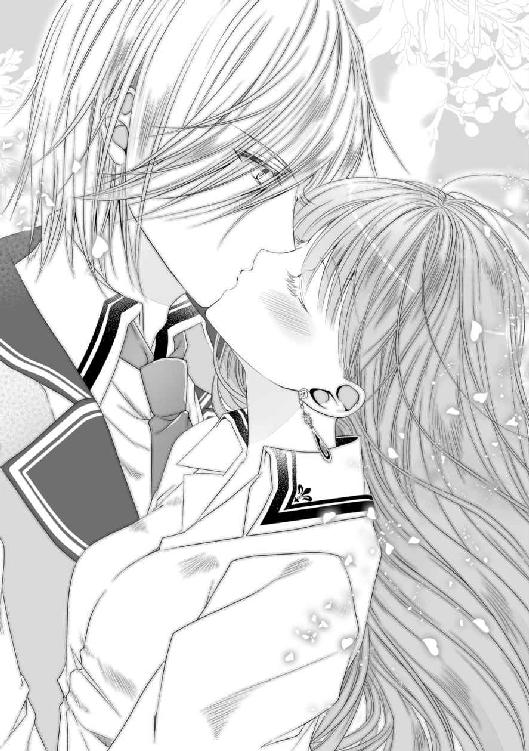
「............っ!?」
ほんの少しだけ。身長差ゆえの下からの隙。すり寄せた体をそこに入り込ませて、触れる。本当にかすかな、けれど温かくて柔らかい感触。唇と唇が、触れ合う一瞬。
「私から触れたなら、誰も文句は言えませんよね？」
もっとも、こんなかすかな触れ合いでは、何の意味もないだろうけど。......が、予想外にも効果はあったらしい。
「先輩？」
無駄に美形な顔を驚きの形で止めたまま、先輩が動かなくなった。
「せんぱーい？」
もう一度すり寄って顔を覗き込む。なんだろう、固まっている。呼吸も脈もあるけれど、表情がぴっちりと張り付いてしまっている。
「......ギル？ 大丈夫？」
もしかして、嫌だったのだろうか。本当に少しだけしか触れていないのだけど。三秒ほど待って、もう一度名前を呼びかける......と、彼はようやく動き出した。全身の血をかき集めたぐらい、耳まで真っ赤に染め上げて。
「え？ え、あの、先輩？」
「メリルは、もう少し色々、気にするべきだと思う。病院だとしても、ベッドの上に男女二人とか、俺もその、どう止めていいものか」
途切れ途切れの台詞は、ギルベルト・クラルヴァインとは思えないほどに覇気がなく、弱々しい。その後もぽつぽつ何か言っているようだけど、声が小さすぎて聞き取れない。
「あの、先輩？ なんか、ごめんなさい」
どうしたらいいかわからないので、とりあえず謝ってみる。と、今度は真っ赤な顔のまま、凄まじい勢いで両手を握られた。
「うわっ！ あ、ご、ごめんなさいっ!?」
「メリル、一つだけ言わせてくれ」
今度はいつもの先輩の声。ハッキリとよく通る、心地よい音。
「俺だってメリルが大好きなんだよ！ 惚れた女のために死力尽くすのは当たり前だ！ 大事にもする、何だってする！ それだけだ！ だから、早く良くなって俺の可愛い恋人で居てくれ！ 以上!!」
「............はい？」
元の声に戻ったと思ったら、えらい早口で叫ばれた。しかも内容が、えらく恥ずかしいことを言っているような......？
聞き返そうとすれば、先輩は風のような速さで私の額にキスをして、そのまま病室から走り去って行ってしまった。帰り際に、ちゃんと扉を閉めるのは忘れずに。
「......え、あの、なに今の？ え？」
白に統一された簡素な病室に、残ったのは私一人。脳の許容量などとっくに超えて、事件と、事実と、大好きな人の言葉がぐるぐると回る。理解した私が身悶えるまで、あと三秒。
ぐっすりと休んで一晩を経て――時折身悶えていたのは見なかったことにしてもらって。迎えた翌日、お医者さんたちに見送られながら、私は病院を後にした。外は快晴の青空、たった二日とは言え絶好の退院日和だ。
「ふっ......んんっと！」
まだ固い関節を伸ばしつつ、学院までのそう遠くない道をゆっくりと歩く。良いことも悪いことも色々あったけど、私は無事に生きている。当たり前だったことに、心から感謝をして。
開店準備中の店を眺めながら、十分も歩けば見慣れた敷地に入る。ひとまずは寮に行って、お風呂と着替えを済ませてしまおう。幸い上着はかけてくれたけど、着たきりだったブラウスやスカートは多分皺がついてしまっているだろうし。
視界に広がるのは、教育機関とは思えない美しい白亜の学院。最後に見た戦場とは違う姿にホッとして、門をくぐる。『たった二日なのに、帰って来れる場所があるっていいなあ』なんて、柄にもなく感傷的なことを思いながら。
「フォースターさん、ご無事で何よりです」
身支度を済ませて遅い登校をすれば、すぐに技工科準備室へと促された。二度目の訪問を迎えてくれるのは、最近縁のあるバレット先生だ。青い髪に裾の長い灰色のローブ。変わらず不思議な印象を受ける先生だけど、その表情は少し疲れているみたいだ。
「我々の監督不行き届きで危険な目に遭わせてしまって、本当に申し訳ない」
「いえ、あの日は本当に大変だったみたいですから。先生がたは悪くありませんよ」
思い出せる風景と言ったら、正しく焦土。轟音と黒煙が彩る戦場だった。激戦区にいたのは確かだけど、他がまるきり無事と言うこともないだろう。あの騒ぎを監視しつつ、評価だ成績だなんてことまで考えなきゃいけない先生こそが、真の功労者に違いない。
「そう言って頂けると助かります。クラルヴァイン君から話は聞いていますか？」
「犯人の女子についてでしたら、概要だけは」
「そうですか。念のため私からもお伝えしますと、彼女は結界魔術を専攻していた五年生でした。授業態度も真面目で優秀な生徒だったので......残念です。彼女は退学処分とし、今は公安機関に身柄を拘束されています。今後学院に関わることはもちろん、貴女に手を出してくることもないでしょう」
「そう、ですか」
どこか悲しげに語る先生に、私もただ頷くことしかできない。先輩や先生の言葉から察するに、あの箱結界はなかなか難しい術だったはずだ。本当に勿体ないと思う。
ただ閉じ込めるだけに止めておけば、ここまで重い罰にもならなかっただろうに。あるいは、私を害する手段も魔術を用いていれば。同じ毒でも、自分で生成したものだったなら。厳重注意ぐらいで済んだかもしれないのに。
（試験の告知が急で、準備時間が足りなかったことが、運命の分かれ道を作っちゃったのか）
お医者さんが言うには、使われた毒は量産品であり、調合も非常に雑だったらしい。だからこそ、相性の悪い私でもこの程度で済んだのだと。私にとっては良かったけど、その人にとっては......。
もっとも、神経毒なんて危険なものを即実行した人なら、遅かれ早かれ同じ結末を迎えていたのかもしれない。彼女の運命はもう変わってしまったのだ。以降は害されることもなければ、私が口を出すこともできない話だ。ほんの少し同情を覚えつつ、先生に頭を下げて準備室を後にする。これでこの件は本当におしまいだ。
「......メリル？ ちょっと、アンタ大丈夫なの!?」
授業の終わりを見計らって教室へ入ると、モニカを始めとしたクラスメイトたちが一斉に詰め寄って来た。どうやら概ねの事情は伝わっているらしい。そりゃ私は入院したし、彼女は退学になったのだから、それなりに大事なのだろうけど。
「一時ちょっと危なかったらしいけど、もう大丈夫。解毒もちゃんとできたし、体質的に合わなかったのが一番の原因みたいだから」
「全く！ 下級生に毒を盛るとか有り得ないわよ！」
怒りと心配半々と言うところか。眉を吊り上げたままのきつい表情で、私の頬や手を触って確かめている。私のことで真剣になってくれるモニカは、やっぱりとても得難い友人だと思う。
「ありがと、モニカ」
「あたしにお礼言われてもね。つか、今回もクラルヴァイン先輩絡みだったんでしょ？ アンタたち、本当に上手くいってるの？」
「それは心配ないよ。どっちかって言ったら進展したかも」
「......まだ進展することがあったのか、バカップルめ」
なにその呼び名。何故か他のクラスメイトたちもうんうんと頷いている。いや、君たちの前では昼食を一緒にとるだけの関係だったと思うんだけど。
「まあ、当人が許してるなら外野はうるさいこと言わないけどさ。先輩は多少なりとも理解してるのよね？ 責任とか」
「彼は何も悪くないよ。むしろ、ずっと私を守っててくれた人なんだから。変な責任を負わせるつもりはないわ」
「......訳がわからないわ。何でそこでアレを庇うのよ」
真面目に返したはずなのに、モニカは何故か不服そうだ。別に庇っていないし何も悪くないのに。世のモテ男を見る目はやっぱり不公平だわ。
「ま、アンタが無事で、何の問題もないのなら、もうそれでいいけどね」
「うん、これでいいよ。むしろ、私が彼の傍にいたいです」
「どんな洗脳をされたら、そうなったのかしらね。ある意味興味深いわ」
ううむ、我が親友にもいつか理解してもらえる日は来るだろうか。恋敵とかそういうのになっちゃうのは嫌だけど、彼は本当に驚くほどいい男なのになあ。
何はともあれ無事に復帰したと言うことで、皆からはお祝いと労りの言葉を沢山もらった。親しい子はもちろん、普段あまり話さない男子まで声をかけてくれた。やっぱり嬉しい。この先どうなるかはわからないけど、私は戦場を駆け巡るよりも、こうして皆でわいわいやっていられる生活が続くことを願うばかりだわ。
「......では、今日はここまで」
聞き慣れた鐘の音が鳴り響く。午前授業の終わりを告げるそれは、同時に昼休憩の合図でもある。切り上げた先生の声に、待ちに待ったと言わんばかりのクラスメイトたちが意気揚々と駆け出して行く。いつも通りのありふれた光景。けど、何だろうか。今日は浮かれとはちょっと違う様子の生徒が多い。......何故か私に対して。
「ねえ、モニカ。自意識過剰でなければいいんだけど、私すごく見られてない？」
「そりゃ話題の恋人ですから？ あたしたちは昼ぐらいしか一緒に居るところ見ないし、気にするなってのは無理でしょう」
教材を片付け近づいてきた相方に問えば、ごく当たり前のように返されてしまった。話題のと言われても、決して良い出来事だった訳じゃないし、変に注目されても困るんだけどなあ。こっちの気を知ってか知らずか、皆視線をチラチラと投げかけるだけで、話しかけて来る訳でもない。言いたいことがあるなら、直接言ってくれた方が楽なんだけど。
「先輩のおかげで、注目されるのは慣れてるでしょ？」
「別に慣れてないし、クラスメイトにまで注目されたくないわよ」
「それはそうか」
苦笑いを浮かべつつも、モニカも助けてはくれないらしい。こっちは二日とは言え入院してたのに。好奇心はわからなくもないけど、加減して欲しいものだわ。
「人の視線って弱った体には堪えるんだけどなあ」
「まあまあ。ところで件のクラルヴァイン先輩、今日は遅いわね」
「え、遅い？」
言われて壁の時計を見れば、鐘の音から数分を刻んでいる。......たった数分だけだ。
「あのねモニカ、六年生の教室からどれだけ離れてると思ってるのよ。彼にだって授業もあるんだし」
呆れて返せば、何故かモニカの方が更に呆れた表情で息を吐く。
「実際超人並みの早さで来てたから言ってるのよ。毎日キッチリとね。アンタも驚いてたじゃない」
確かに最初の頃は驚いた。逃げようと必死なこちらを上回る早さで迎えに来られたのだから。あれは正に超人の動きだった。けど、それは最初だけ。今の私は逃げたりしないし、先輩も大急ぎで迎えに来る必要はない。
「アンタが気にしてないならいいけど。でも先輩、いつもならもう来てるわよ？」
「そ、そうかな？」
繰り返し言われてしまえば、本当に遅い気がしてしまう。クラスメイトたちも気になるのか、しきりに扉を見たり、開けて確認している子までいる。
「また実技授業でもあったのかしら」
「そこまで把握してないけど......確認するけど、アンタたち上手くいってるのよね？」
「それはもちろん......」
すっぱり肯定しようとしたのに、意図せず言葉に詰まってしまう。色々乗り越えた昨日の今日。私としては上手くいってると思うけど、いまいち自信が持てない。『遅い』と言う今のそれが、不安に繋がっているのかもしれない。
「......ちょっと外見てみるね」
「はいよ。先輩来てるといいわね」
誤魔化すように立ち上がった私に、相方は優しく笑いながら手を振ってくれる。なんだかんだで心配して......今は多分応援もしてくれている彼女に、口ぐせのような感謝を返して扉に手をかけた。
「......いない、か」
見慣れた廊下の風景。楽しげに、あるいは気だるげに歩いて行く生徒たちの中に、先輩の姿はない。室内の子たちと同様に、廊下の生徒たちも気遣わしげにこちらを窺ってくる。
（もう、モニカが遅いなんて言うから、気になるじゃない）
軽く息を吐いて、扉の開閉の邪魔にならないよう、私も隅っこに移る。もしかして、私が退院していることを聞いていないのだろうか。昨日は走って帰ってしまったし。いや、上級生を担当するバレット先生には会ったんだ。気の利く人だし、彼が関係者に伝えていないとは考えにくい。
（だったら、どうしたんだろう）
通り過ぎる生徒、特に背の高い男子を目が追ってしまう。あんなきれいな男の人、他の誰かと見間違えるはずもないのに。
「先輩......」
唇に触れて、またため息。昨日の今日だからこそ、ここで会えないのは気になる。私たちは進展したはずなんだ。元気になって、望まれた恋人に戻れる今日は、貴方に会いたいのに......。
「......ん？」
後ろ向きな考えに落ち込みそうになった矢先、ふと景色に違和感を覚えて目をこする。廊下の柱の一本、その側面に何かはみ出ている。いや、あれは制服だ。その肩の部分が柱からはみ出ている。あの位置に肩があると言うことは、背の高い人物であって......。
「......はみ出てますよ、先輩」
「メ、メリル!?」
複雑な心境で覗き込めば、案の定そこに居たのは待ち人ギルベルト先輩だった。行動が読めないところは変わらないのね、この人。何やってんですかとツッコミを入れようとして......振り返った彼の顔を見たら、台詞が引っ込んでしまった。
「顔、真っ赤ですよ」
「......知ってる」
先輩の顔はびっくりするほど真っ赤だった。恥ずかしそうに手で覆うけど、耳まで染まったそれは隠しきれていない。モテ男で有名な彼とは思えないような様相。何があったと言うのか。
「悪い、結構前から迎えに来ては居たんだ。だけど、どんな顔して会ったらいいのか、わからなくて」
つい隠れてた、と消えそうな声で呟く。誰だこの可愛い人。遅いのは本当だったみたいだけど、こんな理由を返されるのは想定外だ。
「私に会いたくなかったと言うことですか？」
「違う！ そんなことは有り得ない。ただ、何と言えばいいのか......恥ずかしかったと言うか」
はずかしい？ 初対面の女を押し倒したり、子供を産んでくれと平然と言ってきた男が。無表情で常識はずれなことばかり言ってきた、あのギルベルト・クラルヴァインが。
「先輩、そんな感情あったんですね」
「ああ。俺も初めて知った。だからこそ、どうしていいかわからん」
思わず出てしまった大変失礼な言葉にすら、こくこくと頷いて返してくる。容姿の鋭さや普段の雰囲気の冷たさなどどこを吹く風。どうしよう、この人ものすごく可愛いです。
先輩に釣られたのか、私の顔まで熱を持ち始めて、思わず視線を逸らす。ただお昼ご飯を食べに行くだけなのに、二人そろって何をやっているのだろう。それも廊下の隅っこで。
「............」
恐る恐る視線を戻せば、先輩も押さえた指の隙間から私を見ている。隠しきれていない金眼に私のマヌケな顔。そして恐らく、私の目にも彼のマヌケな様子が映っている。無言で見つめ合って三秒、結局どちらからともなく吹き出した。赤い顔のまま手を伸ばして、しっかりと繋ぐ。
「......メリル」
「はい」
「はは、駄目だな。なんか、どうしてもニヤける」
本当にこんなところで何やってるんだか。けど、胸がとても温かくて、ふわふわした感覚で満たされていく。
「話したいことは沢山あるけど、食べながらでいいよな？」
「そうですね。早くしないと、日替わりランチ売り切れてしまいますし」
「そうだな。けど、あと十秒だけ待ってくれ。顔を元に戻すから」
「......私、戻せないかもしれません」
だって今、気を抜いたら足が浮きそうなぐらいにふわふわしているのだ。色々あった。大変な目にも遭った。残念なことになってしまった人もいるけど、私たちはとても幸せな結果を得てここにいる。後でモニカには自信を持って伝えておこう。私たちはちゃんと恋人で、上手くいってます、と。
その後、先輩いわく戻した顔は全然戻っておらず......具体的には、いつも私に向けてくれる、あの柔らかい微笑み顔のままで固定されていて。彼の基本と言うべき無表情しか知らない人たちには、色んな意味で注目されてしまったのだけど、今度は不安には感じなかった。繋いだ手の温かさがあれば、誰にどう見られても平気だと思えてしまったのだから仕方ない。
危機を乗り越え絆を深く。戻ってきた日常は、とても幸せな色をしている。
あれから私たちの日常は、穏やかにゆるやかに過ぎていった。懸念していた他の適性者の登場もなく、私は今まで通り平凡な学院生活を続けている。
例の演習試験の結果を受けて、攻撃的な女子もかなりいなくなった。多少睨まれたり陰口を言われたりはするけど、命の危険がないなら気にすることもない。そうモニカに言ったら、短期間で強くなったわねと苦笑されてしまった。相手が相手なんだから、こればっかりは仕方ないことだ。
さて、周囲は落ち着き邪魔はされなくなったけど、私たちが進展したかと問われれば......残念ながらしていない。と言うのも、
「あれ、先輩今日も駄目なの？」
「うん、また実家関係で欠席みたい」
「また長いわね。もう十日ぐらい経ってない？」
昼休憩になってすぐ、扉でなくモニカを迎えに行った私に、相方は少し肩をすくめて返す。そう、先輩は今年卒業する最高学年。加えて、魔術名門家と次期子爵と言う二重肩書きを継ぐ極めて多忙な身の上なのだ。
本来ならば引き継ぎに集中するべき年頃に学院に在籍しているものだから、当然卒業した後には多大なツケを払わなければならない。すでに間に合わなくなってきているのか、このところ欠席が多く、もう何日も顔すら見ていない。こう言う部分は『身分を問わず』とうたっている割に、貴族に対して優しくないと思う。わざとなのかもしれないけど。
とにかくそんな状態なので、周囲は落ち着いているにも拘わらず、二人の時間は取れていないのだ。寂しくないって言ったら嘘だけど、こればかりは私が口を出せる問題じゃないし、困らせたくもない。それよりも彼の体の方が心配だ。ちゃんと食べているだろうか、休んでいるだろうか。
「......見事なまでに心ここにあらず、ね。ご飯食べ損ねるわよ」
「え？ あ、ごめん」
ハッとすれば、眼鏡越しに心配してくれるモニカの目。意識を切り替えれば、昼時の食堂の喧騒が戻って来た。
「意識飛んでるわよ。なに、また考え事？」
「先輩大丈夫かなって、ちょっと心配になってさ」
「そこですぐそう言う台詞が出る辺り、アンタ恋人の鑑よね。先輩もこんないい女ひっかけて幸せ者だわ」
呆れたように笑いつつも、ポンポンと私の頭を撫でてくれる。寂しいって騒がないで済むのは、こうしてモニカが気を遣ってくれるからなんだけどね。
「有難うモニカ。ボーっとしちゃってごめんね」
「あたしは構わないけど、食事はちゃんと摂りなさい。彼が心配なのはわかるけど、そんな理由でアンタまで体調崩したらただのバカよ」
「おっしゃる通りです」
ほとんど手付かずだったご飯に、慌てて口を付ける。本当にモニカの言う通りだ。先輩の事情には手を出せないのだから、私は元気で彼を待っていなくちゃいけない。それこそが、今の私にできる最善なんだから。
（そう、頭ではわかっているんだけどね）
平皿に小さく切り分けられたお肉は、彼がよく食べていた日替わりランチだ。こんな風ではなく、もっときれいに分けていたけれど。窓辺の『いつもの席』は空いたまま。見慣れた風景に、彼が足りない。
「......寂しいと思うのは、仕方ないよね」
「......そうね」
そうして、ところどころぼんやりとしたまま、今日も一日が終わる。こんなの二年生だからこそ許される態度だろう。実技授業が多い上級生だったら、怪我では済んでいなかったかもしれない。それぐらいに我ながら重症だ。恋愛とは正に病気ね。
モニカは私の頭を撫でてから「いつでも愚痴は聞く」と笑って言い残し、先に寮へ帰って行った。恐らく気を利かせてくれたのだろう。他のクラスメイトもそれぞれに教室を出て行き、気が付けば残っているのは私一人だけになっていた。
（......何やってるんだか）
視線を上げれば、窓の外が青から赤へと変化していく。濃い橙色の陽が世界を染め上げるこの時間は、やっぱり少し特別だ。彼と出会ってからは、特に色んな出来事が起こっていた時間だから。
（うわ、なんだか既視感）
誰もいなくなった教室に一人。強い夕日の光と長く伸びた影。そう言えば、あの時は確か本を読んでいたんだったか。友達に薦めて貰った小説が思いの外面白くて、つい集中して読んでしまって。
（気が付いたら一人だけになってて、驚いたのよね）
帰らなきゃって片付け始めたところに、急に知らない先輩が入って来て......。
「〝見つけた。捜したぞ、メリル・フォースター〟」
ぐるん、と回転する視界。窓を見ていたはずの目は、いつの間にか天井を見上げていて、さらにその景色を、とてもきれいな男の人が遮る。この橙色の世界においてなお、他を圧倒する刃のような青銀。整った輪郭の内側には、すっと筋の通った鼻と抜群の位置で引き結んだ唇。そして、私のマヌケな顔を映す金色の瞳。
......かつてとの決定的な違いは、その瞳には確かに熱があり、穏やかに微笑みながら私を見つめている。机に倒された体も痛くないように配慮されているし、縫い付ける手も動かしたらすぐに外れた。
「......名前を、聞いた方が良いですか？」
「酷いな。もう俺の顔なんて忘れたか？」
眉を下げながらも、微笑みは崩さない。私が伸ばした手を受け止めて、手のひらに静かに唇を寄せる。触れ合った部分がとても温かい。ああ、先輩の体温だ。
「逢いたかった」
「ああ」
長い影が重なる。挑発でも寸止めでもなく、深く深く唇を重ね合わせて。首筋に腕を絡ませれば、彼も抱き締めて応えてくれる。逢えなかった時間を埋めるように、何度も何度もキスをして互いを確かめ合う。熱くて痺れるような感覚がたまらなく愛おしい。
ほんの十日程度のことだ。何かあった訳でもなく、ただ彼に逢えなかっただけ。なのに、どうしてこんなにも胸が苦しくなるのか。目頭が熱いのか。
「......メリル、泣いているのか？」
唇を離した先輩が、驚いたように聞いてくる。大きな手のひらが触れた頬は、確かに濡れているようだ。
「泣いてるみたいですね」
「悪い、嫌だったか？ 苦しかったか？ つい流れに任せてキスしたんだが......」
途端におろおろと私の顔を覗き込む。大丈夫か、と何度も繰り返す様子はずいぶんと初々しい。何この可愛い生き物。あの鋭く美しい先輩はどこへ行ってしまったのだか。
「......ふふっ」
大丈夫な意思表示も兼ねて、彼の広い胸板に顔を埋める。彼の体温、彼の空気。少し速い鼓動の音さえ、たまらなく心地よい。だからこそ、また涙が溢れてくる。
「逢えないの、寂しいだけです」
自分で口にしておいて、また鼻の奥がツンとした。そう、今はたった十日逢えなかっただけだ。けど来年には......彼はここにはいない。彼の足りない風景が当たり前になってしまう。私の卒業まで、まだあと四年もあると言うのに、先輩が足りない。
「......わかりきってたことなのに、十日で堪えたものですから。考えたく、なくて」
話している間にも、ぼろぼろと涙がこぼれてくる。十七歳にもなって、こんなことで泣く日が来るなんて。そもそも、私みたいな劣等生がこの学院に居られるだけでも奇跡に近いと言うのに。ちゃんと卒業できるかどうかも危ういのだから、自意識過剰も大概にしろ。
（わかってる。わかってるけど......！）
それでも涙は出るのだから仕方ない。今の私はこの人が好きで好きでたまらないのだ。他のことなんて考えていられる余裕がない。逢えなくなる未来が、とても辛い。ひとしきり喋りきって、彼の胸に頭をこすり付ける。......と、頭上から降ってくるのは噛み殺した吐息。ゆっくり顔を見上げれば、先輩は何故か笑いを堪えて肩を震わせていた。
「ちょっと、幼稚なのは自覚してますけど、何も笑わなくても......」
「あ、いや......くくっ悪い、違うんだ。バカにしてるとかではなくて。メリル可愛いなあ、と。あと、俺頑張って良かったと思って」
後半にいくにつれて、声が甘くなっている。頑張ったと言うのは、家の引き継ぎのことだろうか？ あまり働かない思考を巡らせていると、先輩は懐から何かを取り出し、私に差し出した。
「封筒？」
高そうな白地のそれには、学院の封蝋が押されている。一度開けた跡があるので、確認してから私も中身を失礼する。同じく高そうな厚い紙にも学院の印。正式な書類のようだけど......？
「研究生制度登録証？ なんですか、これ」
「あ、二年生はまだ知らないのか」
達筆な字で記載されたそれには、先輩の名前がしっかりと入っている。よくわからないので丁寧に畳んで返すと、先輩は微笑みながら説明をしてくれた。
「『研究生制度』と言うのは、主に学院の教師を目指す生徒を対象としたものだ。一定以上の成績を修めている者にだけ与えられる権利で、卒業した後も自由に学院に通うことができる」
「............」
学院に、自由に、通う？
「ここは国内屈指の研究施設だからな。卒業後にも利用したいと言うヤツはとても多い。教師を目指す連中は、実地訓練もさせてもらえると言う訳だ」
「え、ちょっと待って下さい？ 先輩は先生を目指しているんですか？」
「いや、俺は家を継ぐから、さすがに毎日は来られないけどな」
動揺する私をからかうように、ニッと白い歯を見せて笑う。
「悲しんでるところ悪いが、来年からも俺は学院に居る、と言うことだ」
とりあえず、メリルが卒業するまではな、と。極上の笑みと共に告げられた言葉に、私は今度こそ全力で彼に抱き付いた。二、三歩たたらを踏みつつも、受け止めてくれた先輩はしっかりと抱き締め返してくれる。大きな手で、私を離さないように。
「登録証を取るのも面倒だったが、親類の説得はもっと面倒だった。おかげで、ここしばらくメリルに逢えなかった」
「はい......はい......っ！」
「でもまあ、喜んでくれたなら苦労の甲斐もあった。悪いが、手放してやるつもりはない。四年も待ってたまるか」
「はい、先輩！」
顔を見合わせて――私は多分涙でぐちゃぐちゃだろうけど――額をくっつけて笑う。この温かさと、まだずっと一緒にいられる。悲しかった涙は嬉し泣きに意味を変えて、また頬を伝っていく。
「......四年もあれば、何でもしてやるさ。まだやれる手は沢山ある。必ず」
「他にも、なにか？」
「............諦めたくないからな、結婚も」
ぽそ、と落ちた呟きに、先輩の顔がみるみる赤くなっていく。「せっかく格好つけたのに」なんて、何をしても貴方は素敵ですよ、本当にもう。
「メリル、好きだ」
「私も、貴方が大好きです」
始まりと同じ橙色の日差しの中。長く伸びた二つの影は、最後の鐘が鳴るまで重なっていた。
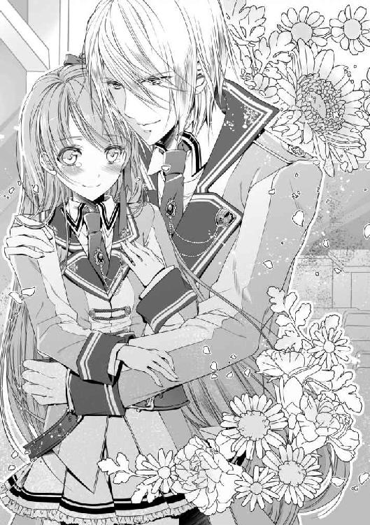
魔術学院の恋愛事情 あの日の裏側
世界の全てが赤くなるひと時。初めて出会ったこの場所で、俺たちはあの時とは違う立ち位置にいる。分け合う体温も重なる心音も、何もかも愛おしい。メリルといると、目に染みる日差しすらも美しいから不思議だ。この腕に彼女を迎えられるなんて、叶うとは思わなかった。
メリルは知らないだろうが、あの日ここに居た男と今の俺は、実のところ変わってはいない。『頭のおかしい男』は、感情を隠すことが得意な男でもあったのだ。出会いの裏側、その心の内は、彼女にはもう少しだけ秘密にしておきたい。......恥ずかしいので。
あの日、夕日が染め上げる長い廊下を、苛立ちを隠すこともなく歩いていた。生徒たちはすでにほとんどが寮へ帰り、静まり返った学舎に俺の荒れた足音だけが響き渡る。
『しばらく傍に寄りたくもない』そう思ったばかりだと言うのに、皮肉にも俺が捜していたのは、近寄りたくもない存在――女である。心底面倒くさいし関わりたくないが、これを確かめなければもっと面倒くさいのは目に見える。仕方なく、実家の占術師が伝えた名前と、その女の学友に聞いた容姿を思い出しながら、下級生の教室へ向かっていた。
何度か扉を開けては確かめ、三つ目でようやく見つけた女は、聞いた通りの濃い青髪の生徒。いそいそと帰り支度をしている背を捉えて、抵抗されないように押し倒した。
「見つけた。捜したぞ、メリル・フォースター」
腕の中に捕まえたのは、女より少女と呼ぶ方が似合いそうな小柄な生徒。ぱっちりとした緑色の目と視線が合う。
（あ、可愛い）
ぽろっと、そんな言葉が口を滑りそうになった。美女と言う訳ではないが、子犬や子猫を見た時のように、純粋に可愛いと思ってしまった。女の方は、こんな体勢にされたのに色を構える様子はなく、かと言って悲鳴を上げたり抵抗する素振りも見えない。見上げる目はただまっすぐに、かと言って関心を示している訳でもなく、俺を映す。
「どこを見ている？」
我ながら冷たい声が出てしまった。興味を持たれないことが、気に障ったとでも言うのか？ 距離を少し縮めてみれば、ほんのりといい匂いがしてくる。清潔感のあるこれは石鹸だろうか。妙に鼻につく『流行りの香水』とやらを撒き散らしていた令嬢より、よほどいい匂いだ。ふらふらと誘われるように顔を近づけていく。何故か〝触れてみたい〟と強く思って。
「......あの、先輩。聞いてもいいですか？」
「なんだ？」
「なんで私、名前も知らない先輩に押し倒されているんでしょう？」
この一言で、冷水を浴びせられたような気分になった。
最後の恋人といつも通りの別れをしてしばらく経つ。そろそろ大丈夫かと思った矢先に実家から要請が入り、休暇を申請して帰省した。小旅行とでも思って気楽な気分で帰ったのに、俺を迎えたのは大量の姿絵と、あちこちから来た夜会の招待状だった。
学院では貴族として特別視されているが、子爵など社交界では下位にあたる。クラルヴァインは魔術師としての顔がある分、多少良くは扱われるが、それでも上位の家に逆らうことはなかなか難しい。学院を口実にかわし続けて来た婚姻話も、そろそろ逃げられない時期だ。
家柄を笠に着た令嬢たちは、化粧と香水の匂いをこすり付けながら、色恋を語り、俺の時間を消費させていく。「離れろ」の一言すら口にできない立場、ひたすらに耐えて耐えて......ようやく学院に戻って来られた時には「なんで帰省して痩せて来るんだ」と友人に心配されたほどだ。それが昨日のこと。女なんてこりごりだと思っていたのに。
（彼女が俺を知らなくて、悲しいのか？ 動揺しているのか？）
いや、理由はわかっている。彼女はあの女たちとは全然違う生き物だ。変な匂いはしないし、俺に無理矢理近づいても来ない。むしろ、いい匂いがして柔らかくて、愛らしい容姿。正直に言うなら、妖精に見えるのだ。こんな女がまだ居たなんて！
そして、彼女は俺のことを知らない。学院では力を持つクラルヴァインの名前を知らない。むしろその方がいいし、名乗りたくない。今は平然としてくれている彼女が、この名で態度を変えたら嫌だ。いつもの女たちと同じになったら、今度こそ女性不信になりそうだ。
「......俺は六年のギルベルト・クラルヴァインだ。それなりには有名なつもりだったが、まあこんなものか」
悩んだ末に、結局名乗った。どう言う反応が来るのか、無表情を装いつつも待つ。
「ああ、クラルヴァイン先輩。名前だけ聞いたことあります、少し」
「そ、そうか。少しか」
よし！ さすが下級生、俺のことはあまり知らなかったようだ。思わず息を吐いたら、くすぐったそうに身をよじっていた。その動作すら、とても新鮮だ。
彼女を怖がらせたくない。かと言って、急に甘い対応をして変わってしまうのは怖い。何より、今の体勢を見ろ。家で言われたことを確かめるためとは言え、俺は初対面の彼女を押し倒しているのだ。幸いにも俺は感情を表に出さないことが得意だ。動揺や困惑は見せず、なんとか今日を乗り切れ。そうしたら、どこかで謝罪の機会も作れるはずだ。
（男女の関係は無理としても、友人にならなってくれるかもしれない）
俺と普通に接してくれた、可愛らしく好印象の女子生徒。極めて少ないその存在を失いたくない。たとえ、残り一年しかなくとも。あの家に帰っても、思い出せるのが彼女なら。
「もう貴方と話すことはありません。失礼させて頂きます」
「なっ!? おい待て、メリル・フォースター！」
......淡々と、嘘をつかないように正直に話していたら、彼女は怒って去って行ってしまった。どれが悪かったのかはわからない。いや、いきなり押し倒したことがまず駄目だったのだろうとは思うが。俺にしては珍しく、その日は表情を偽ることもなく、とても凹んだ。
翌日は朝早くから準備を済ませて、女子寮の前で待つことにした。ざわめく心はいつも通り表に出さず、平静を装って彼女が出て来るのを待った。けれども、いくら時間が経っても現れない。時折話しかけてくる女たちの声色を気持ち悪いと思いつつも、ひたすらに耐えて待つ。......後から聞いた話だが、彼女はその日裏口から登校していたらしく。そんなことを知らない俺は、落ち込む心をひた隠しながら、しぶしぶ己の教室へ戻ったものだ。
それからの日々も彼女を追う毎日だった。感情は隠して表情は崩さずに。けれど、嘘はつかないように。それを心がけながら、メリルを追いかける。愛らしく貴重な妖精。友人になれればいい、なんて考えは日に日に薄れ。もっと傍に、もっと近くに行きたい、そんな我儘な心が抑えられなくなっていく。
やがて、彼女の前では感情を隠せなくなった俺が、紆余曲折を経て結ばれて、どれほど幸せだったか。妖精が恋人になって、俺の腕の中で笑ってくれるひと時がどれほど尊いか。無表情に慣れてしまった俺では、上手く表現できないかもしれない。
「メリル、好きだ」
だからこそ、今は言葉で伝えるようになった。彼女は少し照れた後、嬉しそうに笑ってくれる。外見で判断せず、クラルヴァインの名前にもなびかず。ただ、ギルベルトと言う俺を見てくれる大切な人。彼女を失わないためになら、これからも何だってできる。
「......そう言う訳で、俺の恋人は世界一可愛い妖精なんだ」
「おい誰か、医務室に連れて行け。クラルヴァインがついに壊れたぞ」
メリルには伝えていないが、クラスの友人にはこぼしたことがある。メリルがあんまりにも可愛いので、表現する言葉が見つからなくて困った。「のろけ勘弁しろ」と呆れていた友人は、今度は何故か保健医を捜している。俺が正気かどうかなんて見ればわかるだろうに。
「冗談ならまだしも、本気で言ってるから心配してんだよ。そんな性格だったか、お前」
「ずっとこんな性格だ。隠すのは得意だったがな」
なるほど、と苦笑しつつ視線を遠くへ向ける。やはり『妖精』では彼女の愛らしさは伝わらなかったのだろうか。かと言って、メリルに絡むようなことになれば、俺は六年来の友情を破棄しなければならないし。幸せを言葉にするのは難しいな。
「心配しなくても、お前の恋敵にはならんから睨むな。それに、お前気付いてるのか？ 理由とか色々言ってたけど、どう聞いても〝彼女に一目惚れ〟だぞ？」
「............あ」
今気付いた。確かに最初から可愛いと思っていたが。なんてことはない、そんなありきたりな理由で、俺は足掻いていたのか。結ばれてから気付いたことに戸惑いつつ、やっぱり彼女にはもう少し秘密にしておこう。せめて、格好つけて伝えられるようになるまで。
紅潮する頬を撫でつつ、無表情を忘れた俺は、彼女を想ってまた笑った。
この度は拙作をお手に取って下さり、誠に有難う御座います！ 作者の香月です。
まさかこの作品が、こうして書籍の形をとらせて頂ける日が来るとは......実はまだ夢心地でして、いつ目が覚めてしまうのかと震える超小心者で御座います。
何はともあれ、お砂糖ファンタジーラブコメ「魔術学院の恋愛事情」いかがでしたでしょうか？ 第一印象最低の顔だけイケメンと身近にいそうな女子高生ヒロインと言うありきたりな組み合わせではありますが、ヒーローギルベルトの残念さ加減には自信があります。むしろ、よくアレと恋愛をする気になったと言いたい所ですが、メリルはメリルで面食い惚れっぽい女子。なるべくしてなったバカップルと信じ、作者は砂糖を振りまくことに集中いたしました。少しでもお楽しみ頂けたなら幸いです。
今作の出版にお声をかけて下さり、最後まで導いて下さった担当様には足を向けて眠れないどころか、常時土下座したいぐらいにお世話になりました。本当に細部まで読み込んでご指摘を頂きまして......担当様とお話をする度に、私の目からは大量の鱗が落ちておりました。迅速かつ丁寧な対応、そして温かなお心遣い、本編七割ぐらいは担当様のお力ででき上がっています。本当に感謝の気持ちでいっぱいです。
そして、今作を彩るイラストを手がけて下さった石川先生。まさかこんなに華やかなキャラたちを描いて頂けるとは。イラストを見る度に「変な台詞喋らせてごめんなさい！」と謝り倒しておりました。ラフに萌え転がったのも良い思い出です。本当に有難う御座います！ ......内輪ネタですが、パレットも描いて頂きたかったです。
他にも、この作品に関わって下さいました全ての皆様に、この場を借りて心より御礼申し上げます。初めてづくしで不手際ばかりの作者でしたが、皆様のおかげでこうして一冊の本ができ上がりました。本当に有難う御座います！
最後に、この本をお手に取って下さっている貴方様。本当に、本当に有難う御座います！ 謝罪と感謝ばかりになってしまいましたが、これにて一旦閉幕。彼と彼女の物語が、少しでも貴方様の憩いになったことを願って、私は退場させて頂きます。
もしいつか、どこかでお会いできましたら、その時はまた甘いお砂糖話をご用意いたしますので、お付き合い頂ければ幸いです。それでは！
魔術学院の恋愛事情
２０１５年１月１日 初版発行
著 者 香月 航
発行者 杉野庸介
発行所 株式会社一迅社
〒１６０―００２２
東京都新宿区新宿２―５―10 成信ビル８Ｆ
制 作 大日本印刷株式会社
©香月航／一迅社
本書はフィクションです。実際の人物・団体・事件などには関係ありません。
本書の内容を無断で複製、複写、放送、データ配信等することは、堅くお断りいたします。